| 魔滅のトーコ 2 | |
| 畑中りんご | |
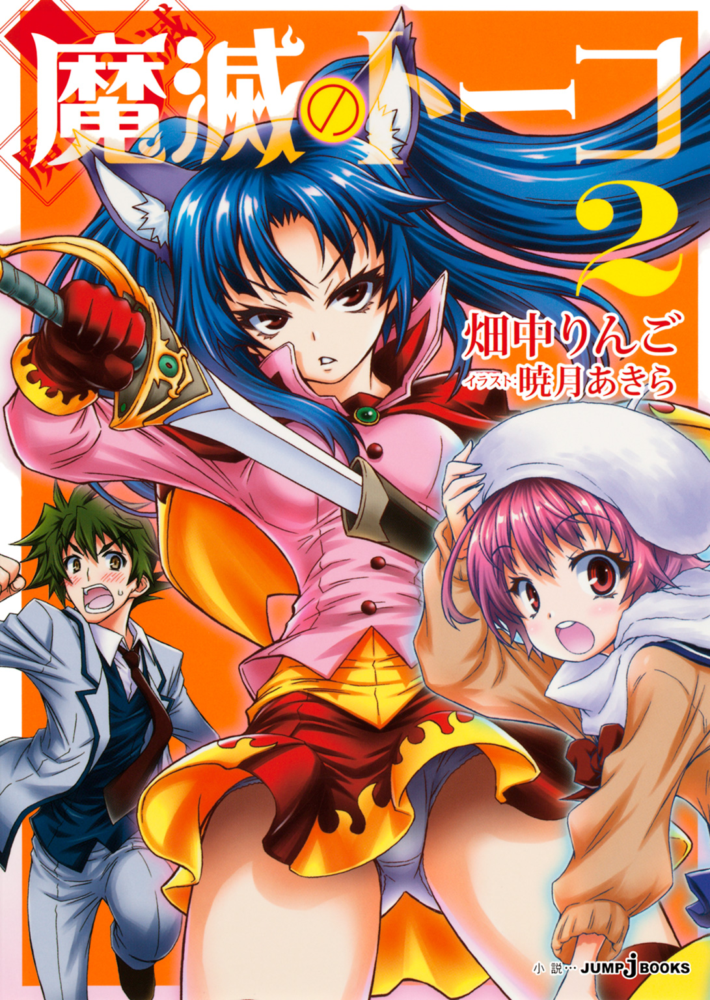
この本は縦書きでレイアウトされています。
また、ご覧になる機種により、表示の差が認められることがあります。
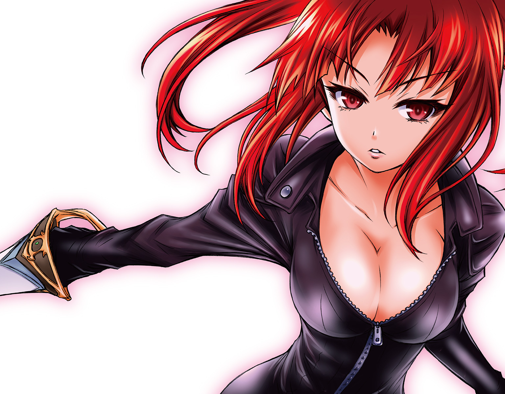
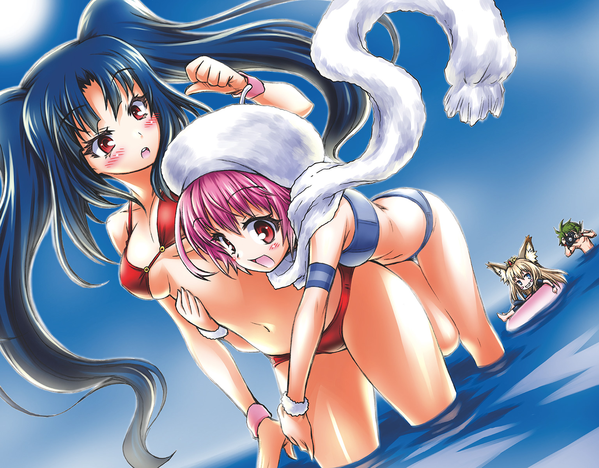
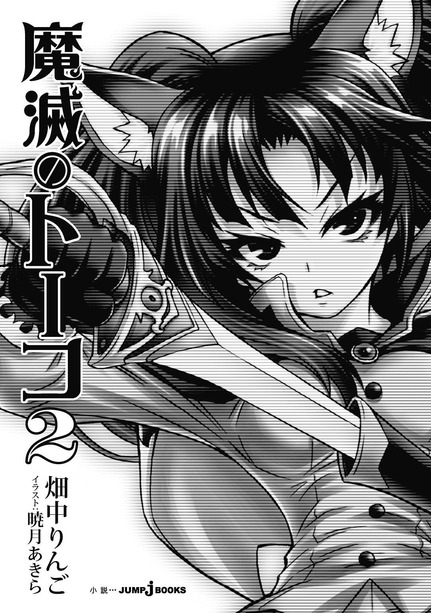
この作品はフィクションです。
実在の人物・団体・事件などにはいっさい関係ありません。
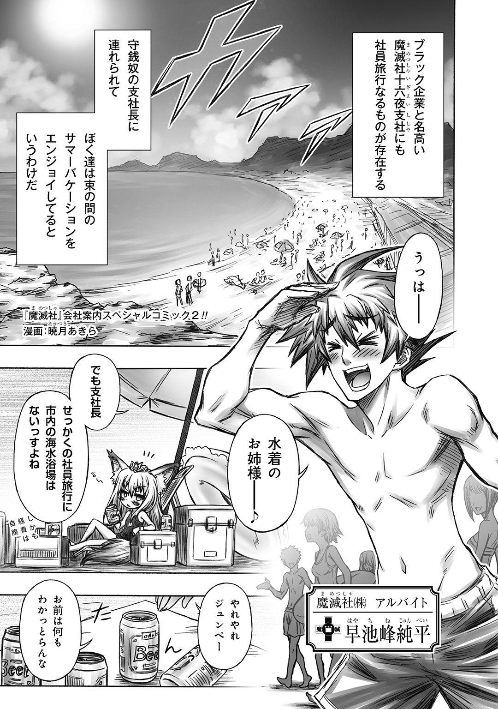
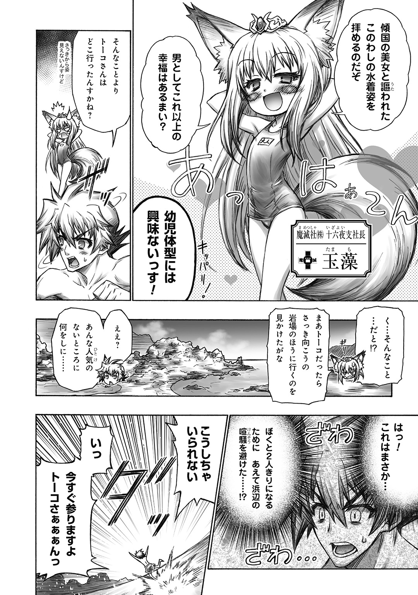
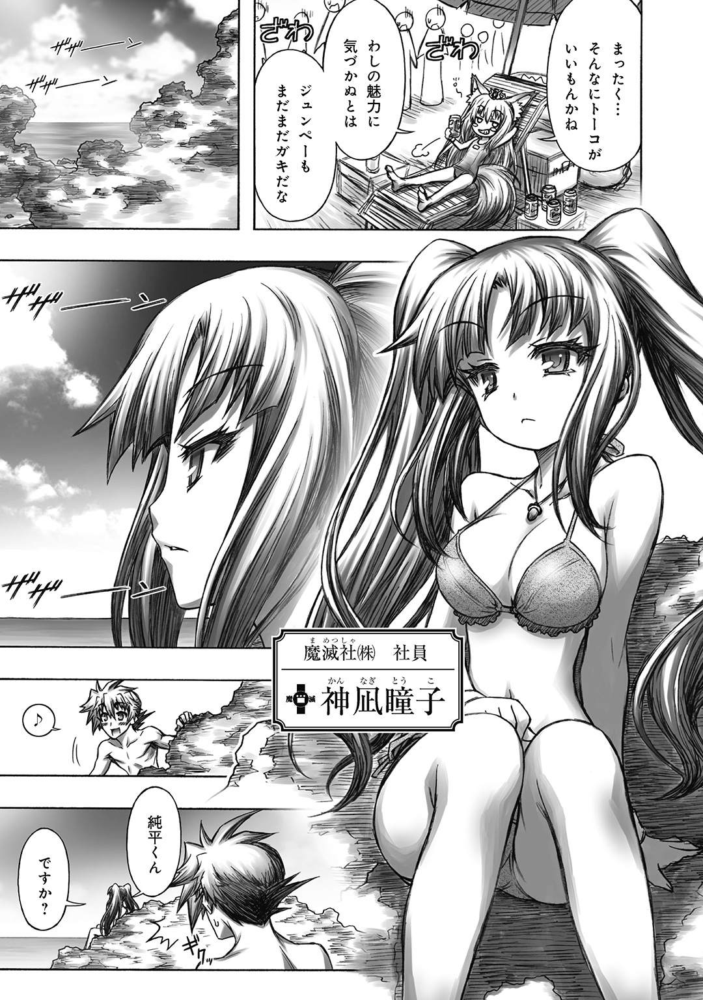
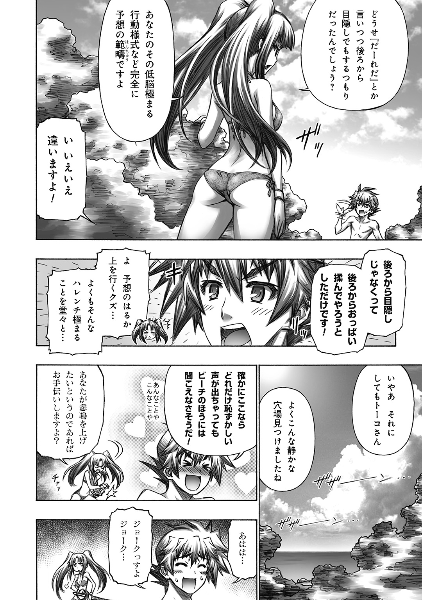
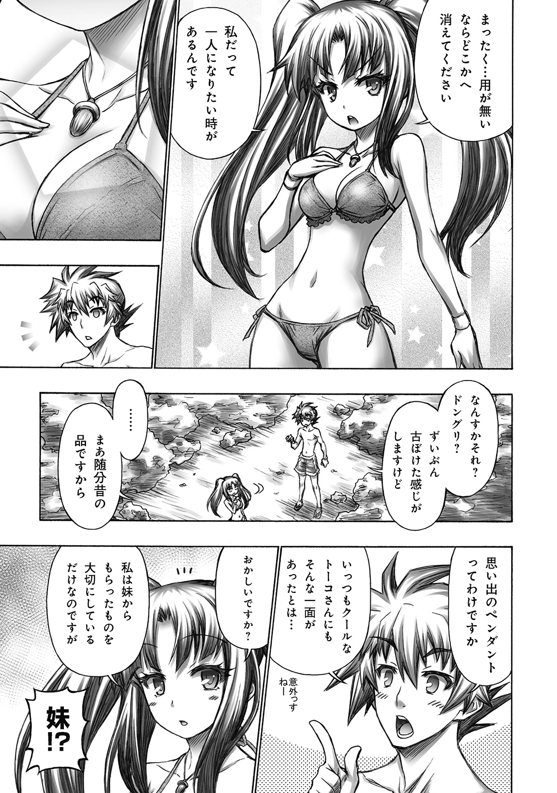
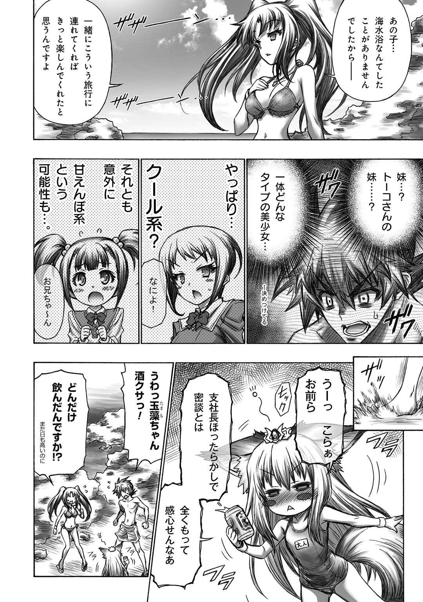
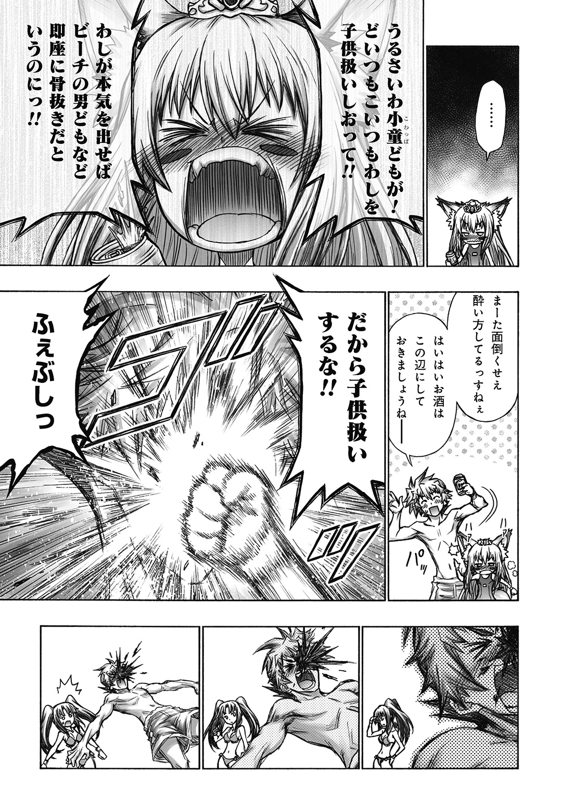
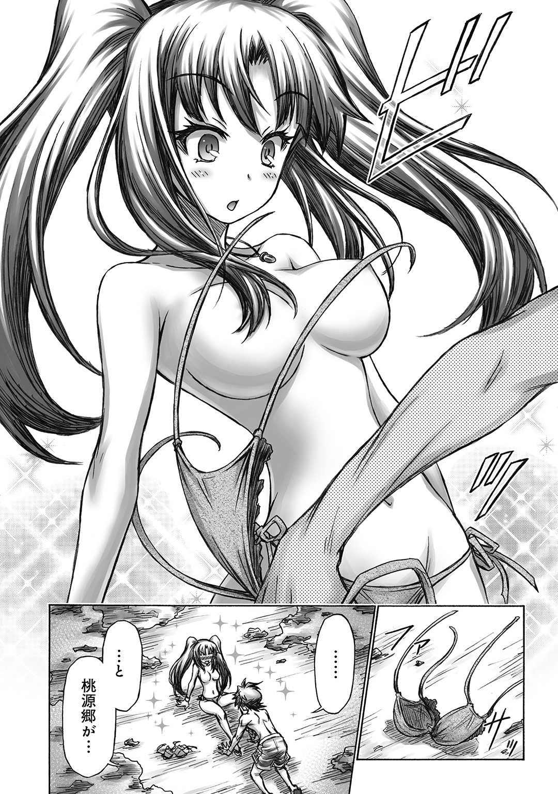
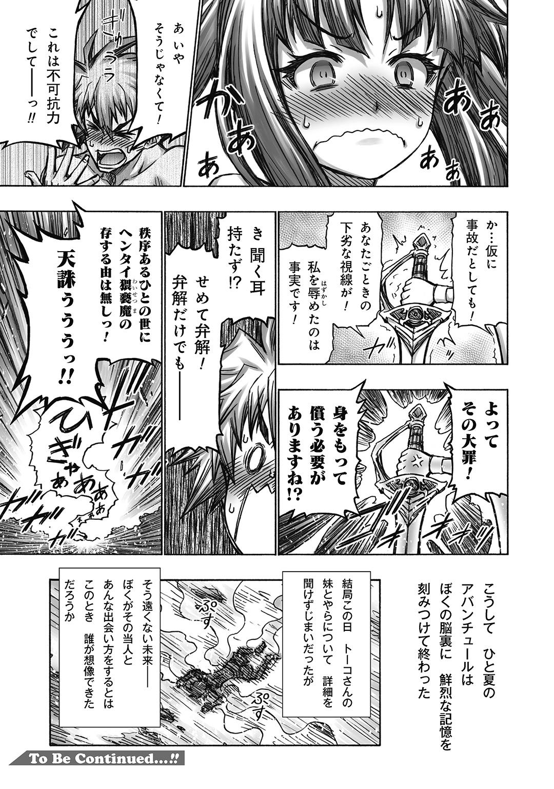
妖魔の蛮行から、日々ひとびとの暮らしを守る総合妖魔警備保障、魔滅社（株）。
神凪瞳子は、その十六夜支社におけるエースであり、ぼくの憧れる素敵な先輩でもある。
凜々しい眼差し。絹糸のように流れる黒髪。ほどよく均整のとれたバストに、スリムながらしっかりと柔らかそうな太もも。そして〝神降ろし〟による人間離れした業務遂行能力と、ぼくの純粋な情熱を踏みにじるかのごとき辛口な言動の数々――。どこをとっても魅力たっぷりなトーコさんなのだが、彼女について知らないことは、実はまだまだ多い。
たとえば、だ。
「はじめて買った下着の色は何色なのか」「お風呂に入ったときに身体はどこから洗う派なのか」「ベッドの中で囁かれて嬉しい言葉は何か」――これらの質問に対して、これまで彼女がまともに答えてくれたことはなかった（回答代わりに返ってくるのは、いつも冷ややかな視線と罵詈雑言だけである）。
それどころか、家族構成についても、トーコさんはほとんど黙して語らない。
由緒正しい巫女の家系で、どうやら中学生の妹さんがひとりいるらしい......のだが、彼女はそれ以上の情報を何も教えてくれようとはしないのだ。
トーコさん、まさかぼくが妹さんにセクハラをするとでも思って警戒しているのだろうか。いやいや、いかにぼくがリビドー溢れる男子高校生とはいえ、さすがにいたいけな女子中学生に手を出すなんてことはない。
うん。出さない。出さないはずだ。出さないと思う。出さない......よね？
それにしても、トーコさんの妹って、どんな子なんだろう。
やはりトーコさんそっくりの、クールで知的な真面目系なのだろうか。はたまた対照的に、明るく元気なアクティブ系なのだろうか。
まあ性格がどうであれ、機会があればぜひお目にかかりたいものである。
神凪家の女の子というからには、妹さんも麗しの美少女巫女なのだろうか。
彼女もまた、ぼくのフェティシズムを満足させてくれる〝神降ろし〟を披露してくれるのだろうか。
まだ見ぬもうひとつの絶対領域......。ああ、実に楽しみではないか。
「いっそのこと、コスプレ美少女姉妹がぼくを巡って恋の鞘当てをする......なんてことになったら最高なんすけど」
ここ最近のぼく――早池峰純平は、そんな妄想で自らを鼓舞しつつ、魔滅業務に従事する毎日を送っていた。だってほら、ちょっと前まで工事現場で散々マッチョな鬼さんたちに可愛がられる日々を送っていたのだ。せめて妄想くらいは大目にみてもらいたい。
もっとも、そんな甘い妄想はすぐに木っ端みじんに打ち砕かれることになるのだが――あの晩トーコさんと業務に赴いたぼくには、そんなことはまるで予想もできなかった。
十六夜市南部に位置する月成山。
県境に位置する標高五百メートルほどのこの山は、週末になると多くの観光客が訪れるスポットである。秋も深まるこの時期なら、紅葉狩りやキノコ狩りのグループがよく見られるだろう。遠足の幼稚園児なんかともすれ違えるはずだ。
しかし、それは昼間のお話。
夜十時を過ぎた月成山には、不気味な咆哮が響きわたっていた。
「ぶもおおおおおおっ！ ぶもおおおおおおおっ！」
道路脇の木々の葉が、雄叫びに震える。
ここは、「涅槃坂」と呼ばれるアップダウンの激しい連続カーブ地帯である。月成山の中でも、とくに交通死亡事故が多い坂道として知られる危険な山道だ。普通のドライバーなら、こんな見通しの悪い夜中に車なんか転がそうとはしない場所である。
だからこの唸り声も、当然人間以外のものなのだ。
「ぶもおおっ！ ぶもおおおっ！ まろは風である......！ 風であるぞよおっ！」
間違いない。やはりあれが〝幽霊マシン〟だ。
そこいらの車の排気音など比べものにならないくらいに激しいエグゾーストノートを響かせながら、そいつはものすごい勢いで坂をこちらに駆けおりてきたのだった。
「来ましたね」
魔滅の巫女が顔を上げた。
今日の彼女の衣装は、ぴっちりと身体にフィットした黒い革製のライダースーツである。髪と瞳の色が真っ赤に染まっているのは、〝神降ろし〟の影響だろう。
ああ、それにしても、大きく開いた胸元がエロい。エロすぎる。
「トーコさんにこの衣装着せてくれた点に関しちゃ、あの兄ちゃんたちに感謝っすね」
業務内容が決定したのは、ほんの数時間前だ。
本日の夕方ごろ、われらが魔滅社オフィスを訪れたのは、〝十六夜マッハキングズ〟を名乗るチンピラ集団だった。
――頼む......！ 俺たちの仇を討ってくれ！ 走りであんなヤツに負けたとあっちゃ、全国制覇どころじゃねえんだ！
彼らはここ涅槃坂で、毎晩暴走行為に勤しむ走り屋集団だった。しかしある晩、正体不明の謎の走り屋の挑戦を受け、こてんぱんにぶっちぎられてしまったらしい。
あの幽霊マシンを抜き去って、涅槃坂最速のプライドを取り戻して欲しい――それが、彼ら〝十六夜マッハキングズ〟からの依頼だったのである。
「金のためなら社員に暴走族の真似事をさせることすら厭わない。まったく、うちの支社長にも困ったものです」
「暴走族ねえ......。つっても、牛の相手をするのが暴走族だとも思えないんすけど」
ぼくの視線の先――坂道の上からすごい勢いで駆けおりてくるのは、一頭の牛であった。
全身を黒毛に覆われ、筋骨隆々とした前足を持つ巨大な猛牛だ。額には、湾曲した二本の角が突き出ている。なかなかに凶悪なルックスの牡牛だった。
もちろんそいつは、牧場から逃げ出した暴れ牛などではない。あの牛こそが、〝十六夜マッハキングズ〟のプライドをへし折った、幽霊マシンの正体なのだ。
「厳密には牛ではありません。あれは〝朧車〟です。公家の怨念が牛車に宿り、一体化した妖魔ですね。牛の妖魔というより、牛車の妖魔というほうが正確です」
トーコさんが、坂を下ってくる幽霊マシンを指差す。
確かにそいつの胴体から後ろは、ただの牛ではなかった。
側面に車輪のついた、大きな荷車だ。荷車は金色の御簾で彩られ、古式ゆかしい屋根が取りつけられている。大昔、やんごとない身分のひとが乗っていたようなアレだ。それが、後ろ足の代わりに牛の胴体にくっついているのである。
言うなれば、牛と車のハイブリッド。キメラ的な気味の悪さがある。
「き、気持ち悪い形してるよなあ、あの牛妖魔」
「怖いのは見た目だけですよ。元来大人しい性格の妖魔ですからね」
バイク背部のアタッチメントに草薙の鞘を取りつけ、グローブをはめ直す。トーコさんの戦闘準備は、ほぼほぼ万全という様子だった。
「大人しい？ アレが？」
そう言っている間にも、当の牛車は、蹄の音を響かせながらすぐ目の前を通りすぎた。路肩に佇むぼくらの姿など、目にも留まらなかったようだ。
「ぶもおぶもお」と雄々しく唸りながら走り去っていく牛の姿は、さながらスペインの闘牛である。大人しいという形容詞からは、ほど遠い暴走ぶりであった。
「我を忘れてるっつーか......手をつけられないくらいヤバげじゃないっすか。ありゃ討滅危険度Ａクラスと見ましたね」
「いえ、Ｄクラスです」
彼女はこちらに目を合わせることないまま、そっけなく告げた。
「というか純平くん。あなた、標的の詳細も知らずによくも魔滅業務に来られますね。いつもながら、向上心のかけらも感じられないと言いますか」
「べつに、妖魔なんてどうでもいいんですよ。......だってほら、ぼくの興味はいつだって、トーコさんのコスプレにあるわけですから」
言いながら、ぼくは本日の彼女の衣装に視線を這わせた。
全身をタイトに包む黒のライダースーツ。細身ながら出るとこは出ているこの少女のプロポーションを、これ以上なく見せつけるセクシーな衣装である。
「だから、コスプレじゃありません。〝神降ろし〟です」
何度となく言った台詞を、トーコさんは舌打ちまじりに再び繰りかえした。
今更説明するまでもないが、〝神降ろし〟とは、神凪の巫女が妖魔の魂をその身に宿し、人智を超えた力を振るう奥義である。
「騎馬妖魔の〝エリゴール〟は、現代ではバイク乗りの精霊として顕現する妖魔です。二輪を使う限り、牛車ごときに引けは取りません」
トーコさんがバイクのハンドルをつかみ、黒い車体に跨った。今日の彼女のコスプレは、その騎馬妖魔にちなむものなのだろう。
「馬乗りの極意を身につけたトーコさん......。はっ、まさか、その妖魔を降ろしている間は、得意な体位も騎乗位に!? これは検証の余地がありますね！」
目を輝かせるぼくに向けられていたのは、汚らわしいものを見るような視線だった。
「まったく純平くんは、どうしてこういつもいつも――」
「ひっ!?」
ああ、こりゃまた草薙の鞘でぶん殴られるな、と、ぼくはとっさに身構えたのだが、
「はあ......。もういいです。あなたにつき合っていたら、夜が明けてしまいます」
彼女は言い捨てるように呟いただけだった。
ぷいっと後ろを振り向いてメットを被り、エンジンをふかしはじめてしまう。
「あれ？」
お約束の辛辣ツッコミもないなんて、なんだか拍子抜けである。今日のトーコさん、どこか体調でも悪いのではないか。
「すっかり時間を無駄にしてしまいました。さっさとあの牛車を追いましょう」
トーコさんはそっけなく、サイドスタンドを足で払う。
重量三百キロ、排気量二千ＣＣオーバー。無骨なブラックフレームと突き出たＶ型二気筒エンジンが、溢れんばかりの野性味を醸し出している。それは華奢な彼女には不釣り合いなくらいに巨大なモンスターマシンだった。
それもそのはず。これは、あの幽霊マシンを完膚なきまでにぶっちぎるため、玉藻ちゃんがどこぞから調達してきた特注バイクなのである。
当然費用は依頼主持ちだ。彼ら、あの性悪キツネにいくら吹っかけられたのだろうか。車体に貼られた〝十六夜マッハキングズ〟の王冠ドクロが、なんだか涙を流しているように見えなくもない。
トーコさんがモンスターバイクのクラッチを握ると、モーターが爆発的な唸りをあげた。化け物じみた排気音が、夜の山道に響きわたる。
「行きます」
トーコさんのマシンは加速をはじめ、牛車を追って瞬く間に闇の向こうへと駆けだしてしまった。どうやら彼女、初速からフルスロットルで飛ばしていくつもりのようだ。
「あ、ちょ、ちょっと待ってください！」
ぼくもまた彼女を追うべく、慌てて愛車に跨ることにした。
トーコさんのコスプレ見たさでここまでついてきたのに、置いてけぼりにされてはたまらない。せっかくだからもっとじっくりバッチリ、戦闘中のセクシースーツを鑑賞したいところだ。あれ、絶対乳揺れしそうだし。
「にしても、トーコさんだけマシン支給って、ぼくの扱い酷すぎるよなあ」
乗り慣れたサドルの今更感に、ぼくはため息をつく。
最高時速三十キロ、変則ギアなし、電動補助なし、ついでに盗難補償もなし――去年ホームセンターで買った八千円のママチャリが、今夜の業務におけるぼくのマシンだった。
悲しいかな、十六夜支社における見習いバイトの扱いはぞんざいにすぎる。業務遂行に必要な物品の支給すらされないのだ。まったくあの守銭奴ババア、時速二百キロの暴走妖魔を相手にママチャリで立ち向かえなど、鬼畜もいいところである。
実録、ブラック企業の実態！ 労基法ってなんだろう？
「ああ、もうしょうがない！ たとえママチャリだろうと、追いついてみせますよぼくは！ 速度が足りないぶんは、愛と根性と下心で埋めるまで！」
幸い朧車が向かったのは、坂道の下方である。ダウンヒルなら登りよりはまだマシだ。相手が幽霊マシンだろうとモンスターマシンだろうと、ペダルをこぐ根性さえあれば追いつけるに違いない。
ぼくは意を決し、全速力でペダルをこぎだした。
「うおおおおおおお！ 待ってくださいトーコさん！」
ハンドルが夜の風を切り、後輪のチェーンが唸りを上げる。リビドーに身を任せ、ぼくの愛車は坂道を転がるように走りだした。
そう。目指すはあのお尻。前方のシートの上でぼくを誘う、形のいいあのヒップだ。
「はあっ、はあっ！ トーコさん！ トーコさあああん！」
重力と性欲の相乗効果によって、ぼくのママチャリの速度は限界性能を超えていた。
周囲の景色がものすごい速度で後方へと吹き飛び、風圧が顔面を歪ませる。ペダルに乗せた両足は、回転車のハムスターもかくやという勢いで回りに回っていた。
もはや一瞬のハンドルミスすら許されないレベルの速度だ。
ふだんであれば、こんな曲がりくねった坂道をチャリで駆けおりるなんて、正気の沙汰ではないだろう。少しでも重心がブレれば、ガードレールに激突するか、その下の崖下まで真っ逆さまに落ちるに違いない。
だが、ぼくの目にはもはや、先行するセクシーライダーの姿しか目に入っていなかった。恐怖などすでに、煩悩によって凌駕されている。
「ふうっ！ ふうっ！ ふうっ！」
追いすがるぼくのママチャリの気配に気づいたのか、トーコさんが振りかえった。
「うわっ......」
どうやら彼女、まさか本当にぼくがチャリでくっついてくるとは思っていなかったようだ。あのメットの下の表情は、さぞかしひきつっていることだろう。
「ぜえっ、ぜえっ......！ ぼくの情熱を舐めないでくださいっ！ トーコさんのコスプレのためなら、どこまでも食らいついていきますよっ！」
「そ、そうですか」
彼女は小さなため息をひとつついただけで、すぐに前方に向き直ってしまった。
またしても彼女らしからぬスルーである。ふだんならば「役立たずについてこられても」とか「気色悪い目を向けないでくださいこのゴミ」くらいの暴言を吐かれてもおかしくない場面のはずなのに。
今夜のトーコさんの様子、どうも引っかかる。
と、そのとき、
「ぶもおおおおおおおっ!? そ、そちらは何者じゃ!?」
突如、坂道の前方から牛の咆吼が聞こえてきた。どうやらいつの間にか、ぼくたちは暴走牛車に追いついていたようだ。
自らのスピードに酔いしれるあまり、こちらの接近には気づかなかったのだろうか。
朧車は、距離を詰めるぼくたちを見て驚いている様子であった。
「はあっ、はあっ...！ な、泣く子も黙る魔滅社参上！ 公道荒らしの暴走妖魔め！ トーコさんに痛い目に遭わされたくなきゃ、大人しくしやがれ！」
息もたえだえに、前方の妖魔に向かって名乗りを上げる。ほんと、早く大人しくしてほしい。ぼくの肺や筋肉はもうすでに限界なのだ。
「むう......魔滅社とな」牛車が、ぶもん、と鼻を鳴らす。「相手にとって不足なし！ なんぴとたりともまろの前は走らせぬぞおっ！」
朧車はいっさい減速することなく、雄叫びを上げながら前方のヘアピンカーブへ。後輪がギャリギャリとアスファルトを削り、路面に火花が散った。
「ぶもおおおおう！ 秘技、二足二輪ドリフトおおおおっ！」
まるで横滑りでもしているかのように、牛車が半スピンを決める。まさかこの牛車、車体を斜めに傾けたまま、このトップスピードでヘアピンを攻略するつもりなのか。
「す、すげえ......！」
まるでプロのカーレーサーが見せるようなクールな車体挙動で、ぼくは敵ながらつい感心してしまった。確かにこれじゃ、そこらの走り屋では敵うはずもないだろう。
「そちらにはわかるまい！ 千年あまりも『牛車はトロい』と言われ続けてきた悔しさなど、人間どもにはわかるまい！ ......まろが、まろこそが公道最速であああるっ！」
なるほどこの妖魔にも、速さを求める理由があったのかもしれない。牛車ながらも走りの研鑽を重ね、ついには努力の果てにチンピラ集団を負かすに至ったのだ。そう考えると、こいつもわりと熱いヤツなのかもしれない。
しかしトーコさんにとっては、そんな浪漫に興味は微塵もないようだった。
「だからなんだというのです」
いつの間にやら牛車と並走していた彼女は、バイク背部にムリヤリ取りつけた鞘から片手で刀を引き抜いていた。
第一級魔滅兵装〝草薙〟。
数々の妖魔を斬りふせてきた必殺の西洋刀が、彼女の手に握られていたのである。
「あれ、トーコさん!? 今夜の業務はたしか、走りでアイツを負かすって話じゃないんすか!?」
「ええそうですね。ですが、わたしにはわたしのやり方があります」
言うなりライダースーツ姿の巫女少女は、片手で大きく草薙を振りかぶった。
「えっ、ちょっ!?」
自らも無減速でヘアピンに突入しつつ、ライダースーツの巫女は何の躊躇もなくその刀を突き立てたのである。ドリフト中の、無防備な牛車の側面に。
「ぐもおおおおおおおっ!?」
さすがにこの攻撃は予想していなかっただろう。
横っ腹に刀を突き立てられた朧車は、苦悶の声を上げながらそのまま横転。勢いを殺せぬままスリップして斜面側に突っこんでしまった。
ぼくは慌てて急ブレーキをかけ、自転車から降りる。
「ト、トーコさん!? なんつー卑劣な真似を!?」
「あなたに卑劣と呼ばれるのは甚だしく遺憾ですが......これがわたしのやり方です」
彼女もバイクを止め、草薙を握ったまま路上に降りた。ヘルメットを脱ぎ捨てたその表情には、いっさい悪びれた様子は見えない。
朧車は息も絶え絶えに、
「ぶもももっ......！ なんと野蛮な小娘であるか！ 神聖なる公道レース中に、相手の走行を妨害するとは......」
「相手を妨害してはいけない？ そんなルールがどこにあるというのです。だいたいルール云々を議論するなら、そもそもこんな山道で二百キロ出している時点で、十分に交通法規の違反だと思いますが」
冷淡とも思える口調で、トーコさんが言い放った。
「ぶ......ぶもう。そちには走り屋の気概というものがわからぬのか」
「暴走族のプライドなど、知ったことではありません」
トーコさんの握る草薙の刀身が、徐々に蒼い光に包まれていく。降ろした妖魔の力を吸い取っているのだろう。完全に魔滅執行をしようという構えである。
「勝負というものは、最後まで土俵に立っていたほうが勝者です。つまり、わたしがこのレースの勝者というわけですね。......涅槃坂最速の称号は返してもらいますよ」
「ぶもう、なんたる屁理屈......！」
トーコさんの言い分に、牛車は鼻息を荒らげた。
だが、先ほどの一撃が思いのほか深手だったのだろう。彼はその場から起きあがることすらできず、空しくからからと車輪を回すことしかできなかった。
「ぶ、ぶも......あな口惜しや......。まろの最速伝説が、こんな形で終わりを迎えようとは......」
不意打ちまがいの邪道な手で負けたことに納得できない――そんな様子だった。ぼくだって走り屋でなくとも、多少は気持ちがわかる。
「ええと......これでいいんすかね。ちょっと、妖魔のほうが可哀そうつーか」
「なんです？ 文句でもあるんですか？」
眉間に皺を寄せ、トーコさんがぼくを強く睨みつけた。
「あ、いや、そういうわけじゃ――」
しかし彼女は、ぼくの弁解など聞き入れようとはしない。
「ああ、そうでしたね。あなたも結局は妖魔側の存在でした。その牛車の味方をしたいのならばどうぞ。一緒に叩き斬ってあげますから」
「え？ 叩き斬るって......。冗談っすよね？」
「冗談などではありません」
トーコさんが刀の切っ先をぼくに向ける。その瞳に笑みはない。
「ひとに仇なす妖魔は、すべからくわたしの敵です。たとえ純平くんであろうと、それは例外ではありません」
紅い瞳に射竦められ、ぼくはごくりと息を吞んだ。
彼女の眼差しからは、真に迫った殺気を感じる。あの蒼い妖刀が、いつこちらの喉笛を切り裂いてもおかしくはない。
「今日はどうしちゃったんすか、トーコさん？ な、なんか様子おかしいっすよ？」
確かに彼女の言うとおり、ぼくは普通の人間ではない。
早池峰純平という死んだ人間の身体に、とある妖魔が〝神降ろし〟された存在――どうやらそれがぼくの正体らしい。それはごく最近、彼女自身の口から説明されたことである。
に、してもだ。
べつにぼく自身は自分を普通の人間だと思っているし、正体が妖魔だからってとくにどうというわけでもない。そもそもが人畜無害な雑魚妖魔なのだ。ぼくがトーコさんや魔滅社を敵に回すはずもないことは、彼女が一番よく知っているはずなのに。
「や、やだなあもうトーコさんったら。せっかくセクシーなコスチュームだってのに、そんな怖い顔しちゃ台なしっすよ？ 剣を突き出すくらいなら、むしろ胸元を突き出すポーズのほうがですね、」
「茶化さないでください！」
怒号とともに、トーコさんが刀を振るった。刃に蓄えられた妖力の塊が、蒼い剣圧となってぼくに飛来する。
「ひいいっ!?」と飛びのいたその瞬間、何かが破砕するかのような爆音が響きわたった。
慌てて脇に横転したのが正解だった。目の前のアスファルトには、草薙の斬撃による大きな亀裂が刻まれてしまっている。一瞬前までぼくが立っていた場所だ。逃げるのがもうワンステップ遅れていたら、破かれていたのはぼくの両足だったかもしれない。
「ちょ!? トーコさん、何すんすか!?」
「心配しないでください。ただの脅しです」
彼女はふうっと息を吐き、刀を降ろした。
「ですが、今後もし純平くんが魔滅社の敵に回るようなことがあれば、わたしは躊躇なく魔滅執行をさせていただくつもりです。それを忘れないように」
......強い口調で言い放ち、彼女はぼくに背を向けた。
「秩序あるひとの世に、邪悪な妖魔の存する由はなし。神凪の名において魔滅を執行いたしましょう」
冷酷な眼差しで牛車を見据え、魔滅の巫女は白刃を振りかぶる。
「妖迅一閃――」
容赦なく草薙が振るわれ、涅槃坂に「ぶもおおおおっ」という断末魔の叫びが響く。
「あなたのような牛には、公道よりも農道のほうがお似合いです。田舎で仕事でも探しなさい」
腰を抜かして座りこんでいたぼくは、彼女が魔滅執行する様子を、ぽかんと路上に座りこんで見ていることしかできなかった。
「な、何なんすかねえ、いったい......」
厳しい先輩だとは常々思っていたが、今日のは少し行きすぎという感が否めない。彼女が理不尽に暴力を振るうようなひとではないことはもちろん知っているが、今夜はどうも様子がおかしい気がする。
「業務開始から五分十八秒。この程度の妖魔相手に時間を掛けすぎましたね」
刀を鞘に納めながら、トーコさんがため息をついた。
「純平くんとの益体もないおしゃべりに時間を取られてしまったせいでしょうか。この体たらくでは、あのひとに合わせる顔がありません。せっかくもうじき会えるというのに」
ん？ あのひと？
いったい誰のことだろう。少し気になって、彼女の背に問いかけてみた。
「あの、トーコさん。あのひとって誰っすか？ 誰かと会う予定でもあるんですか？」
トーコさんはどこか億劫そうに振り返り、
「プライベートな知り合いです。純平くんには関係ありません」
「え、関係ないって......。まさか男じゃないっすよね？」
「男性ですが、それが何か？」バイクに草薙を取りつけながら、彼女はさらりと告げる。「べつにわたしがどこの誰と懇意にしていようが、あなたが気にする問題でもないでしょう」
「いやいや、気にしますって！」
トーコさんといえば、魔滅社きってのクールガールだ。
同僚のぼくのみならず、他の支社の男性社員からの誘いにも、一ミリたりとて靡かない。彼女はまさに、難攻不落の高嶺の花なのである。
そんな彼女が「懇意にしている男性がいる」だと？ これは一大事だ。
今夜の彼女の様子が少しおかしい気がするのも、よもやその男のせいなのだろうか。トーコさんが心を乱すほどの男性だなんて、それはもう普通の関係ではないだろう。
まさか。まさかまさか恋人ってことは......？
「う、うん。ないよな。それはない。あるわけない」
頭を抱えてひとりごちるぼくに、トーコさんが「純平くん？」と訝しむ目を向けた。
「そうだよ。だいいち、トーコさんの恋人に一番近いのはぼくなんだ。濃厚なキスだってしたし、くんずほぐれつの合体だってしちゃってる。つまり、あの麗しのバストもセクシーなウエストもエロエロなヒップも、全部この早池峰純平の所有物ということに他ならないわけだ。恋人どころかこれはもう〝ご主人様〟扱いでもおかしくないわけで――」
「純平くん。今ここで始末されたくないのなら、その薄汚い口を閉じなさい」
気づけばトーコさんは再度草薙を抜き放ち、毛虫を見るような目をぼくに向けていた。
おお怖い。
とりあえずぼくは「すいません」と平謝りしておくことにした。なんだか今日の彼女、冗談が通じなさそうな雰囲気だし。
「そ、それでトーコさん、結局〝あのひと〟って誰なんすか」
「だから、あなたには関係ないと言っているでしょう」
結局それからの帰り道、〝あのひと〟について尋ねるぼくに、彼女がまともな答えを返してくれることはなかった。
うーむ、なんだか超不安が残るんですけど。
そんな月成山での業務から一夜が明け、翌日の放課後。
ぼくは大きな欠伸をしながら、通り慣れた商店街を歩いていた。
アーケードの天窓を透過してくる夕日が眩しくて、思わず目を細める。ゲーセンから漏れ聞こえる笑い声や、陽気なディスカウントショップのＢＧＭが、妙に耳に障る感じだ。
上着のポケットに手を突っこみながら、ぼくはため息をついた。
気になっているのはやはり、昨日のトーコさんの態度である。
ぼくに草薙を向け、「敵に回ったら斬る」とまで脅かしてみせたトーコさん。そしてその一方で、〝あのひと〟とやらに会うのを心待ちにしている様子が窺えた。
この両極端な態度、どこかが腑に落ちない。これまで魔滅業務の苦楽をともにしてきた同僚のぼくよりも、まるでそいつ――〝あのひと〟とやらのほうが大切なようではないか。
「ホント何者だよ、〝あのひと〟って」
あまりに気になりすぎて、今日は丸一日集中できていなかった気がする。授業中スマホを弄っていても、エロサイト巡りが全然捗らなかったくらいだ。
「まさかマジで恋人だったら......ど、どうしよう」
頭を両手でがしがしと搔きむしるぼくに、お買いもの中のおばさま連中の冷ややかな視線が浴びせられた。しかし、こっちはもはや人目など気にしている精神状態ではない。
「聞き出したくても、トーコさん素直に教えてくれそうな雰囲気じゃなかったしなあ......。叩き斬るとまで言われちゃったし。......うーん、ぼく、そこまで嫌われるようなことをした覚えはないんだけど」
そんなことをぼやきながら、ぼんやりと歩道を歩いていると、
「――うわっ!?」
ふいに何かに足を取られ、蹴つまずいてしまった。
とっさに受け身を取ろうとしたが間に合わず、思いきり歩道に額を打ちつけてしまう。
あまりに無様な転び方だったのか、そばを歩いていたスーツ姿のおねーさんに鼻で笑われてしまったほどだ。恥ずかしい。
「痛ってえ......。なんすかもう」
身体を捻って足元を見てみると、左足首にぐるぐると紐のようなものが巻きついているのが見えた。荷造り用の紐だろうか。太くて頑丈そうな、真っ白な紐である。
「え？ 何これ」
紐の先は、どうやら近くの曲がり角の先から伸びているようだ。こんな長い紐、いったいいつの間にぼくの足に巻きついたのだろう。
「なんだこれ。外れない......!?」
手を伸ばして解こうとしたのだが、どうも簡単にはいかない。足首にがっちりと巻きついてしまっているうえに、紐自体が妙にべたべた粘っている。解こうにもまるで解けないのだ。
「これ、まるでむちゃくちゃぶっとい蜘蛛の糸みたいな......？」
と、そのとき。ものすごい力で紐が引っ張られるのを感じた。
ぼくにできたのは「へあっ!?」と驚きの声をあげることだけ。足首を持ち上げられ、仰向けのまま勢いよく引きずられてしまう。
「な、なんだこりゃああああああっ!?」
その場に踏みとどまることなんてできやしない。例えるなら、建設重機に引っ張られているような感覚なのだ。路上から完全に身体が浮いてしまうほどの牽引力である。
他の通行人に助けを求める暇すらなかった。謎の紐は、ぼくの身体をあっという間に曲がり角の先に引っ張りこんでしまったのだ。パチンコ屋と居酒屋の間の、薄暗い路地裏だ。
そのまま謎の紐に引きずられることおよそ十メートル。路地裏奥のポリバケツに激突したところで、ようやく牽引が止まる。
「っ痛うう......」
なにがなんだかわからない。この紐はいったい何なのか。どうしてぼくはゴミの山に頭から突っこんでいるのか。
状況を把握しようとしていると、ぼくの背に可愛らしい声がかけられた。
「あ、えーと......だいじょうぶ？」
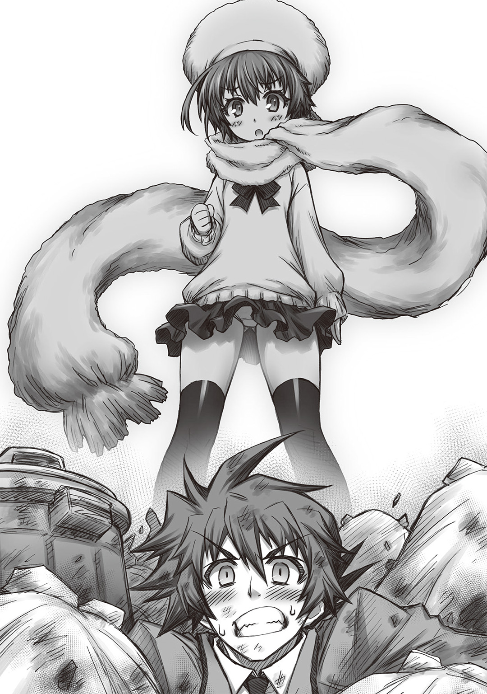
振り向くとそこには、マフラーを身に着けた、小柄な女の子がいた。
ぼくよりも頭ひとつぶんくらいは背の低い、見るからに年下の女の子だ。彼女はおっかなびっくりといった様子で、ゴミ山から顔を上げたぼくをじっと見つめている。
「ねえ、あなた......早池峰純平さん、だよね」
「ああ、うん。そうっすけど」
ぼくが頷くと、彼女は「よかった」と少しホッとしたように口元を緩めた。
くりん、とした大きな目が印象的な、ショートカットの女の子だ。興味深くこちらの身なりをしげしげ見つめているあたり、好奇心旺盛そうな印象を覚える。なんというかこう、ちょこまか動きそうな小動物タイプの子だった。
美少女のカテゴリに入ることは間違いない――のだが。
「あれ、キミ、どこかで前に会ったことあるような......？」
「あ、ううん。初対面。でも、純平さんのことはよく知ってるよ」
少女は、にっこりと目を細めた。
「え？ ぼくのことを知ってる？」
おかしい。ぼくの知り合いにこんな子がいただろうか。可愛い子なら、絶対忘れたりはしないはずなのに。いったい彼女は何者なのか。こんな路地裏で何をしているのか。
「ふむ」
ぼくは地に伏せた姿勢のまま、彼女をじっと観察することにした。
真っ白なベレー帽。赤いリボンのセーラー服。淡い色あいのセーター。首元までとっぷり巻いた、温かそうな白い毛糸のマフラー。
服装からすれば、背伸び手前の中学生という印象だ。
スカート丈はそこそこ短かめとはいえ、化粧をしている雰囲気もない。こういう垢抜けていない感じの女生徒は、このあたりでも珍しい部類に入るだろう。
「なるほど、下着は無地か......。うむ。色気はあんまりないけど、磨けば光るタイプって感じっすかね。これからの成長に期待大、と」
「へ、変なとこ覗かないでよ！」
ローアングルで覗きこむぼくから一歩後ずさり、彼女は慌ててスカートを押さえた。実に初心な反応で可愛らしい。
少女は困ったように眉根を寄せ、ため息をついた。
「まったく、噂どおりすぎてびっくりだよ。中学生にまでそんな目を向けるなんて。純平さんが年中えっちなことしか考えてないゲス野郎っていうの、本当のことだったんだ」
「ゲス野郎？ おかしいっすね。紳士たるぼくがそんな汚名を頂戴するはずないのに」
ともあれ相手が美少女ならば、礼を失するわけにもいかない。
ぼくは立ち上がって服についた埃をはらい、咳払いをした。
「こほん。まあとりあえず、こんな可愛い子に名前を知られてること自体は光栄っすよね。せっかくだから、メルアドとかＳＮＳのアカウントとかも知りたくないっすか？」
「べつにいらないよ。純平さんの連絡先なんか、警察に通報する以外に使い道ないし」
真顔で返されてしまった。なかなか失礼な子である。
こういう子に限ってルックスはけっこう可愛いのが、また残念でならない。その華奢な腰つきとか、細い指先とか、小指にくるくるマフラーの糸を巻く仕草とか、実にぼく好みで――。
「ん？ マフラーの糸？」
よく見れば、彼女のマフラーからは、一本だけ毛糸が垂れ下がっていた。縫製がほつれているのだろうか。彼女は、その垂れ下がった毛糸を小指にぐるぐると巻きつけているのだ。
そして驚いたことに、その毛糸はかなり長い。小指に巻きつけるだけでは足らず、手首のはるか下まで伸びており、地面の上で蛇のようにウネウネととぐろを巻いている。
「ねえキミ、なんか変じゃないっすか、そのマフラー」
「え？ これマフラーじゃないよ」
じゃあなんだというのか。
少し気になって、視線でその毛糸の先をたどってみることにする。
地面を這う白い毛糸をじっと追っていくと、さほど時間はかからずに終端が見えてきた。どうやら毛糸は、ぼくの足首のあたりまで伸びているようだ。
「あれ？」
というかこれ、毛糸じゃない。よく見れば、さっきからぼくの足首に巻きついている紐そのものではないか。そう。今ぼくの足首と彼女の右手小指は、マフラー（に見える何か）から伸びる紐のようなもので繫がっているということになる。それはつまり......。
「ちょ、ちょっと。ぼくをここまで引きずりこんだのって、もしかしてキミなの？」
「あ、うん。そうだよ」少女がくすり、と笑みを零した。「いきなり手荒な真似しちゃってごめんね。でも、そっちも下着覗いたからおあいこだよね」
「手荒な真似って――」
大の男ひとりを糸一本で軽々と引っ張るなんて、普通の女子中学生にできることではない。これはもう十分、人外のジャンルに属する現象だろう。
「キミ、もしかして妖魔さんすか？ もしくはその関係者とか？」
「まあ、そんなところ」少女がこくりと頷いた。「妖魔の力を借りたの。〝神降ろし〟って言えばわかるかな」
「え？〝神降ろし〟ってまさか」
マフラーの少女をじっと見つめる。
ようやくぼくはここで、既視感の理由に思い至った。この子は、ぼくのよく知るあのひとに似ている。華奢なのに、どこか芯が強そうなところなんてそっくりだ。
「たぶん純平さんの想像どおりだよ。名前は神凪茉子。なんとお姉ちゃんと同じ、神凪の巫女なのです」
「マ、マジで!? キミがトーコさんの妹!?」
少女はどこか得意げに、えっへん、と薄い胸を張った。
かねてからひと目会いたいと思っていたトーコさんの妹と、まさかこんな形で出会えるとは思わなかった。しかも、向こうからわざわざぼくを紐で引っぱりこんできたのだ。こんな人気のない暗がりに、である。これはひょっとすると、期待してもいいのかもしれない。
「えーと、妹さん」
「あ。マコでいいよ」
「マコちゃん。......いや、ビックリしたっすよ。まさか、キミのほうからこんな情熱的なアプローチをしてくれるとは思わなかったからね」
「え？ 情熱的なアプローチ？」
マフラーの少女――マコちゃんは、きょとん、とした表情で首を傾げた。
「とぼけなくていいんだ。アレでしょ？ 美少女巫女姉妹による恋の鞘当て。お姉ちゃんに先んじてぼくに王手をかけるために、わざわざこんな暗がりに誘いこんだわけだ」
「は？ ちょ、急に何言ってるのこのひと」
「いやあ、最近の女子中学生ってのはアダルトっすね、うん」
そう、ついに日々の妄想が現実のものになるときが来たのだ。
確かに、ぼくとトーコさんはすでにステディな関係（あるいは少なくともその一歩手前くらい）ではある。気持ち的には浮気なんてもっての外である。
とはいえ、だ。幼い彼女が、勇気を振り絞ってぼくにアプローチをしてくれたというのもまた事実。こんなあどけない美少女に悲しい思いをさせるなんて、ぼくの趣味じゃない。彼女の真摯な気持ちには、こちらも真摯に向き合わねばならないだろう。
「そう。ここまでされたらぼくも男だ。じゃあマコちゃん、一緒に大人の階段昇っちゃおうか。もちろんお姉ちゃんには内緒で」
ぼくは逸る気持ちを抑えきれず、彼女の肩に両手を置いた。そして瞳を閉じ、マコちゃんの柔らかそうな唇を味わうべく顔を近づけ――
「う、うわああヘンタイっ!? 何する気なの!?」
彼女は叫ぶなり、小指の糸を思いきり引っ張った。その途端、ぼくの足首に巻きつけられたままだった糸が、一気に彼女のほうへとゴムのように縮んでいく。
「うおっ!?」と叫んだときにはもう手遅れ。ぼくは再び、ポリバケツに頭を打ちつけることになってしまった。
「いつつ......」
「し、信じられないよ。初対面の女の子の唇を奪おうとするなんて」
わなわなと肩を震わせながら、彼女はぼくを見下ろしていた。
「え、だってそれはマコちゃんがぼくをここに誘いこんだからで」
「違うよ！ 純平さんにここに来てもらったのは、ちょっとひとに聞かれたら困る話をしたかったからなの！ それだけ！」
マコちゃんが頰をぷっくりと膨らませた。わりと本気で怒っているようだ。
やはり、美少女姉妹の恋の鞘当てなんて妄想にすぎないのだろうか。現実って世知辛い。
気を取り直し、ぼくは後ろ頭を搔きながら立ち上がった。
「はあ。んでその、ひとに聞かれたら困る話って何？」
「あ、うん。ちょっと頼みごと。純平さんにしか頼めないことなんだけど」
大きな瞳で、彼女はぼくを見つめた。
こんな可愛い子に「純平さんにしか頼めない」なんて言われたら、ちょっとドキッとしてしまう。ここでぼくが彼女の頼みとやらを華麗に達成すれば、妄想もまんざらではなくなるのでは――？
「ようがすようがす、この早池峰純平、マコちゃんの頼みならなんでも聞くっすよ？」
「じゃあ単刀直入に言うけど」
それは冗談などいっさい混ざる余地のない、真剣そのものといった表情だった。
とても真面目な顔で、彼女は冗談にしか聞こえないようなことを言い放ったのだ。
「お姉ちゃんの恋人を殺すの、手伝って」
「はー。これが喫茶店かあ。やっぱり都会にはこういうお店があるもんなんだねえ」
目の前に置かれたコーヒーカップを物珍しそうに眺めながら、神凪茉子――マコちゃんは「へえ」だの「ふう」だの感嘆のため息をついていた。
「べつに十六夜市は都会じゃないっすよ。むしろけっこうな田舎町だと思うけど」
「そうかなあ、すごい都会に見えるよ？ だってマコの住んでたとこなんて、ひとの数よりキツネやタヌキのほうが多いくらいの場所だったしね」
窓の外に広がる商店街の人通りを眺めながら、少女は感慨に耽っていた。もうだいぶ日も落ちており、アーケードを訪れる客足も少なくなってきているはずなのだが。
「夕さりの喫茶店で、優雅にコーヒーを嗜む......。うん。お洒落なシティーガール気分だ」
シュガースティックを三袋ほど投入し、マコちゃんがにっこりと微笑んだ。
こうしているぶんには、田舎から出てきたばかりのマイペースな女の子である。少なくとも、姉の恋人の殺害を目論んでいるようにはとうてい思えない。
――お姉ちゃんの恋人を殺すの、手伝って。
十数分ほど前、彼女は確かにそう言った。それはあらゆる意味で驚愕の依頼である。
だいたいそれじゃ、トーコさんには恋人がいると言っているようなものだ。まさか、ぼくの危惧は現実のものだったとでもいうのか。
ともあれぼくはもっと詳しい話を聞くべく、彼女を喫茶店へと誘うことにしたのである。そりゃまあ暗い路地裏でいたいけな女の子とふたりっきり、というシチュエーションも悪くはなかったのだが、一度手痛い反撃を受けてしまった以上は自重するべきだろう。〝神降ろし〟だというマフラーの能力もいまだ未知数だし、用心しておくにこしたことはない。
そういう諸々の考慮の末、ぼくは紳士の皮をかぶり、彼女を丁重にもてなすことに決めたわけである。もっともぼくの財力では、もてなしといってもせいぜい、一杯二百八十円のコーヒーを奢るくらいが関の山なのだが。
「しかし、喫茶店初体験ってのも珍しいっすよね。マコちゃん、キミいったいどんな秘境に住んでるの」
「うーん、秘境かどうかはわかんないけど」
店内の装飾を興味深げに見回しつつ、マコちゃんが微笑んだ。
「北国の山奥だよ。霊場としてはけっこう有名な場所かも」
「山奥の霊場？」
「そうそう。ふもとの駅から二時間くらい登ったとこかな。山の中腹にある、大きな神社に住んでるの」
「神社？ なんすかそれ。なんでそんなとこに」
「や、マコも住みたくて住んでるわけじゃないよ。神凪家は一応そういう家だから」
「あ。そういえば」
言われて思い出した。神凪の巫女であるトーコさんの妹なら、この子だってソッチ系の家系ということではないか。
マコちゃんが、苦笑まじりに口を開く。
「お店もないし電気も通ってないし学校も一山越えなきゃなんないしで、これがけっこう大変なんだよー」
「へえ。もうリアル秘境っすね。非文明的というか、仙人の隠れ里みたいな」
「でも困ったことに、神凪の家を継ぐためにはそういう厳しい環境で修行しなきゃなんないんだって。まったく、時代錯誤もいいところだよね」
彼女の話を聞くに、神凪の巫女の修行というのはかなりハードなものらしい。
自らの肉体をこの世ならざるものの器へと変えるためには、俗世との接触を可能な限り断たなければならないらしいのである。
「冗談なんかじゃないんだよ？ 洒落になんないくらい過酷な修行なの」
「例えばどんな？」
「暗い洞窟の奥で一か月間ひたすら祝詞を唱え続けさせられたり、マッチョな僧兵さんたちと百人組手をさせられたり、山奥に棲んでる恐ろしげな虎を、お札一枚で調伏しに行かされたり......」
「うわあ。ぼくなら三日で逃げだすわ、それ......」
聞いているだけで背筋が凍りそうな修行である。いまどき少年漫画でもそんな修行シーンはお目にかかれない。〝神降ろし〟なんて超人的な能力を得るためには、相応の努力が必要だったというわけだ。
「そんな修行を十年くらいして、はじめて一人前の神凪の巫女になれるんだって」
「なるほど、十年も......。トーコさんも、そういう厳しい修行の果てにあのコスプレを会得したわけか......。うん。そう考えると、あの絶対領域に対しては、これからはもっと敬いの気持ちをもって接するべきかもしれないな」
「や、それならいっそ接しないでくれたほうがお姉ちゃんのためだよね」
マコちゃんがため息まじりにぼくを睨みつけた。
まだ顔を合わせてから三十分と経っていないはずなのに、なんだかやたらと警戒されてしまっているような気がする。年頃の女子中学生というのは難しいものだ。
「で、修行中ってことは、やっぱキミもコスプレしちゃうんすか？」
「ううん。マコはまだ修行中だから、本格的な〝神降ろし〟はできないよ」
「なんだそっか......。マコちゃんのコスプレも楽しみだったんすけどね。トーコさんとはまた違って、キミはキミで一種犯罪チックな魅力に溢れてるから」
中学生ということもあって、さすがに彼女の身体はまだまだ凹凸が少ない。ほっぺはぷにぷにだし、胸も膨らみかけ。太ももにだって、直接的なエロスはあまり感じない。
だが、そこがいいのだ。
今の彼女はいわば、カッティング前の原石である。少女が大人へと変わる萌芽を感じさせるような、そんな無限の可能性に満ちあふれているのだ。こんな子がちょっと背伸びでもして、そのあどけない身体にトーコさんばりのエロエロなコスチュームを纏ったら、いったいどうなってしまうんだろう――。
ぼくは対面の彼女に熱視線を送りながら、妄想に身を震わせていた。
「犯罪チックなのはマコじゃなくて、純平さんの頭の中だよ！」
「え、そ、そんなことないっすよ!? 膨らみかけも悪くないなあとか思ってないっすよ!?」
「はあ、やっぱりさっき、女郎蜘蛛ちゃんの糸でもっと痛めつけておけばよかった」
マコちゃんが、自らの右手に目を落とした。小指に巻かれているのは、先ほどぼくを捕まえた、例の白いマフラーの糸である。
「女郎蜘蛛ちゃん？」
「あ、うん。マコが〝神降ろし〟してる子のこと」
少女の指先で、糸の一端がくねくねと躍るような動きを見せた。まるで手品のパフォーマンスのようで、ぼくは「へえ」と目を見開いた。
「そういや〝神降ろし〟って言ってたっすね。だいぶトーコさんのと印象違うけど」
「〝神降ろし〟っていっても略式なんだ。妖魔の力をぜんぶ降ろすんじゃなくて、力の一部分だけを借り受けるの」
「一部分だけ？ んなことできるんすか」
「あ、えーと、『一部分だけできる』というよりは、『一部分しかできない』って言ったほうが正しいかな」
マコちゃんが、ばつが悪そうに頰をかいた。
「身体ぜんぶに妖魔を憑依させて、フルに妖力を活用するのが本来の〝神降ろし〟。これは知ってるよね。お姉ちゃんがやってるヤツ」
「うん。あのコスプレには毎晩お世話になってるっすよ。いろんな意味で」
彼女は一瞬怪訝な顔を浮かべたが、そのままぼくを無視して話を続けた。
「でも、修行中のマコが妖魔を降ろせるのは、まだ右手だけなの。この女郎蜘蛛ちゃんの力も半分くらいしか引き出せてないんだよね。それが略式の限界」
「なるほどねえ。〝神降ろし〟の劣化簡略版ってことっすか」
こくりと頷きながら、彼女は糸の一端を操ってティースプーンを摘みあげた。そのままスプーンをカップの中に入れ、あざやかにコーヒーをかき混ぜてみせる。
「おお、すげえ......!?」
糸をここまで自由自在に操るなんて、正直びっくりだ。力の半分しか引き出せないとは言うが、実に器用なものである。
「あれ、そう言えばその糸、こんなに細かったっけ」
スプーンをつかむ白い糸を見ながら、ぼくは首を傾げた。
先ほどぼくの足を引きずったときには、登山用のザイルくらい太かったような気がする。だが、今ではなぜか毛糸程度の太さにしか見えない。長さだって、せいぜい数センチがいいところだ。
「太さも長さも、ある程度は自由に変えられるよ。元は蜘蛛の糸だから、これでも太くしてるくらいなんだ」
「蜘蛛の糸......。そういえばさっき、女郎蜘蛛がどうのって言ってたっすね」
「あ。もしかして見たい？」
少女は笑みを浮かべ、脇に置いた手提げのスクールバッグをごそごそと探し始めた。
「じゃーん。この子がマコのフェイバリット妖魔でーす」
マコちゃんが取り出したのは透明なガラス瓶だった。ウイスキーか何かの空き瓶のような、片手サイズの小さな瓶だ。その中にいたのは、見たこともない奇妙な生物だった。
「うげえっ......」
見るもおぞましい八本足の蜘蛛が、ガラス面を這いずり回っている。
だいたい大きさはテニスボールくらいだろうか。しかもそれは、頭部だけが人間の女性という、醜悪な人面蜘蛛であった。
「妖魔の女郎蜘蛛ちゃんだよ。可愛いよね」
ガラス瓶に頰ずりしながら、マコちゃんがにこりと微笑んだ。
しかしもちろん、ぼくにはその瓶の中の生き物が可愛いとはとうてい思えなかった。だって、ねえ？ さすがに人面蜘蛛だし。
「この子とは小さい頃から仲良しなの。とっても美人さんでしょ？」
確かにこの女郎蜘蛛とやら、顔だけ見れば綺麗な女の子である。アイドル雑誌に載っていてもおかしくはないくらいのルックスだろう。リボンなんかでおめかししているところもまた心憎い。
だが、下手に美人だからこそ、首から下のギャップが気色悪いのだ。毛に覆われた八本の節足で、瓶の内側をカサカサ動き回るアイドル顔――。ぼくもこれまで、仕事柄いろんな妖魔を見てきたつもりだったが、こいつは屈指の気色悪さである。
驚いたのはそれだけではない。ぼくが戦々恐々としながらガラス瓶を見つめていると、こともあろうに彼女（？）はこちらにニコリと微笑みを返してきたのである。
「ひいっ!?」
「あ、よかったね純平さん。女郎蜘蛛ちゃんに気にいられたみたいだよ。足の綺麗な女の子はスキでしょ？」
「いや、さすがに太ももは八つもいらないかな......」
いくらぼくが美少女に目がないとはいっても、首から下が蜘蛛の子はノーサンキューだ。
こんな蜘蛛を可愛いと言ってのけるなんて、マコちゃんの美的感覚には恐れいる。
この子、人里離れた山育ちのせいでいろいろと世間ずれが激しいのかもしれない。ぼくたちのテーブルの横を通りがかったウェイトレスさんも、「ひっ」と短く悲鳴をあげて、運んでいた水をグラスごと床にぶちまけてしまったくらいだし。女の子としては、こちらのほうが普通の反応だろう。
「つーかまさか、そのマフラーって全部この蜘蛛の糸なの？」
「そうそう。丈夫で温かいの。女郎蜘蛛ちゃんは可愛いだけじゃなくて、すごく役に立つんだよ」
小指に巻かれた白い糸を示しながら、彼女は言った。
「略式の〝神降ろし〟っていっても、糸は最大十キロ先くらいまでなら伸ばせるし、それなりに大きなものだって絡めとることができちゃうんだ」
「ああ、さっきはぼくを思いっきり引きずってたしね」
「人間ひとりぶんくらいなら余裕だよ。......そうだねえ、三、四人くらいまでならまとめて持ち上げられちゃうかなあ」
「そりゃすごい。まるでアメコミヒーローっすねえ」
マコちゃんはこくりと頷くと、ガラス瓶を大切そうにバッグに戻した。
「こうやって瓶を持ち歩かなきゃならないのが、少し大変なんだけどね」
いかに神凪の巫女といえど、そばに妖魔がいなければ〝神降ろし〟をすることはできない。自由自在に妖魔を召喚できるなんて十六夜支社の妖魔王さまくらいのものなのである。
そういうわけでマコちゃんは、いつでもどこでも困ったときに〝神降ろし〟ができるように、こうして妖魔を瓶詰で連れ歩いているらしい。
巫女の世界もモバイル時代ということか。
「でもさ、マコちゃん」コーヒーに口をつけ、ぼくは彼女に尋ねた。「なんでキミ、わざわざそんな大変な巫女の修行なんかしてるんすか？ 中学生なんていったら、普通遊びたい盛りじゃない」
「まったく、ほんとにそのとおりだよね」
どん、とマコちゃんがテーブルを叩いた。よくぞ聞いてくれました、と言わんばかりの表情である。
「それもこれも、ぜんぶお姉ちゃんのせいなんだよ」
「トーコさんの？」
「そう。マコがとくにやりたくもない巫女の修行をさせられてるのも、十六夜市くんだりまで来なきゃなんなかったのも、二年前、お姉ちゃんがフラっと家を出ていっちゃったせいなの。ぜんぶお姉ちゃんが悪いんだよ」
「フラっと家出？ あのトーコさんが？」
「そう。あれはお姉ちゃんが修行を終えた日だったかな？ お姉ちゃんたら、いきなり『魔滅社に入る』とか言いはじめちゃって。もう家中びっくりだったよね、あのときは」
苛立ちまじりなのか、マコちゃんがコーヒーを一気にあおった。
どうやら彼女が巫女の修行をしているのは、家出した姉に代わって神凪の家督を継ぐためらしい。いわば、トーコさんの身代わりというわけだ。
「もちろんマコだって、すぐにでもお姉ちゃんを捜しに行きたかったんだよ。捕まえて、問いつめようと思ったの。......あの優しくて、かっこよくて、大好きなお姉ちゃんが、妹に面倒事をぜんぶ押しつけて逃げるなんて、いくらなんでもおかしいと思ったから」
マコちゃんが、眉間に皺を寄せながら首を振った。
「でも、おばあさまやら他の修験者の目が厳しくて修行場から抜け出せなかったんだ。『お前が神凪を継ぐのです』とかって。結局この二年間、軟禁状態だったんだよ」
「なんすか、そりゃ......」
まさかトーコさんが家出少女だったとは。マコちゃんの語る突拍子もない話に、ぼくは驚きを隠せなかった。
「つーか、あの真面目を絵に描いたような先輩が、なんでそんなアグレッシブな真似を」
「それはたぶん、神凪家の戒律のせいかな。神凪の巫女が魔滅社に入社するなんて、家出でもしない限りぜったいムリだから」
「戒律？ どういうことっすか」
「〝神降ろし〟は、門外不出の神聖なものなの。もともと神前の儀式用の奥義だし、妖魔退治みたいな野蛮なことに使うのはご法度なんだって」
まあ、マコも隠れて好き勝手に使ってるから、大きなことは言えないんだけど――と彼女は苦笑した。
「戒律を破ることになるのは承知のうえで、トーコさんは魔滅社に入ったってことか......。トーコさんがそこまでして魔滅社に入りたかった理由って、いったい何なんすかね」
「そんなの決まってるじゃん」
奥歯をぎりりと嚙みしめながら、マコちゃんが呟いた。
「恋人のためだよ。お姉ちゃんは、男を追っかけて魔滅社に入ったんだ」
「お、男を追っかけて!?」
お姉ちゃんの恋人を殺すの、手伝って――確かにマコちゃんは先ほどそう言った。
だが、あのトーコさんが恋人を追いかけるために全てを捨てるだなんて、ぼくにはまるで想像できない。想像したくもない。
「なんすかそのメロドラマ。恋愛脳バリバリの女子ならともかく、あの冷静沈着が服を着て歩いてるようなトーコさんが、まさか恋の逃避行だなんて......」
「マコだって信じられなかったけどさ。そういう書置きがあった以上は認めざるをえないよ。お姉ちゃんも、あれで恋する乙女だったってことなのかなあ......」
深いため息をついて、マコちゃんが目を伏せた。
ため息をつきたいのはむしろこっちのほうである。トーコさんが恋する乙女......ふだんなら鼻で笑い飛ばすところだったが、今のぼくには思い当たることがないわけではない。
そう、昨日のあのおかしな態度だ。もしかしてあれは、恋煩いだったのではないだろうか。トーコさんがやたらとぼくに冷たかったのも、例の〝あのひと〟のことで頭がいっぱいだったせいなのかもしれない。
「た、確かに、そう考えればいろいろ辻褄は合っちゃうっすけど......」
あの愛すべき先輩に惚れた男がいるだなんて、そんなひどい話があるだろうか。
これはもう、ショックという言葉ですら生ぬるい。まるで目の前の全てが、音を立てて崩れていくようだ。トーコさんに、あのトーコさんに、彼氏がいただなんて......!?
テーブルにがくりと突っ伏したぼくの耳に、マコちゃんの声が聞こえてくる。
「あの、じゅ、純平さん？ 大丈夫？ 気持ちはわかるけど――」
「そんなバカな......！ 素直じゃないトーコさんのことだから、なんだかんだ言って心の底ではぼくに好意を抱いているはずだと思っていたのに。いつかはきっとデレを見せてくれると思っていたのに......」
ぼくの言葉に、マコちゃんが「え？」と首を傾げた。
「あはは......いや、さすがにそれはないよね。お姉ちゃんもひとの子だよ？ 純平さんみたいな、見るからにどうしようもないヘタレに惚れるかなあ？ そんなの、天地がひっくり返ってもありえないと思うけど」
死者に鞭打つような厳しい一言だった。あれか。神凪の巫女という連中は、毒舌が標準装備だとでもいうのか。
「さっきから思ってたけど、キミ、初対面のくせにときどき辛辣すぎるっすよね」
「あ、うん。ゴメン。でも、純平さんの噂はよく聞いてたからさ、初対面って気が全然しなくって」
「噂？ いったい誰が」
「お姉ちゃんの情報を得るために、ここに来るまで十六夜支社の噂を色々集めてたんだけどさ。純平さんはかなりの有名人だったよ。『魔滅社の恥部』『ゲス・オブ・ゲス』『手錠をつけたい男ナンバーワン』......変な二つ名がいろいろあるんだねえ」
ぼくの知らないうちに、とんでもない悪名が広がっているようだった。
実に誤解も甚だしい。ただの見習いバイトにすぎないぼくが、どうしてここまでひどい風評に晒されなければならないのか。
心当たりなんて全然......いやまあ、少しくらいしかないのに。
「いやあ、情報化社会って怖いっすねえ......」
「まあまあ、あんまり気を落とさないでよ。純平さんがそういうひとだってわかったからこそ、マコも声をかけたわけだし」
「え、どういうこと？」
小指の糸でシュガースティックを引き寄せながら、少女は意味ありげに微笑する。
「マコの目的は、お姉ちゃんの恋人を殺すこと。そんな大それた目的のためには、やっぱり協力者が必要じゃない？」
「協力者として、ぼくが適任だと？」
「そう。神凪瞳子に劣情を抱きつつも、いっさい相手にされないダメ男――そういうひとなら、お姉ちゃんの恋人の抹殺に力を貸してくれると思ったんだよね」
けろりとした表情で、マコちゃんが言い放った。
抹殺とは穏やかではない話だが、まあ確かにトーコさんに恋人がいるという話を聞いて、内心気が気でないのも事実だ。これは可及的速やかに、事実を確認する必要がある。
「トーコさん、〝あのひと〟とやらに会えるのずいぶん楽しみにしてたみたいっすからね。くそう、いったいどこまでの仲なんだ......？」
「最悪の事態を想定しておくべきかもね」マコちゃんが眉根を寄せた。「もう家を出てから丸二年になるし。そろそろ相手の男との結婚とか考えてもおかしくない時期なのかも」
「け、結婚!?」
驚きのあまり、テーブルの上のコーヒーカップを倒してしまう。
トーコさんは現在十八歳。高校卒業まであと数か月だ。
ぼくとしては、卒業後も彼女はこのまま魔滅社に居続けてくれるとばかり思っていたのだが、それは甘い考えだったのかもしれない。トーコさんだって女の子だ。結婚して寿退社を考えている可能性もなくはない。
「結婚......あの、トーコさんが......」
結婚。それはつまり彼女が完膚なきまでに他の男のモノになってしまうということだ。
ウエディングドレスを着たトーコさんが、ぼくの知らない〝あのひと〟とキスを交わし、生涯を誓い合う。そしてめでたく夫婦となったふたりは、初夜のベッドの中で――。
「あのぷるんとした唇が、形のいい乳房が、柔らかな太ももが、知らない男に思うさま蹂躙されてしまうだと......!? さ、最悪だ！ それだけは嫌だ！」
「な、なに変なこと言ってるの純平さん！ そんなのマコだってイヤだよ！」
顔を赤らめながら、マコちゃんが首を振った。
「ね、ねえマコちゃん、結局どこのどいつなんすか!? その、トーコさんを独り占めしようっていうふとどきな野郎は!?」
「ううん、知らない。むしろ純平さんこそ心当たりはないの？」
マコちゃんは困ったような表情で肩を落としていた。この子もまだ、相手の情報まではたどりついてはいないようだ。
「トーコさんの書置きだと、魔滅社に恋人がいるってことなんすよね......。つーと、他の支社の連中か？」
そもそも十六夜支社には、基本的にぼくしか男性はいない。
恋人がいるとすれば他の支社の社員くらいなものだが、ぼくが知る限りトーコさんと深い関係がありそうな社員はいないはずである。だいたいトーコさん、わりと誰に対してもあのクールな態度なのだ。他の支社に友達以上の関係の人間がいるかどうかすら怪しい。
「ダメだ、全然わからん......」
「同僚の純平さんにすら全然バレてないってことは、よっぽど秘密めいた交際をしてるってことだよね。もしかして、今頃ちょうどその男と会ってたりとか」
「え。いやいや、まさかそんな」
と、ぼくが笑みを強張らせたそのとき。
テーブルの端に置いておいたスマホが、着信を知らせるバイブ音を鳴らした。ディスプレイに表示されている着信番号は、おなじみ『十六夜支社オフィス』だ。
なぜか胸騒ぎを覚えつつ、ぼくは電話を耳に当てる。
『おいジュンペー、今お前どこにいる』
通話口から聞こえてきたのは、甲高い幼女の声だった。
「あ、玉藻ちゃんすか」
慌てて喫茶店の壁時計を確認すると、時刻はもう十八時を過ぎていた。気づけばバイトの始業予定時間を、もう三十分以上もオーバーしている。完全に遅刻だった。
「す、すいません。予期せぬトラブルに巻きこまれちゃって。そっち行くのちょっと遅れそうなんすけど......」
一応頭を下げてはみたものの、玉藻ちゃんに言い訳など通じないことは知っている。あの鬼畜支社長ときたら、従業員を時間いっぱいこき使うことしか考えていないのだ。無断遅刻など絶対に許しはしないだろう。
こりゃあさぞかしネチネチ文句を言われるだろうと、ぼくは電話口で身構えたのだが、
『うむ。そうか』
意外なことに、玉藻ちゃんの声に怒りの色は見られなかった。
「え、お咎めなしっすか？」
『ちょうどいい。お前、今日はこのままバイト来るな』
「は？」
『いや。今日は、じゃないな。しばらく来なくていいぞ、うん』
「えっ？ どうしてっすか？ ぼく、今日はどうしてもそっちに行ってトーコさんに確かめたいことがあるんですけど」
『ダメだ。来るんじゃない。詳しい理由は言えんが、これは支社長命令だ』
何かがおかしい。「休んでいいのは死んだときだけ」「這いつくばってでも勤労しろ」が口癖みたいな玉藻ちゃんが、今日に限って「職場に来るな」とは。
ぼくは電話口に向かって声を荒らげた。
「ちょ、支社長命令とか言われても、そんなの納得できないっすよ！ こちとら、今すぐそっちに行かなきゃならない事情があるんです！」
『うるさい黙れ口答えするな！ 今月の給料減額されたいのか！』
いつも理不尽な玉藻ちゃんだが、今日の彼女はなぜか輪をかけて理不尽である。
「ったくこのババア――」
せめて理由を問いただしてやろうと、ぼくが口を開きかけたそのときだった。スマホの向こうから、聞き覚えのある少女の声が漏れ聞こえてきたのである。
――あの、どうですか、このクッキー。お口に合えばいいのですが。
――うん、美味しいよ。ずいぶん腕を上げたね。紅茶の淹れ方もだいぶ上達したようだ。
――ありがとうございます。そう言ってもらえると、練習した甲斐がありましたよ。
――ははは。トーコはもう、いつでも素敵なお嫁さんになれそうだね。
――や、やめてくださいよ、そんな。恥ずかしい......。
「......は？」
声の主は一組の男女だった。
男のほうは張りのある精悍なバリトンボイス。
もう片方は、どこか恥ずかしげな、恋する乙女の声色である。
ぼくの知らない誰かと、ぼくの知っている誰かが、ラブコメのワンシーンのごときスイーツな会話を繰り広げていたのであった。なにこの甘々トーク。
「あ、あの、玉藻ちゃん。今の声まさか、トーコさんじゃないっすよねえ？ トーコさんは、あんな少女マンガみたいな台詞絶対言わないっすよねえ!?」
『......そ、そうだな』
なぜか玉藻ちゃんが言いよどんでいる。これは怪しい。まるで何か、ぼくに知られたくないことがあるかのようであった。
「誰が来てるんすか？ 今オフィスに誰が来てるんすか!?」
『い、いやいや。誰も来てはおらんぞ。ジュンペーお前、幻聴でも聞こえているのではないか？』
「なにが幻聴っすか!? はっきりくっきり、トーコさんと誰か知らない男の声が聞こえましたよ!?」
『あー、あー。そうだな、お前、働きづめで体調でも崩しているんだろう。しばらく休んでいたほうがいいな。うん。......では切るぞ』
「はあ!? ちょっと玉藻ちゃん!? まさか今の男、トーコさんの彼氏ってんじゃ――」
そう叫んだところで「ブツン」と通話が途切れる音がした。
玉藻ちゃんが受話器を置いたのだろう。電話口から聞こえてくるのは、通話終了を示す無機質な信号音だけだった。
「ちょ、え......今のってまさか」
あの意味深な会話はなんだったのか。あれではまるで、トーコさんが意中の男に手作りクッキーを振舞っていたようではないか。トーコさんがぼくに振舞ってくれるものなんて、せいぜい毒舌ツッコミくらいだというのに。
「じゅ、純平さん、今の電話って......」
スマホを片手に放心していたぼくは、マコちゃんの声で我に返った。
「もしかしてお姉ちゃん、いま恋人と一緒にいるってこと？ 人目もはばからずラブラブ中ってこと!?」
「そ、そうかも、しれない」
ぼくとトーコさんの思い出が詰まったあの魔滅社オフィスで、彼女が知らない男相手に笑顔を浮かべている......。それは、考えられうる限り最悪の事態だった。
「純平さん。このままでいいの？」
マコちゃんが、真剣な表情でぼくを見上げた。
――そうだ。このまま手をこまねいているだけじゃ、ダメに決まっている......！
全身の血が煮えたぎり、かつてない怒りに体が震える。
彼女の唇を、彼女のお尻を、彼女の絶対領域を――あの美貌のコスプレ美少女のすべてを、どこの馬の骨ともわからぬ野郎に渡していいものか。
燃えるような情動に突き動かされるまま、ぼくは席を立ち上がった。
「トーコさんの恋人だなんて、ぼくは認めない！ あのコスプレはぼくのもんだ！ 恋人だろうがなんだろうが、ぶっとばしてやる！」
マコちゃんが「おお！」と色めき立った。彼女もまた、志はぼくと同じ――少なくとも「トーコさんの恋人を排除する」という点では、利害が一致しているのである。
「純平さんなら、きっとそう言ってくれると思ってたよ！」
マコちゃんは立ち上がると、ぼくの手をぎゅっと握った。
小さく華奢な指先だが、その手のひらにこめられた熱は、決してぼくに劣ることはない。
「行こう、マコちゃん！ トーコさんを魔の手から救うために！」
これが後の世に語られる『トーコさんの恋人ぶっとばしちゃうぞ同盟』――ぼくとマコちゃんの間に、鉄より硬く血よりも濃い絆が結ばれた瞬間であった。
喫茶店を出てから数分後、ぼくとマコちゃんは十六夜支社オフィスに到着した。
正確には、事務所が入ったビル裏手の通用口の前である。「来るな」と念を入れられてしまった以上、さすがに表からは入れない。なのでこうして裏口を使うしかないわけだ。
「まずは敵情視察だね、純平さん」
「うん。足音は立てちゃダメっすよ」
通用口のドアをそっと押しあけながら、後ろのマコちゃんに小声で指示する。気分は軽くスニーキングミッションだ。
あちこち痛んだビルの内装をきょろきょろ見回しながら、マコちゃんが口を開いた。
「うわあ、ボロい......」
一階の店舗エリアや二階のオフィスの中はきれいにしているので気づきにくいが、築数十年のこの雑居ビル共用部分は、彼女の言うとおり老朽化が著しい。
さらに廊下の蛍光灯はチカチカ点滅しているし、壁の汚れも目立っている。踊り場の防犯ポスターで色褪せた笑みを浮かべているのは、ぼくが知らない一昔前のアイドルだ。
窓の外では、もう日がだいぶ沈んでしまっている。逢魔が刻というのか、人気のないビルの中は独特の不気味な雰囲気に溢れているようだった。
「本当にここが十六夜支社なの？ むしろなんか出そうな雰囲気だなあ」
「実際ドケチ妖魔が一匹出るけどね。賃貸料を渋ったあげく、こんな一昔前のオンボロビルにしか事務所を構えられないような、極貧妖魔王さまが」
当の玉藻ちゃんたちに気取られないよう、ぼくたちは抜き足差し足で内階段を上がる。ステップがギイギイと音を立てていたが、とりあえず気にするほどではないだろう。
後ろのマコちゃんがぼくの袖をくいっと引っぱり、「ねえ」と小声で囁いた。
「偵察とはいえ、殺れるチャンスがあれば殺っちゃう――そういうことでいいよね」
「えーと、そのことだけどさ」ぼくは振り向き、マコちゃんを見下ろした。「その恋人とやらの始末は、とりあえずぼくに任せてくれないっすかね？ 単に命を奪うだけより、もっと効果的な方法を思いついたんだ」
「効果的な方法？」
「うん。どこの馬の骨かわからないけど、トーコさんに手を出すなんて不届き千万。このぼくの手で、死よりも重い生き恥を晒させてやるんすよ」
くっくっく、と黒い笑みを浮かべるぼくを、マコちゃんが呆れた様子で見つめていた。あれは、こちらをどうしようもないゲス野郎だと認識している顔である。
「はあ......何考えてるか知らないけど、純平さんがそう言うなら今日のところは任せるよ」
顔をしかめるマコちゃんを連れて二階廊下へ。応接室の前にたどり着いたぼくたちは、慎重に扉の前に腰を下ろした。
「さて、なんとかここまで潜入することはできたっすね」
木製ドアの向こうに耳をそばだてながら、応接室内部の会話を探る。
「純平さん、なにか聞こえる？」
「うん、話し声が......。やっぱり、応接室に誰か来てるみたい」
扉の向こうから聞こえてくるのは、トーコさんに玉藻ちゃん、それから若い男の声だ。
やはりこの扉の向こうに、ぼくたちの倒すべき敵がいるということか。
「様子を見てみよう」
マコちゃんがおそるおそるノブに手をかけ、少しだけ扉を開いた。
その瞬間、ぼくははっと息を吞む。ドアの隙間から目に入ったのは、ぼくの知らない表情で微笑む憧れの先輩――見知らぬ男性と楽しげに会話をする、トーコさんの姿だった。
「それで、伯道さんはいつまで十六夜市に滞在なさる予定なんです？」
テーブルの上に、紅茶のカップを置きながら、トーコさんが口を開いた。
上品なストレートの黒髪に、校則を逸脱しないシンプルな縁なし眼鏡。下校時のブレザー姿で、彼女はいつものようにゆったりとソファーに腰を下ろしている。
彼女の向かい側、ふだんぼくが座る場所に腰を下ろしているのは、背の高い精悍な青年だった。
「そうだね。今回は少し調査をしに来ただけだから、長くても二週間くらいかな」
「そうですか......思ったより短いんですね」
「そんなにがっかりしないでくれよ、トーコ。妖魔とのトラブルは、なにも十六夜市だけで起こっているわけじゃないんだからね」
青年はちょっとだけ肩をすくめ、にこやかに微笑んでみせた。
年はたぶん、二十代の半ばくらい。長めの髪を後ろで引っつめに結んだ、優男ふうの男性である。
黒のジャケットに同じく黒色の細身パンツ、インナーは無地のカッターシャツ。
ワンポイントの勾玉のような変わったチョーカーをのぞけば、全身黒一色といった出で立ちであった。それでも野暮ったく見えないのは、全体から感じられる爽やかな印象のせいだろう。
これはこれで、メンズファッション紙の表紙を飾ってもおかしくないくらいの統一感あるコーディネイトである。
これが〝あのひと〟なのか。
「ぼくたちみたいな本社役員は、ひとところに腰を落ち着けているわけにもいかないんだ。もっとも、君の手作りお菓子は名残惜しいけれどね」
言いながら、男はクッキーをひとつ口に運んだ。
身長はかなり高め。百八十後半くらいだろうか。マッチョというほどではないが、それなりに肩幅も広い。服の上からでも鍛えていることが窺える身体つきであった。
そしてなにより、かなりのイケメンである。ぶっちゃけ女の子にモテそう。ぼくの大嫌いなタイプの男であることは、もちろん言うまでもない。
トーコさんが、ため息まじりに口を開いた。
「そう......ですよね。伯道さんほどの使い手なら、他の支社から引っ張りだこなのも当然です」
「引っぱりだこだなんてとんでもない。便利屋扱いされているだけさ」
青年が白い歯を見せて笑う。
「ともあれ短い間だが、ここにいる間は十六夜支社のお手伝いをさせてもらうつもりだよ。しばらく厄介になる礼も兼ねてね」
「い、いえ。お礼だなんてとんでもない。伯道さんなら、いてくださるだけで大助かりです」
青年に向け、トーコさんが柔らかく微笑んだ。
よほどこの伯道という男を信頼しているのだろうか。彼女の瞳はどこか熱っぽく、年相応の少女めいた優しさを帯びている。
あのトーコさんがこんな表情をするなんて、にわかには信じられない。認めたくはないが、やはり彼女の想い人は、この伯道とかいう黒ずくめの男なのだろう――。ぼくは奥歯を嚙みしめながら、そのスカしたイケメンを睨みつけてやることにした。
支社長デスクの上に座った玉藻ちゃんが、腕組みしつつ口を開く。
「むう。しかし二週間だけとは残念だな。魔滅社最強とも言われるお前がいれば、うちの業務もずいぶん楽になるだろうに」
「あはは。魔滅社最強は誉めすぎですよ、玉藻さん。俺くらいの社員なんか本社にはゴロゴロいます」
「いやいや。謙遜するな。京都での武勇伝は聞いておるぞ。......なんでも、Ａクラスを五体相手にしながら、単独で業務を達成したというではないか。しかも無傷で」
「ああ、あれは運が良かっただけです。京都は地の利もありましたしね」
男は、少し照れたような表情でテーブルのクッキーに手を伸ばした。
討滅危険度Ａクラスといえば、邪神や魔神の異名を持つような、恐るべき妖力を有する妖魔のカテゴライズである。魔滅業務においても、それなりの経験者たちがチームで対処に当たるのが普通なのだ。単独で立ち向かうなんて、正気の沙汰ではない。
にもかかわらずこの伯道という男は、ひとりでＡクラス五体を相手にして、しかも傷ひとつ負わずに倒してのけたというのだ。それが本当なら、とんでもない化け物である。
そりゃ、あのトーコさんでさえ尊敬の眼差しを向けるというものだ。
「さすがは伯道さん......。お見逸れしました」
「そういうトーコだって、ずいぶんできるようになったらしいじゃないか。十六夜支社の業務処理件数、ここのところ順調に右肩上がりのようだしね」
「あ。いえ、それほどでは」
「欲を言えば、請求書の枚数は減らしてくれると助かるけれど」
伯道の言葉に、玉藻ちゃんが「何のことだろうな」と視線を逸らした。
話を聞く限り、どうやらこの伯道とやらは本社のエリート社員様らしい。
一流企業としてそれなりに名の通っている魔滅社だが、その本社の社員ともなれば、エリート中のエリートだ。ちょっとやそっとの志望者じゃ、採用されない狭き門だと聞く。
当然、かなりの高給取りでもある。毎年外車を買い換えるのは当たり前、高原に別荘をいくつも有し、銀座のクラブで毎晩豪遊できちゃうほどのバブリーな存在――それが本社社員の実体らしい（と、玉藻ちゃんが以前に愚痴っていた）。
少なくとも、薄給でこき使われるぼくなんかより、ずっと金持ちだということだ。顔だけではなく、経済力という意味でも勝ち目はないだろう。
部屋の中では、トーコさんが「わたしなどまだまだです」と首を振っていた。
「伯道さんには遠く及びませんよ。もっともっと、あなたから学びたいことはたくさんありますから」
「いつも真面目だね、トーコは。......まあ、そういうところが可愛いんだけど」
「も、もう、伯道さん。からかわないでくださいよ」
まんざらでもなさそうな表情で、トーコさんが頰を染めた。
「ふむ。こういうトーコも新鮮だな。......どうだ伯道、本気で十六夜支社に骨を埋める気はないか？ なんなら、うちの役立たずとトレードしてもいい」
「いえ、支社長。あんな不道徳野郎を本社に送ったら、さすがにご迷惑でしょう」
隙間の向こうでは、伯道とかいう新参者のイケメンが持ち上げられる一方、早池峰純平が徹底的にこき下ろされていた。
まるでこの扉の向こう側が、ぼくの知らない世界になってしまったようである。いったいなぜ、こんなことになってしまったのか。
「......な、なんだこれ」
我が物顔でソファーに座るイケメンを睨みつけ、ぼくはわなわなと拳を震わせていた。
トーコさんも玉藻ちゃんも、ずいぶんとあの男を信頼しているようだ。早池峰純平に対する扱いとは、まさに天と地の差である。
「いったいあの男とぼくとで、何が違うってんですか......！」
隣でマコちゃんが、うんうんと頷きながら口を開いた。
「え、そりゃ見たままじゃない？ あの伯道って男、ルックスもカッコイイし、物腰も柔らかだし、おまけにお金持ってそうだし。ぶっちゃけ純平さんの完敗だよね」
「いやキミね。どっちの味方なの」
「そりゃあの男は倒すべき敵だけど......。でも、勝ち目あるのかなあ。いろんな意味で」
「っていうと」
「見た目だけは確かに優男っていうのかな。なまっちょろい感じはするけど。......でもあいつ、たぶん相当できるよ。もしかしてお姉ちゃんより強いかも。女郎蜘蛛ちゃんも、瓶の中で震えてるもん」
手にしたスクールバッグに目を落としながら、彼女は呟いた。
ぼくだってこれでも、それなりの修羅場を潜り抜けてきた見習いバイトなのだ。相手が歯向かっていいレベルなのかどうか、そのくらいの判断はできる。
「確かにありゃ、只者じゃないっすね」
あの男、ただ吞気に座っているだけなのに、まるで隙がないのだ。
にこやかに笑いながら、両の瞳で絶えず周囲を窺っているような――そんな達人めいた雰囲気を漂わせている。
近づけば、それだけで捻りつぶされてもおかしくはないかもしれない。威圧感だけなら、例の酒吞童子の娘と比べても遜色ないくらいだ。
「うん、あれには勝てない。絶対ムリ。本能が全力で逃げろって叫んでる感じっすね」
「確かにそうかもしんないけどさ......。でも純平さん、よくそこまでヘタレ極まる台詞を吐けるねえ」
マコちゃんが失望の眼差しをぼくに向けた。
しかし、そんな目をされてもムリなものはムリなのである。
「Ａクラス相手に無双したって話なんすよ。そんな相手にどうしろと」
「えー......純平さん、さっきの意気ごみはどうしたの。あの男に生き恥を晒させてやるんじゃなかったっけ」
「そりゃこの早池峰純平、気持ち的には相当アグレッシブっすよ？ でもほら、今は機じゃないっていうか。......それより、マコちゃんこそあいつをなんとかできないんすか」
「自分が勝てそうにないからって、年下の女の子に頼るってどうなんだろう......。こりゃあお姉ちゃんにも相手にされないわけだ」
「う、うるさいっすよ!? ぼくはほら、魔滅社でも頭脳労働担当っすから！ 肉弾戦は向いてないだけなの！」
「頭脳労働担当？ 下半身でしかものを考えてないのに？」
マコちゃんの厳しい言葉に、ぼくは言葉を返すことができなかった。
「ていうか、戦闘が向いてないのは、マコだって同じだよ。略式の〝神降ろし〟じゃ、戦いになんてならないもん」
少女がマフラーの糸をくるくる回しながら呟いた。
人間ひとりを軽々持ち上げられる力があっても、それだけでは魔滅社の超人たちとは比べものにならない。現に〝神降ろし〟を使いこなすトーコさんは、ビルだの体育館だのを派手にぶっ壊すくらいは容易いのだ。本社のエリートを敵に回すなら、そのくらいのパンチは欲しい。現状のぼくたちでは、力不足は否めないだろう。
「それにマコ、そもそもお姉ちゃんの前には出られないよ。顔を合わせたくないしね」
マコちゃんが、やや声のトーンを落として呟いた。
「え、どうして？ さっきはお姉ちゃんのこと、尊敬してるとか大好きとか言ってたのに」
「そりゃマコだって久しぶりに会うんだし、お姉ちゃんと積もる話をしたいところだよ。あの男との関係とか、マコを捨てて出ていったこととか、問いただしたいことは山ほどあるもん」
「だったら――」
「でもダメなの」マコちゃんが頭を振る。「理由を聞かれると説明しづらいんだけど、なんとなく会っちゃダメな気がするの」
「会っちゃダメな気......っすか」
「うん。まあ、ちょっとした気分的な問題なんだけどさ」
彼女はぼくから視線を逸らし、言葉を濁した。
まあ、何年も顔を合わせていない姉妹なんだし、いろいろと事情があるのだろう。
それでなくともマコちゃんは家出中学生なのだ。姉に見つかったら強制的に実家に帰らされてしまうということもあるだろう。目的を果たすまでは、マコちゃんの存在はトーコさんには内緒のほうがいいのかもしれない。
「とにかく、マコちゃんでもムリってことっすね」
「せめて他に協力者がいれば楽なんだけどね。むっちゃ強い妖魔とか。......まあそもそも、こんな街の中にそうそう都合よく妖魔なんているはずないけどさ」
「いや、妖魔自体はけっこういるっすけどね。この十六夜市」
「え、そうなの」
意外そうな表情でマコちゃんが顔を上げた。どうやら彼女、この十六夜市が妖魔事案多発地帯だということを知らなかったらしい。
「それにほら、ぼくも一応、妖魔みたいなもんだし」
「へ？」マコちゃんが目を丸くする。「純平さんが妖魔？ 色魔ならわかるけど」
「いや、そういうことじゃなくて――」
ぼくは彼女にかいつまんで事情を説明することした。
といっても結局はトーコさんの受け売りでしかなく、自分でもよくわかっていないことがほとんどなのだが。
話を聞き終えた彼女は「はあ」と半信半疑で首を傾げていた。
「純平さんの身体の中には、正体不明の謎の妖魔が封じられている......？」
「そう。信じられないと思うけど、どうやらぼく、本当は死んだ人間らしいんすよ」
「し、死んだ人間......。ゾンビってこと？」
「あ、いや、べつに気にしなくていいっすよ？ 死んでるっていっても、ぼく自身あんまりそういう意識はないから。普通に腹も減るし眠くもなるし、性欲も持てあますし」
笑みを向けるぼくの表情を、彼女は興味深げに覗きこんだ。
「はー。魔滅社随一のクズとして社会的に死んでるも同然の純平さんが、まさか本当に死んでるとはねえ......。ちょっと笑える」
「うん。キミの心ない一言に、もはや精神的にも死にそうっすね」
愛らしい顔立ちなのに、言うことはまったく可愛くなかった。やはりこの子、確実にトーコさんの妹だ。
「ま、ぼくが半分妖魔だからって、あの伯道って男には太刀打ちできないんすけどね」
「確かに......純平さんからは何の妖力も感じないしなあ」
トーコさんによれば、ぼくの妖力なんてせいぜいＦクラス妖魔以下くらいのものらしい。実際このあいだ、トーコさんがぼくを〝降ろし〟た際にも、相手をほんのちょっと不運に見舞う程度の芸当ができただけだった。そんな子供だましでは、一流の本社社員相手に通用するはずがない。
「そうそう。相手は、あの玉藻ちゃんですら魔滅社最強とかべた褒めしてる男っすからね。ぼくなんか、逆立ちしたって勝てる相手じゃないっすよ」
「だから開き直らないでよ......。んじゃ、どうするの？ お姉ちゃんをあの男にとられたまま泣き寝入りするの？」
「いや、そうじゃないよマコちゃん。なにも殴り合うだけが全てじゃないんだ」
「はい？」
きょとんとした表情の彼女に、ぼくは説明を続ける。
「あの男に頭を下げて、平和的にトーコさんと別れてもらうんだよ。......幸い、土下座はぼくの得意技っすからね」
「はあ、またそういう情けないことを言う」
「......ダメっすかね？」
マコちゃんが渋い顔で「ダメっすね」と首を振った。
そもそもこのマコちゃんという少女、姉の恋人を殺すためにわざわざ家出までしてきた女の子なのだ。バイタリティ溢れるラジカル娘である。そんな彼女にとっては、ぼくの平和路線など甘っちょろい戯言でしかないのだろう。
顔だけ見れば虫も殺さぬような愛らしい少女なのに、なかなかに過激な子だった。
彼女はぷくっと頰を膨らませ、
「だいたい頭下げてどうにかなる問題じゃないって。お姉ちゃんの顔見た？ あの伯道って男に完全にラブじゃない。もはや恋する乙女の眼差しじゃない」
ドアの隙間の向こうでは、伯道とトーコさんが親しげに微笑みを交わしていた。
玉藻ちゃんはいつの間にか自室（倉庫）に戻ったのか、オフィスの中はふたりっきりの空間になってしまっている。
「......な、なんすかこの応接室の空気」
途切れる会話。
見つめ合う男女。
星明りに染まる室内。
これが恋愛映画なら、ムーディーなＢＧＭでも流れんばかりのいい雰囲気である。
許せない。ぼく以外の男が、トーコさんにこんな顔をさせるなんて......！
「ぐぬう......」
「ちょ、ちょっと純平さん！ 早くなんとかしないとまずいかも......!?」
マコちゃんがそう呟いたのとほぼ同時だった。
室内のトーコさんが、目を疑うような行動に出たのである。
「えっ、ちょ......!?」
なんと彼女はソファーから立ち上がり、おもむろに衣服を脱ぎだしたのだ。
ブレザーをソファーに脱ぎ捨て、セーターの前ボタンを外し、眼鏡をテーブルに置く。そして彼女の細い指は今や、その首もとのリボンにまでかかっていた。
男女ふたりっきりの密室で、相手に肌を晒す――それが意味するところは、ぼくにはもはやひとつしか思いつかなかった。
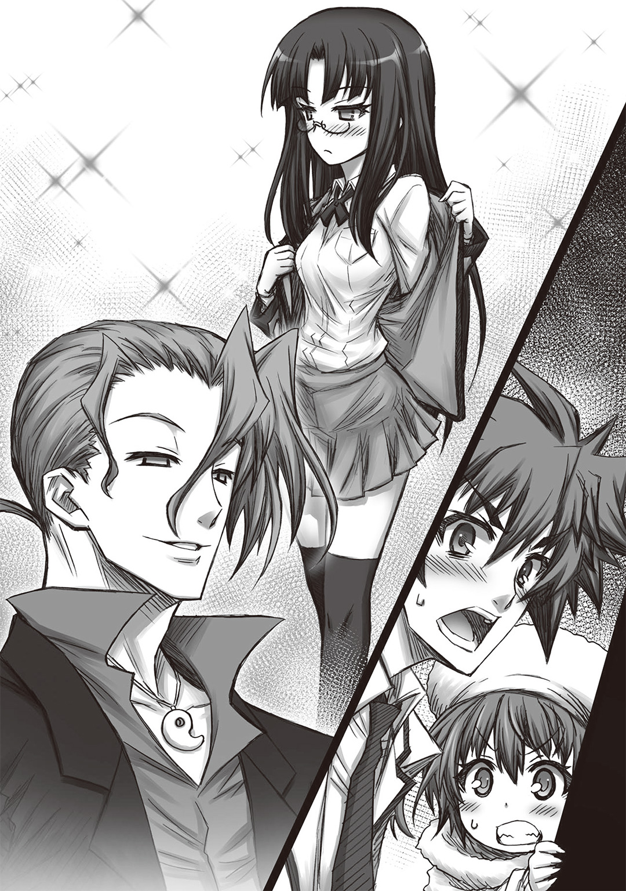
「オ、オフィスラブ禁止いいいいいいいっ――！」
気づけばぼくは反射的に大声を上げ、全力で扉に体当たりをぶちかましていた。
「じゅ、純平さん!?」
背後のマコちゃんの声すら気に留めず、事務所のフローリングを前転。今まさに不貞な行為に及ぼうとする先輩の足元へとダイブした。理性とか理屈とか、来るなと言われていることとか、小難しいことは後だ。彼女の若さゆえの過ちを見過ごすわけにはいかない。
目の前では、ブラウス姿のトーコさんが驚愕の表情を浮かべていた。
「純平くん......？ どうしてここに」
「どうしてじゃないっすよトーコさん！ それはぼくの台詞です！ こんなどこの馬の骨かわからん男と事務所でメイクラブだなんて、ぼくが許さないっすよ！」
「はあ？ メイクラブ？」
「そうです。どうしてもしたいってんなら、ぼくが相手になります！」
ソファーの傍まで歩み寄り、ぼくは薄着の先輩の腕を取った。
彼女はまだ状況を把握できていないというような面持ちで、首を傾げている。
「突然現れて、なにをバカなこと言ってるんですかあなたは！」
「バカとはなんすか！ ぼくは本気ですよ！ トーコさんの不純異性交友のお相手なら、この早池峰純平が務めさせて――」
まくしたてていたぼくの鳩尾に、突如固いものが突き刺さった。
「うぐう!?」
「次は潰しますよ。二度とそんなことが言えないように」
それが草薙の柄だと気づいたときには、ぼくの膝はフローリングに屈してしまっていた。
さすがトーコさんだ。電光石火のツッコミである。いったいいつの間に刀を手にしていたのかまったく気がつかなかった。
「まったく、会うなり汚らわしいことを連呼して......。あなたのその腐れ脳みそは、変態行為以外に用いられることはないんですか」
「そ、そんな......ぼくはトーコさんを真っ当な道に戻そうとしただけなのに」
「純平くんごときに真っ当な道を説かれるようになったら、わたしは人間としてオシマイですね」
永久凍土のごとく凍えるような眼差しをぼくに向け、トーコさんはため息をついた。
「だいたい、純平くんが何を勘違いしていたのかはわかりませんが、わたしはただ、伯道さんが持ってきてくれたマントを羽織ろうとしただけです」
「......は？ マント？」
「ええ。先々週、大江の屋敷での業務でだいぶ破損してしまいましたからね。本部に修繕を頼んでいたんです」
トーコさんが、テーブルの上に置かれた赤い布を指さした。
それは、〝ケット・シー〟を降ろしているときに彼女が纏うマントだ。ぼくもとくにお気に入りの、あの絶対領域まぶしい戦闘用巫女服の一部である。
彼女はときどきこうして、業務で破損したコスプレの修繕を本社に頼むことがある。
エロス全開のコスプレとはいえ、一応は対妖魔戦闘を想定して作られた特別製なのだ。本社の専門的な呪術師でなければ、妖力に対する魔術的な防御を付呪できないらしい。
「ちょうど今日修繕が終わったので、伯道さんが十六夜支社に来るついでに持ってきてくださったんですよ」
トーコさんが傍らの男に目を向ける。
男は、爽やかな笑顔でぼくに軽く会釈した。
「あ、あー......なるほど。もしかしてトーコさん、上着を脱いだのはただ寸法確認のためだけっていう......？」
「そうですが、何か問題でも？」
「あはは......なんだ、そうだったんすか。いや、ぼくはまたてっきり、この男とよからぬアバンチュールに耽るつもりだったのかと」
トーコさんが「はあ」と深いため息をついて、ぼくを睨みつけた。
「そんなわけがないでしょう。相変わらず発想が最低のゲスですね、あなたは」
「そ、その言い方はひどいなあ！ ぼくはこれでも、トーコさんを心配してるんですよ!? トーコさんの瑞々しくも扇情的なバディが、よからぬ男に好き放題弄ばれたりしないようにと、それはもう真剣に」
「いい加減にしてください」
彼女は若干語気を強め、ぴしゃりと言い放った。
「伯道さんは真面目で誠実な、本社のエリート社員なんですよ。あなたのようなポルノじみた想像しかできない変態野郎とは、根本的に違うんです」
「こ、根本的に違うんですか」
「違います。同じ男性というジャンルにカテゴライズするのがためらわれるほど違います」
彼女はそう言って、伯道にちらと視線を向ける。
そのどこか憧憬の念を感じさせるような眼差しは、常々ぼくに向けられている冷たい視線とはまるで違っているように見えた。それはもう、根本的に。
「ううっ、なんだこの差別は......」
ぼくが横目でイケメンに憎悪の視線を向けていると、
「なるほど、君が純平くんか」
伯道が、ニコリと目を細めた。
「君のことは聞いている。なんでも玉藻さんの話だと『下着ドロの容疑で身柄拘束中のため、しばらく出社できそうにない』ということだったが......そちらのほうは大丈夫なのかい？」
「は？」
何を言われているか一瞬わからず、ぼくは思わずあんぐりと口を開けてしまった。
「下着ドロ......？ なんすかそれ」
「おや、じゃあ彼女の勘違いだったのかな」
当然ぼくは窃盗罪なんて犯したことはないし、逮捕されたこともない。
あのキツネ幼女、いったいなんでまたよりによってそんな大ボラを吹いたのか。先ほどの電話で「来るな」と念を押されたことといい、不可解すぎる。
いえ、と口を開いたのはトーコさんだ。
「伯道さん。それはさすがに支社長の冗談ですよ。まさか純平くんが下着泥棒で捕まるなんてことはありえません」
「そ、そうっすよトーコさん！ さすがは愛すべき先輩！ なんだかんだ言いつつぼくのことをよく評価してらっしゃる！ さあほらもっとこの野郎に言ってやって――」
「そうです。純平くんは下着を盗む程度で満足する男じゃないんです。もっとゲスい犯罪にでも、躊躇なく手を染められる男なんです。もし仮に逮捕されるとしたら、強制わいせつあたりでしょう」
「めちゃくちゃ下方向の評価っすねえ!?」
愛すべき先輩のあまりのお言葉に、ぼくは肩を落とした。
そんなこちらのやりとりを見ながら、伯道は「くっくっく」と忍び笑いをもらしている。
「まあ、どうも玉藻さんは俺と君を会わせたくなかったようだしね。誤魔化しただけだろう」
どうして玉藻ちゃんがそんなすぐバレるような噓までついて、ぼくとこの男を会わせたくなかったのか。その理由はわからない。まあ、どうせあの支社長のことだ。本社のエリート社員に十六夜支社の恥部を晒したくないとか、そういう体面的な理由なんだろうが。
「ぼくだって、べつに会いたくなんてなかったっすけどね」
ふん、と鼻を鳴らす。トーコさんの恋人なんて、敵以外の何者でもないのである。そんなヤツと会えて喜ぶのなんて、よっぽど倒錯した性的嗜好の持ち主だけだ。
伯道は肩をすくめながら、
「おや、嫌われてしまったかな。俺としては、君とはもっと仲良くなりたいと思ってるんだけどね」
「は？ どうして？」
「君が、話に聞いていたより愉快なヤツだと思ったからさ」
そう言って男は、切れ長の瞳でぼくをじっと見つめた。
こちらを値踏みするような、なんだか嫌な感じの視線である。この野郎、まさかぼくのことを、恋人につきまとう負け犬か何かだと思ってやがるんじゃないだろうな。
「ともあれ、会えて嬉しいよ純平くん」
長い脚を組みかえ、伯道はふっと短い息をついた。
男のくせに長い睫毛。洋画俳優のように高い鼻。通りを歩くだけで女の子から声をかけられそうな美丈夫だ。なんだか全てが気に食わない男だった。
「トーコも日ごろお世話になっているようだし、君には感謝しないとね」
「さっきから聞いてりゃトーコトーコって。まったく馴れ馴れしい......」
「そりゃあまあ、俺たちのつき合いはけっこう長いからね。べつにいいだろ、呼び捨てくらい」
そう言いながら、男はトーコさんに意味ありげな視線を向ける。
トーコさんもまんざらではないのか、とくに表情を変えることなくこくりと頷きかえした。
「ね？」と、おどけたように、伯道がぼくに微笑みかける。
だが、それが単なる友好の表現だとは思えなかった。恋人同士のことに部外者が口を出すな――。まるで伯道の瞳が、ぼくにそう告げているように思えたのである。
ぼくは思わず立ち上がり、身を乗り出した。
「ふ、ふざけんじゃないっすよ！ トーコさんはぼくのもんだ！ あの柔らかそうなおっぱいも、抜群の絶対領域も、あんたにゃ渡さないっ！」
こちらの啖呵に、伯道が「へえ」と口元を歪ませた。
「ちょっと純平くん――」
口を挟もうとするトーコさんを、伯道が右手で制する。
「意気ごみだけは男前だね、純平くん。しかしどうするつもりなのかな。握りしめたその拳で、俺と殴り合いでもしようってのかい？」
「え。あ......！ の、望むところっすよ！ そっちがその気なら、ぶっとばしてやる！」
いったん凄んでしまった以上は、もう簡単には引き下がれない。
たとえ相手がＡクラス妖魔以上の化け物であろうと、トーコさんの太ももを死守するためなら腹をくくってやる。平和路線なんて、もう知ったことか。
戸口のほうでは、マコちゃんも「やっちゃえ！」とでも言わんばかりに拳を握りしめていた。こうも応援されてしまっては、ぼくも気合を入れざるをえない。
「ぼ、ぼくだってやるときゃやる男なんすよ！ その綺麗な顔をぼっこぼこにされたくなかったら、大人しく降参してトーコさんを渡すことっすね！」
「やれやれ」
伯道がソファーから立ち上がり、上着を脱ぎ捨てた。
ぼくの挑発に動じた様子は微塵も感じられない。それどころか、ゆったりとしたその動作には、いっさいの緊張も敵意もなかった。余裕の態度である。これまたいけ好かない。
男は両手を腰のポケットに入れ、薄く笑みを浮かべた。
「屋内で暴れるのは多少不作法だが......。まあ、君程度のガキを大人しくさせるくらいなら、そうそう散らかることもないだろう」
「な、なんだとう!?」
トーコさんの前でバカにされっぱなしというのも癪だ。頭に血を上らせながら、ぼくは拳を握りしめた。
――絶対生き恥かかせてやるからな......！
ヤツの顔面を殴りにいくと見せかけて、実のところ、狙いはジーンズのベルトである。
彼女の前でカッコ悪く下半身を露出させてやれば、百年の恋も醒めるというものだろう。〝神降ろし〟ならぬ〝ズボン降ろし〟だ。腕っぷしで敵わないのなら、こういう搦め手での攻撃に頼るしかない。
「ちょっとイケメンで腕が立つからって、偉そうにしやがってええっ！」
テーブルを踏み台にしながら、ぼくは男にとびかかった。
右拳をフェイクにして、ぼくの左手はヤツのバックルに伸びる。
ぼくの真意を知らない伯道には、このズボン降ろしを回避するすべはないだろう。
「どこを狙っているんだ、君は」
だがしかし、伯道は微動だにしなかった。
それもそのはず。囮として繰り出したぼくの右拳も、それから本命の左手も、なぜかその数センチ手前の空中で、ぴたりと動きを止めていたのである。
より正確に言えば、止められていたのだ。
宙に浮いた、たった二枚の紙切れによって。
「えっ......!?」
「この程度なら、霊符を使うまでもなかったかな」
薄い笑みを浮かべ、伯道が口を開いた。
ぼくの両腕を止めていたのは、五芒星が描かれた白い紙だった。ただの紙切れが、ぼくの必殺ズボン降ろしを押しとどめていたのである。
形は完全な正方形で、符というイメージからはかけ離れている。見たこともないアイテムだが、あれも強力な魔滅兵器なのかもしれない。
「じゃあ、今度はこちらの番だ」
男がにやりと口元を歪める。妙に威圧的でこそあったが、やはり男にはいっさい動く気配がなかった。これはなにかヤバい気がする――と、ぼくの本能が危機を告げた。
告げたのだが、
「んげふうっ......!?」
不意に腹部に強烈な痛みが走る。身体がくの字に折れ曲がるほどの重い一撃だった。いったい、いつの間にボディーブローなど撃ちこまれたのか。
だが、両手をポケットに入れたままの伯道が拳をくり出した様子はない。ならばいったい、この攻撃はどこから加えられたものなのか――。
考える間もなくぼくは背後に倒れこみ、ソファーごと後ろにひっくり返ってしまった。
後頭部を床に強かに打ちつけ、視界が明滅する。
「いつつ......」
そのときふと、ぼくの目の前を、何か不可思議なものが浮遊しているのが見えた。
これは、折り鶴？
夢を見ているわけではない。手のひら大の紙製の折り鶴が一羽、ぱたぱたとぼくの眼前で羽ばたいていたのである。
「急急如律令。操式の法」
伯道が呟くと、折り鶴は命令に従うかのようにくるりと反転し、彼の肩口にとまった。まるでよく飼いならされたペットのインコのような挙動である。
まさかぼくを吹っ飛ばしたのは、あの紙製の鶴だとでもいうのか......？
「しがない俺の、唯一の特技でね」
気づけば、折り鶴は肩に止まった一羽だけではなかった。十数匹の小さな鶴が、男を守護する衛星のようにあたりを飛び回っていたのである。
「んげえっ!?」
「霊符で折った式神だ。その気になれば千羽だって操ってみせるが......君を倒すくらいなら、このくらいで十分だろう」
「ちょ、ちょっとあんた。まさかその鳥の群れ、ぼくにけしかけるつもりじゃないっすよねえ!?」
冗談じゃない。さっきの腹部への一撃だけでも、胃液が逆流するかと思ったくらいなのだ。鶴一羽であれなのだから、群れに襲われてしまってはひとたまりもないだろう。多勢に無勢である。
脇で見ていたトーコさんも、珍しく心配そうに口を開いた。
「伯道さん、相手はどうせゴミクズみたいな雑魚なのですから、せめて手加減を......」
「ははは、そのセリフ自体にはまったく手加減がないね、トーコ」
男が白い歯を見せて笑った。
「まあ心配するな。俺も鬼じゃない。骨の一本くらいで勘弁してやるさ」
「ひいっ!?」
骨など折られてたまるものか。ぼくはとっさに立ち上がり、横倒しになったソファーを飛び越えた。
こうなればもう逃げるしかない。霊符だかなんだか知らないが、あんな反則技を持っている相手に勝ち目などないだろう。喧嘩を売ったのは早計だったかもしれない。
「せ、戦略的撤退！」
男から距離を取り、一目散に窓際へ。窓の外をちらりと覗いてみたが、幸い路上に人通りは少ないようだった。これなら飛び降りても平気だろう。
しかし脱出を計ろうとしていたぼくの背後に、伯道のため息が聞こえてきた。
「尻尾を巻いて逃げるのか？ 男らしさのかけらもないヤツだな、君は」
「う、うるさい！ 今日のところは引き分けで勘弁してやるっすよ！」
「まあいい。ここは魔滅社の大先輩として、君に教育を施してやろう」
伯道がポケットから手を抜き放ち、素早く胸の前で印を結んだ。
その直後。彼の周囲を飛び回っていた白い鶴たちが、一斉にぼくのほうに首をもたげたのである。
「ちょ、ちょっとタンマ――!?」
しかしぼくには、身を守る暇すら与えられなかった。
十数匹の鶴たちが、弾丸のような速度でぼくに突撃を仕掛けてきたのである。
「あだっ!? ちょ......げふうっ!?」
腕に、腹に、顔面に、なすすべもなく猛烈な突進を受けてしまう。
これ、ホントに紙製の鶴なのだろうか。一羽一羽がまるで鋼鉄製の砲丸並みに重い気がする。日々トーコさんのツッコミに鍛えられているぼくでも、これはちょっと洒落にならない。
「やべっ......!?」
鶴の群れに押しきられる形で、ぼくの身体は窓の外へとのけぞってしまう。
ガシャン、という甲高い音とともにガラスが破砕する。ぼくの身体は、そのまま真下の路上へと真っ逆さまに転落してしまった。
「う、うおおおおおおっ!?」
重力には逆らえない。背中からアスファルトに思いきり叩きつけられ、ぼくは声にならない悲鳴を上げた。死ぬほど痛い。全身が軋んでいるようだ。
「げほっ......」
苦悶の声が漏れる。二階から落下したこともさることながら、やはりあの霊符の鶴のダメージは大きかった。成人男性十人がかりでタコ殴りにあったようなものである。
折り紙ごときに反撃すらできないなんて、我ながら情けない。
頭上から、伯道のすかした声が響いてくる。
「しまった、窓を割ってしまったな......。玉藻さんに怒られるかな」
割れた窓ガラス越しに、男がこちらを見下ろしていた。まるでこの結果が至極当然だとでも言うかのように平然とした表情だ。それがなんだか、無性に癪に障る。
「まあいい。これは俺の手落ちだ。ガラス代は本社払いにしておこう」
「てめえ......」
痛みをこらえつつ、ぼくは十六夜支社の窓を思いきり睨みつける。
だが、当のイケメンはただ柔らかな笑みを返しただけだった。
「純平くんも治療費が必要かな？ まあ、式神ごときに遅れをとるバイトに、あの玉藻さんが素直に治療費を渡すとは思えないけどね」
ははは、と耳に障る笑い声を残して、伯道は窓から離れていった。
これはもう、事実上の勝利宣言をされてしまったようなものである。
トーコさんも、路上に倒れたこちらをちらりと見ただけで、すぐに視線を逸らしてしまった。自業自得です、と言わんばかりに。
「ちくしょう......」
すぐにでも階段を駆けあがり、伯道の横面をぶん殴ってやりたい気分だった。
だが、今のぼくにはそんなことすらできない。痺れるような鈍痛が全身を支配しており、起き上がることさえできないのだ。完膚なきまでの敗北である。
「返り討ち......っすか。トーコさんを奪い返すどころか、まさかこんな格好悪い姿を晒すことになるとは」
帰宅途中のサラリーマンたちが、路上に大の字で横たわるぼくに怪訝な目を向けて通りすぎていく。情けなさすぎて、涙が出そうだった。
ぼくがしばし、そんな無力感に苛まれていると、
「純平さん、だいじょうぶ？」
声のするほうに振り向いてみる。すると、マフラーを巻いた小柄な女の子がとてとてこちらに駆けよってくるのが見えた。
「マコちゃん......」
「ボッコボコにやられちゃったねー......。殴りかかったとこまでは調子よかったけど」
「悪かったっすね、期待に応えられなくて」
ぼくの前にしゃがみこみ、彼女は首を振った。
「ううん、ある意味予想どおりだった。かたや魔滅社きってのエリート社員。かたや魔滅社きってのクズバイト。......あいつの実力の一端がわかっただけでも御の字だよ」
じゃあこの子、最初からぼくを偵察用の捨て石にするつもりで伯道にぶつけたのか。
可愛い顔のくせに、なかなかの面の皮の厚さである。
「キミね、ひとを利用しといてクズ呼ばわりはないんじゃないんすか」
「あははー、ごめん。でもクズはクズだし」
マフラーの糸をくるくる回しながら、あっけらかんとマコちゃんが笑った。
「でも、ぜったい勝てないってわかってる相手に立ち向かったとこだけは、ちょっとだけ見直したかな」
よしよし、と少女がぼくの額を撫でる。往来で女子中学生に頭を撫でられるのは、わりとこっ恥ずかしいものがあった。
「『一寸の虫にも五分の魂』とは言うけど、純平さんにも一ナノグラムくらいはカッコイイところがあったんだねえ」
「ナノって」
どんな極小単位だそれは。
折り鶴部隊の突撃で負傷したぼくの頰をさすりながら、マコちゃんが続ける。
「ともかくあの伯道って男、上方の陰陽師系列の術者っぽいね」
「陰陽師？」
「ほら、五芒星の呪符を使ってたじゃない。急急如律令、って」
言いながら彼女は、胸の前で印を結ぶフリをしてみせた。確かにさっき、伯道はそんな仕草をしていた気がする。
「急遽巨乳必要......。なぜあいつはぼくの心が読めたんだ？」
そんなどうしようもないボケには突っこまないよ、とマコちゃんはぼくを睨みつけた。
「陰陽師といえば、日本古来からの呪術師だよね。妖魔退治だけじゃなくて、政治に関わってきた家系もあるって聞くし......。基本的に根っからのエリートだよ。いろんな意味で強敵かもね」
「やっぱりいけ好かないっすね」
顔も実力も社会的地位も、ついでに家柄までいいときた。天から二物も三物も与えられている人間というのは、いるところにはいるものだ。
「相手がどれだけいい男だろうが関係ないよ。お姉ちゃんの恋人なんて、マコは認めない。どんな手を使ってもあいつを排除して、実家に戻ってもらうんだから」
マコちゃんが語気を強める。あれだけぼくがフルボッコにされたのを見ても闘志を失わないあたり、彼女の決意は固いようだ。
「ぼくだって同じ気持ちっすよ。やられたまんまで引き下がるわけにはいかないし」
「じゃあ、作戦は続行だね。純平さん」
にこり、と少女が微笑んだ。
「とりあえず敵の顔とスペックは把握できたとして、問題はこれからだよね。相手がエリート術者なら、それなりの戦略を練らないと」
「あのさ、マコちゃん。それよりひとつ提案があるんすけど」
「え、何かいい案があるの？」
「あ、作戦とかじゃなくて」
少し言い辛いことだったが、ぼくは咳払いをひとつしてから口を開いた。
「純白の無地もいいけど、マコちゃんはもう少し大人な下着にチャレンジしてもいい頃合いかもしれないと思うんすよ」
「え？ 下着？」
「いや、ほら。キミみたいなキュートな子が、たとえば黒の紐パンなんか穿いちゃったら、それだけでとんでもない破壊力だと思うんだ。ほら、せっかくの紐使いなんだし」
「ごめん、純平さんが何を言いはじめたのか、サッパリわかんない」
マコちゃんが怪訝な表情で首を傾げた。
「でもまあ、倒れたぼくに二度までもパンチラを見せちゃうような、その無防備なところだけは変わらないでほしいけど」
「あ」
ようやく彼女は、ぼくが下着を覗いていることに気がついたのだろう。
彼女はスカートを押さえながら、とっさに立ち上がった。
「ひ、ひとが真剣な話をしてるのに、どこ見てるの！」
「あ、いや、キミのためを思って――」
そんなぼくの言い訳は、彼女の耳には届かなかったようだ。
マコちゃんは「ふん」と鼻を鳴らすと、ぼくの顔面をスニーカーで踏みつけたのである。
「んぎゃあっ!?」
「ちょっと見直したと思ったのに、やっぱりクズだこのひと！ もう知らないからね！」
そんな捨て台詞を残し、マコちゃんはさっさと夜の闇に消えてしまった。
商店街に吹きすさぶ夜の秋風は、紳士には冷たすぎた。
余談だが、十六夜市は妖魔トラブルの発生件数が多い街ということで有名である。
従業員がほぼ毎晩のように業務にかり出される支社なんて、全国広しといえども十六夜支社くらいのものだろう。
そう。死と隣り合わせの業務を、毎晩毎晩ぼくとトーコさんは処理しているのだ。
実に過酷な職場である。殉職が早いか過労死が早いか、命がけのチキンレースだ。今まで命があったのが不思議なくらいかもしれない。
もっと人員を補充してほしい。できれば、見た目華やかな美少女をたくさん雇うべきだ――。ぼくは常々、そういう陳情を上司に訴え続けてきたのだが、
「人件費がもったいなかろう。お前が二人分も三人分も働けばすむことだ」
結果はいつも同じ。そんなふうに冷たく突っぱねられるだけであった。
「カネに」「キタナい」「キツネババア」。そんな上司のいる職場を、３Ｋ職場というのだったろうか。
日々の搾取とハードワークに、ぼくはもう限界だった。トーコさんのコスプレを見るという楽しみさえなければ、すぐにでもバックレたいくらいキツいバイトだったのである。
しかしまあ、それも先週までの話だ。
「ああ、暇すぎる」
茜色に染まる空を眺めながら、ぼくはひとり校舎脇のベンチでため息をついていた。
渡り廊下を挟んで校庭に見えるのは、三面からなる我が校のテニスコートだ。女子テニス部員たちが、黄色い声を上げながら練習に打ちこんでいる。
たまのバイトの休みの日には、こうして彼女たちのスコートが翻るさまを観察するのがぼくの日課だった。しかしなぜだろう。純白のアンダースコートを目にしても、今日は一向に心が晴れる気がしない。
「無期限の出勤停止......なんなんすかね、この仕打ち」
伯道に返り討ちにされてから、すでに一週間が経過していた。
あのあと玉藻ちゃんから電話で言い渡されたのは、クビ一歩手前の重い処分だった。なんでも、本社からの客人に無礼な暴行を働いたことがまずかったらしい。
結果だけ見れば被害者はむしろぼくのほうだと思うのだが、玉藻ちゃんはぼくの言い分など聞き入れようとしなかった。あの話のわからない支社長は、ほぼ一方的に、ぼくに出勤停止を命じたのである。
「トーコさんも庇ってくれる様子はまったくなかったし......。みんな、そんなにあの男が大事なんすかねえ」
そりゃぼくはあんなイケメンじゃないし、本社のエリートでもない。当然、トーコさんの恋人でもない。
早池峰純平など所詮、足手まといの役立たずバイトだということなのだろう。たとえ出勤しなくても、誰も困りはしないに違いない。
やり場のない疎外感に頭を抱えるぼくの耳に、ふと、女子の声が聞こえてきた。
「ねえ、ゆっちゃんの話聞いた？ また出たんだって」
「ああ、アレでしょ。食堂荒らしの妖魔。駅前のファミレスとかバーガー屋とか、そのせいで休みになってる店多いよね」
コートのほうからテニス部員たちが何人か連れだって近づいてきた。休憩がてら、自販機でジュースでも買うつもりなのだろう。
「困るよねー。部活帰りにお店寄れなくなるのは」
「なんだっけ、あのほら......魔滅社だっけ？ こういうときこそ、ああいうひとたちになんとかしてほしいよね」
「ああ、妖魔専門の警備会社だよね。どうなのあそこ。ちゃんと仕事してくれるの？」
「さあ、どうなんだろ......。依頼主のお家ごとぶっ壊しちゃうとか、バイトにセクハラされちゃうとか、そんな物騒な話を聞いたけど」
「ううん、ここ最近はすごい評判いいらしいよ。仕事は迅速丁寧、どんな凶悪な妖魔でも、周囲に被害なんかいっさい出さずに退治しちゃうんだって」
「あ、それあたしも聞いたわ。なんでも、最近新しく入ったイケメン社員さんが、ちょお優秀らしくて」
「ほほう、イケメン社員」
「芸能人もびっくりなくらいのルックスで、おまけにとっても優しくて誠実なひとだったってさ。親戚のオバちゃんが言ってた」
「ちょ、オバちゃん情報かよ」
「でも、イケメンって言われると気になるよね。私もちょっと依頼してみようかな」
でもあんたべつに妖魔がらみの困りごとないじゃん――そんなふうに笑い合いながら、テニスウェアの女子たちはぼくの前を通り過ぎていく。
コートに向かう彼女たちの太ももを見ながら、ぼくは「はあ」と、ため息をついた。
新しく入ったイケメン社員、というのはあの伯道のことだろう。まさか、校内であの男の噂話を聞くことになるとは思わなかった。
「あの野郎......ずいぶんうまくやってるみたいっすね」
これだけの短期間でここまで市民の人心を掌握するとは......恐るべき男である。
「くそう。ぼくだって日夜、妖魔との揉め事解決に尽力してきたというのに......。所詮世の中は顔だってことか!?」
ひとりごちて、ぼくは空を仰いだ。なんだか、今日はやけに夕日が目に染みる。
「たそがれてるねえ、純平さん」
不意に横合いから声をかけられる。振り向くと、ベンチのすぐ隣に座っていた少女と目が合った。
「あれ、マコちゃん？」
一週間ぶりに会った白い帽子の中学生は、今日も例の妖魔マフラーをとっぷり巻いていた。秋風が冷えるのか、おしるこ缶をしっかりと両手で握っている。
「あの伯道って男、魔滅社の社員としてはホント優秀みたい。ここ一週間、ほとんどひとりで業務を処理しちゃってるよ。こりゃ、誰かさんと差がついてもしょうがないよね。お姉ちゃんをえっちな目で見ることくらいしか能のないバイトとは、月とスッポンだもん」
しばらく姿を見ていないと思ったら、会うなり言いたい放題である。なかなかに手厳しい。
「あのねマコちゃん、ここ高校の敷地なんすけど」
そんなの知ってるよ、とセーラー服の少女は笑った。
「だいじょうぶ。教師に咎められたら『この変態に連れこまれました』って言い訳するし」
「いやそれ大丈夫じゃないよね。ぼくの社会的評価は確実に地に堕ちるよね」
「あー、べつにそれは心配しなくてもいいんじゃないかなあ。......知ってる？ 最低って評価は、それ以上下がることがないから最低なんだよ」
ナチュラルに暴言を吐く小娘だった。もしかしたら、こないだ別れ際にパンツ覗いたことをまだ根に持っているのかもしれない。
「てかキミ、今までどこで何してたの。家出少女だったよね、たしか」
「あ、うん。公園の土管で寝泊まりしたり、ねっとかふぇ？ とかいうところでシャワー借りたりしてたよ。コンビニあれば生活物資には事欠かないし。やー、都会は便利だねえ」
さすがは山で修行中の巫女見習いである。小さな体軀に似合わず、かなりタフな様子だ。
「いやでも、年頃の女の子がそんなサバイバル生活するのはマズい気が......」
「とはいえ、少ない軍資金をむだ遣いするわけにもいかないもん。お姉ちゃんに悟られずにいろいろ調べるには、長期戦を覚悟しなきゃだからね」
真剣な表情でマコちゃんが頷く。
その瞳には、ローティーンらしからぬ執念が感じられた。
敬愛する姉を男の手から取り戻したいという気持ちはわかる。だが、路上生活をしてまで男の殺害を目論むというのはちょっといきすぎだ。この子、やっぱり変な子のようだ。
「土管で寝るくらいなら、いっそうちに来てもよかったのに」
「え？」
「ぼくのアパート、美少女ならいつでも大歓迎なんすよ。ほら、ちょうどひとり暮らしだし」
「それはぜったいイヤ」
こちらの提案を最後まで聞くことすらなく、マコちゃんは即座に首を振った。
「さすがのマコも、性犯罪者予備軍とひとつ屋根の下はムリだよ。純平さんの部屋で寝るくらいなら、ヨハネスブルグの路上で寝たほうがぜんぜんマシ」
「どんだけ危険地帯扱いっすか、ぼくの部屋」
まあ、無理強いはしないけど。
いかにトーコさんの妹とはいえ、こんな可憐な中学生が部屋に寝泊まりすることにでもなったら、ぼくだって間違いを犯さないとは言いきれないのだから。
いや、十中八九間違いを犯すだろうな、たぶん。
マフラーに顔を埋めて白い息を吐く少女を横目に、ぼくは自らの理性の脆弱さを冷静に分析していた。
「トーコさんもかなりの美人だけど、妹は妹で違うベクトルの可愛さがあるからな。こんな子が『純平さん、眠れないの』なんてベッドの中へ入ってきたりしたら、ぼくはもう......！」
「そんな破廉恥なこと、マコがするわけないでしょ！」
気づけばぼくの妄想は外に漏れ聞こえてしまっていたらしい。マコちゃんがマフラーの糸でこちらの首を絞めようとしているのを見て、あわてて口を閉じる。危ない危ない。
「まあ、話を戻すけど」マコちゃんが口を開いた。「路上生活と張りこみの甲斐もあって、ようやく伯道に一矢報いる算段がついたんだ。この作戦なら完璧。マコたちだけでも、あいつをやっちゃえるよ」
「やっちゃうって......どうやって」
敵は魔滅社きっての使い手なのだ。そんな相手をどうやって倒すというのだろう。
このあいだ手ひどく返り討ちにあったぼくには、あの男からトーコさんを取り戻すなんて甚だ不可能なことに思えた。
「うん。方法自体はとってもシンプルだよ。正面から挑んで勝てないなら――」
「勝てないなら？」
「暗殺しちゃえばいいんだ」
少女は天使のように無垢な笑みで、悪魔めいた過激なことを言い放つのだった。
草木も眠る丑三つ時。
静まりかえった駅前の商店街に、通行人の姿はない。日中は混雑するファーストフード店も、女子に人気の雑貨ショップも、この時間はどの店もシャッターを下ろしている。
がらん、とした通路に響くのは、ぼくたちふたり分の足音だけだった。
「ねえ、マコちゃん」
後ろを歩く少女に声をかける。
彼女は少しおどおどしながら、「え、なに？」と首を傾げた。その声は若干震えており、足どりも内また気味だった。もしかして怖がってるのか？
だがそれも無理はない。夜の十六夜商店街は、ゴーストタウンもかくやという不気味な雰囲気を漂わせているのだ（その不気味さたるや、過去に何度かテレビで心霊スポットとして紹介されてしまっているほどである）。
いかに巫女として修行中の身の上とはいえ、中学生の女の子がこの商店街を歩くのはキツイだろう。腰が引けてしまってもしかたない。
「怖いなら、ぼくひとりで行ってもいいんだけど」
「べ、べつにこんなの怖くないよ。ただその、実家の暗闇修行のトラウマがよみがえるだけで」
強がりを言いながらも、マコちゃんの表情はすっかり青ざめてしまっていた。よっぽど暗いところが怖いのだろう。歯の根がまったく嚙みあっていない。
「んじゃ、せめてほら」
右手を差し出したのだが、彼女はちょっとむくれたような表情を浮かべた。
「手を握れって？ も、もしかして純平さん、この暗がりに乗じてマコを手籠めにする気じゃないよね」
「は？」
「言っとくけど、そんなことしたらマコも黙ってないよ。女郎蜘蛛ちゃんの糸で、首を絞め上げちゃうから」
彼女の右手には今、例の白い糸が雁字搦めに巻きついていた。遠目には片手だけ白い手袋をしているようにも見える。ぼくが不埒なふるまいをしようものなら、あの糸ですぐさま反撃に出るつもりなのだろう。
「いやいや、んなことしないっすよ！」
「むう......信じられないなあ。暗闇よりも、痴漢クズ野郎のほうが怖いからね」
「はあ。んじゃ、ぼくがよからぬことをしたら首でもなんでも絞めていいっすよ。ともかく、そうビクビクされてちゃ歩きにくくってしょうがないから――」
ため息まじりに、マコちゃんの左手をとる。「あ」と驚いた彼女の手のひらは、少しだけ小刻みに震えていた。
「な、なにするの。子ども扱いしないで」
「いいからいいから、さっさと行くっすよ。夜はそんなに長くないんだから」
ぶーたれつつもこくりと頷き、マコちゃんはぼくに手を引かれて歩き始めた。
まあとりあえず、そこまで嫌がってはいないように見える。
人気のない暗い夜道を、女子中学生の手を引いて歩く男......警官にでも見つかれば職質待ったなしの状況だったが、幸い彼らの姿はないようだった。日ごろの行いに感謝である。
「......純平さんの手って、意外とあったかいよね」
道を歩きながら、唐突にマコちゃんがドキリとするような言葉を呟いた。
「え、そ、そうっすか？ いや、まあそれを言うなら、マコちゃんの手も細くってすべすべでぷにぷにで、頰ずりしたくなるくらい柔らかいっすけど」
「なんだか昔、山で迷子になったときのことを思いだしちゃった」
ぼくの感想を完全に無視して、マコちゃんが続ける。
「お姉ちゃんが巫女の修行を始めた頃だったかな......。お姉ちゃんたら、忙しくて全然遊んでくれなくなっちゃってさ。気を惹くためにマコ、お姉ちゃんに手作りのプレゼントをしてあげようと思ったの」
「プレゼント？」
「うん。ドングリのペンダント。ちゃっちいヤツだけどね」
言いつつ彼女は、「ぷっ」と吹き出した。思い出し笑いだろうか。
「ドングリを採るために神社の裏の山奥に入ったんだけどさ、それがまた見事に迷子になっちゃって。......半日くらいは森の中を彷徨ったかなあ。日も暮れてくるし寒くなるしで、マコ、ひとりで大泣きしちゃったんだ」
てへり、と舌を出してマコちゃんが笑う。
「暗い森の中で蹲って、もうどうしていいかわかんなくなっちゃってたんだけど――。そしたら、お姉ちゃんがマコを呼ぶ声が聞こえてきたの。修行をわざわざ中断してさ、血相変えて探しに来てくれたんだ」
「へえ、あのトーコさんが」
「うん。......もちろんすっごい怒られたけど、すっごい心配もしてくれてたみたい。『マコに怪我がなくて本当によかった』って、お姉ちゃんも半泣きで」
「なるほど、あのクールビューティーにも、けっこう妹思いなとこあるんすね」
「そのとき、暗い山道を一緒に手を繫いで帰ったんだ。......純平さんと手を繫いでたら、なんかそんなこと思いだしちゃったんだよ」
年相応の優しい笑顔を浮かべ、彼女はぼくを見上げた。
なるほど、仲良きことは美しきかな。神凪姉妹が仲睦まじいようでなによりである。
「でも、今のお姉ちゃんは変わっちゃった。恋人に夢中で、きっとマコのことなんて忘れちゃってるよ。いなくなったらそれでオシマイ、って感じでさ」
「いなくなったらって......。ただ離れて暮らすようになったってだけでしょ。あのトーコさんが、まさか大事な妹をないがしろにするってことはないと思うんすけどね」
「どうかな......。でも、お姉ちゃんを元に戻すためには、やっぱりあの伯道って男をなんとかしなきゃ。お姉ちゃんにはマコがいればいい。恋人なんかいらないもん」
ぼくの右手をきゅっと握りしめ、マコちゃんが頷いた。
まあ、伯道を倒すという決意には賛成だ。トーコさん奪還のためには、まずはヤツをなんとかしなければならない。
「ああそうだマコちゃん。その闇討ちの話なんだけど」
マフラーの少女が隣で「うん」と頷いた。
「伯道を待ちかまえるのはいいとしても、十六夜支社の今晩の業務がこの商店街だってのは、確かな情報なんすか」
「あ。それは確実。お姉ちゃんとあのキツネ耳の女の子が、昨日事務所で話してるのを聞いたから」
「事務所で......ってどうやって？」
家出娘であるマコちゃんは、姉の目に触れないよう行動していたはずだ。
そんな彼女がいったいどうやって業務情報を入手したというのか。十六夜支社に近づくなんて、それだけで危険なはずなのに。
「え？ 話を盗み聞く手段なんて、たくさんあるじゃん」
そう言いつつ、マコちゃんが右手でポケットから何かをとり出した。イヤホンのついた、黒いマッチ箱のような電子機器だ。
「つくづく都会は便利だよね。ちょっと探せば、盗聴器なんてものが簡単に手に入っちゃうんだから」
「と、盗聴器!?」
「先週最初に事務所に行ったときに、こっそりドアの内側に取りつけておいたんだ。お姉ちゃんの恋人を殺すためなら、持っておく情報は多いに越したことはないもんね」
いっさい悪びれた様子もなく、マコちゃんは得意げに笑う。
薄々は感じていたことだが、この子は目的に対して手段を選ばなさすぎる傾向がある。
そもそも姉の恋人を暗殺するとか言っちゃう時点で、かなりヤバイ。
「はは......トーコさん以上に怖い女の子っすね。ある意味」
「やだなあ盗聴ぐらいで。純平さんだって、しょっちゅう女の子を盗撮してるって話じゃない。むしろそっちのほうが外道？ ひとのこととやかく言えないよね」
ひどい言われようだったが、ぼくに反論の余地はなかった。
「で、情報収集した結果なんだけどさ」受信器をポケットにしまいつつ、マコちゃんが口を開いた。「どうやらお姉ちゃんたちの相手は〝食堂荒らし〟らしいよ。今夜もそいつ、この商店街に現れる可能性が高いんだって」
「食堂荒らしって、いま噂の？」
このところ十六夜市では、飲食店を狙う妖魔が出没しているらしい。
被害に遭った店舗はかなりの数に上るのに、外見や特徴はまったく不明。気づけば、店内が荒らされ、備蓄されている食料が奪われているらしいのだ。
「人間に直接危害を加えることはないらしいんだけど......。まあ、飲食店にとってはやっかいな妖魔だよね。商店街の店舗が共同して魔滅社に退治を依頼したみたい」
「メシだけしか眼中にないって感じか。食いしん坊な妖魔もいたもんすね」
「まあ世の中には、女の子しか眼中にない、心底ゲスな妖魔もいるらしいけどね」
誰のことだろう。ぼくにはまったく心当たりはなかった。
「ともかく、まずぼくたちがすべきことは、その食堂荒らしをトーコさんたちよりも先に見つけ出すってことか」
「うん。闇討ちしようにも、先回りして潜んでなきゃいけないし」
魔滅業務が行われそうな場所に潜伏し、待機する。しかる後、妖魔との戦闘が始まった頃を見計らって、伯道を闇討ちする――これが今回のぼくらの作戦であった。
卑怯といえば卑怯だが、ぼくたちの戦力であの男をなんとかするには、これくらいしか手段が残されていなかったのである。
「背中から襲えば楽勝っすよ。全裸に剝いてマコちゃんの糸で縛り上げ、土下座させたところを写真に撮ってネットにアップする。そうすりゃ、あいつは死んだも同然っすね」
「何度聞いても純平さんの発想はゲスすぎるよね。普通に殺すよりもひどいもん」
背後からマコちゃんのため息が聞こえてきた。
トーコさんの前でフルボッコにされた屈辱を晴らすためには、暗殺ごときでは生ぬるい。徹底的に生き恥を晒させ、完全勝利を目指さねばならないのだ。
「トーコさんだって、あのイケメンがぼくに屈する姿を見れば『純平くん素敵！ 抱いて！』と言うに違いない......。ふふふ、燃えてきた！」
「マコなら絶対言わないけどなあ」
マコちゃんの呆れたような呟きは無視だ。
とりあえず今考えるべきは、あの男に対し雪辱を果たすことだけである。
「つってもけっこう店が多いな......。こん中から妖魔を探し当てるのは、わりと難儀かも」
並んだシャッターの列を見て、ぼくはため息をついた。
十六夜駅前商店街は、駅前から五百メートルほど続くアーケード街である。通りの両側に並んだ店舗は、大小さまざま合わせて四、五十軒ほど。飲食店だけに絞っても、かなりの数がある。
この中で妖魔が狼藉を働く可能性があるのは、いったいどのお店なのか。闇雲に探しているだけでは、伯道に先んじられてしまうだろう。
「こういうとき、トーコさんの〝ケット・シー〟がありゃ便利なんすけどね。あの猫耳コスプレ、絶対領域が素晴らしいのはもとより、妖魔探知能力なんてのもついてるし」
「それじゃまるで妖魔探知のほうがオマケっぽい言い方だよね。〝神降ろし〟への侮辱もいいところだよ」
「あ、そういうつもりはないっすよ。ぼくは常々、トーコさんのコス――いや、〝神降ろし〟には尊敬の念を抱いてるんだ。前も言ったけど、毎晩お世話になってるしね」
「正式な〝神降ろし〟が使えるようになっても、マコ、純平さんにだけは絶対見せないようにしよう......」
警戒感満点の表情である。
姉妹のコスプレ競演を楽しみにしていた身としては、実に残念なことだった。
「実を言えば、まだ略式とはいえ、マコも妖魔探知くらいはできるんだけどね」
「え、そうなの」
マコちゃんが、右手を掲げてみせる。手のひらには相変わらず、妖魔の糸がぐるぐるに巻きついていた。
「こうして歩きながら、女郎蜘蛛ちゃんの糸を商店街中に仕掛けてるんだ。例の妖魔が少しでも糸に触れようものなら、その居場所がたちどころにわかっちゃうって寸法だよ」
よく見ると、指先から糸の一端が足下まで伸びている。糸は地面を這うように、彼女の後方へ伸びていた。
暗くてよく見えないが、ぼくたちの背後にはこの糸が無数に張り巡らされているらしい。マコちゃんの手際の良さに、ぼくは思わず舌を巻いた。
「なるほど、略式っていっても、ずいぶん器用なことできるんすね」
「うん。細くすれば、ほとんど人目につくことはないし。罠としても使えちゃうから、すごく便利だよ」
モノを自由自在に絡め取るうえに、十キロメートルも伸びる糸。おまけにほぼ不可視とは、なんと便利な能力なのだろう。いろいろと応用ができそうだ。
「道行く女の子のスカートを気づかれずに持ちあげることくらいは簡単にできそうっすね。他にも、換気扇のダクトを通して女子更衣室の鍵を内側から開錠したり、服の袖口から侵入させて、ブラのホックを外したり......」
「そうだね。そういう発想しかできない下劣な変態をふん縛ったりもできるね」
姉そっくりの冷たい眼差しが、ぼくに突き刺さった。まったく、ジョークの通じない姉妹である。
そんなふうに彼女と軽口を叩き合っていると、
「あ、噂をすれば！」
マコちゃんが右手に視線を落とした。どうやら、糸に反応が見られたらしい。
「例の食堂荒らしっすかね」
「うん、たぶん。......場所的にはだいたい、二つ前の曲がり角くらいかな」
少し前に通り過ぎたばかりの地点だった。
あのあたりにはたしか、ファミリー向けのリーズナブルなレストランがあったはずである。ウェイトレスのスカート丈が短いので、ぼくもよくお世話になっているお店だ。
件の妖魔、今夜はあの店を襲うつもりなのだろうか。それは少し困る。
「行ってみよう、純平さん」
マコちゃんと手に手を取って、そのファミレスへ。
外から見た限りでは、ファミレスの入った建物自体になんら変わった様子は感じられなかった。灯りはほとんど消えているし、何者かが侵入している気配もない。
しかし外階段を上って店舗前まで来ると、ぼくにもようやく異変が察知できた。
「うわっ、入り口が......」
自動ドアが破られ、内側のマットの上にガラスが散乱している。
粗暴な性格の侵入者なのか、力技でムリヤリこじ開けたという感じだ。アクリルガラスが粉々に砕け、アルミ製のノブの部分までひしゃげている。
これはもう人間業ではない。よく見れば店内のテーブルや装飾品もあちこちでひっくり返っており、惨憺たる有様を呈している。
「防犯装置は......切ってあるか」
「妖魔の仕業なら、普通の警備会社の出る幕はないもんね。これはお姉ちゃんたちの領分でしょ」
魔滅業務の妨げにならないよう、店側が事前に防犯用セキュリティシステムを切っておいたのだろう。魔滅社に先行して潜入を目論むぼくたちにとっては、実に好都合である。
「足下気をつけてね、純平さん」
荒れ果てた店内は薄暗く、よく注意しなければ何かに躓いてもおかしくなさそうだった。
一応申し訳程度の非常灯は点灯していたが、やはりそれだけでは心許ない。
破壊された自動ドアを慎重に跨ぎながら、ぼくは持参したペンライトのスイッチを入れた。伸びる光芒が、なぎ倒された観葉植物を照らし出す。
「うまくファミレスに入りこめたのはいいっすけど、当の食堂荒らしに見つかるのはマズいっすよね。あの男を闇討ちする前に、ぼくらがやられたんじゃ元も子もないし」
「あ、それは大丈夫」マコちゃんが、右手の糸を指先で器用にくるくる回しながら口を開いた。「食堂荒らしなら、たぶんもう捕まえたから」
「え？」
「さっきそいつ女郎蜘蛛ちゃんの糸に絡まっちゃったみたい。厨房のほうでもがいてるよ」
どうやらマコちゃん、すでに当の妖魔を無力化してしまったらしい。できる子である。
「大したことない妖魔だったんすかね......。ま、とりあえず様子を見に行ってみようか」
ガラクタまみれの客席を通り抜け、カウンターの奥へ。
八畳ほどの広さの厨房には、さまざまな食材が散乱していた。丸ごとのハムにホールチーズ、鍋ごと床にこぼれたミネストローネ。冷蔵庫の扉も開きっぱなしで、今まさに荒らされたばかりという様相を呈している。
しかし、当の下手人の姿は部屋のどこを見渡しても見つからなかった。
「あれ？ マコちゃん、捕まえたんじゃなかったの？」
「うん。ちゃんと捕まえてるよ。ほら、台の上」
マコちゃんが、部屋中央の調理台の上を指し示す。
ステンレス製の台に載っているのは、幾つかの調理器具と、蜘蛛妖魔の白い糸で拘束された「何か」だった。
「え......？」
その「何か」の姿を見ることはできなかった。姿形のない透明な「何か」なのだ。
巻かれた糸から判断するに、大きめのキャベツくらいのサイズだろうか。台の上にいるのはわかるのだが、いかんせん詳細はわからない。
「もしかして、その見えないヤツが食堂荒らしっすか？」
たぶん、とマコちゃんが頷いた。
「食堂荒らしって透明な妖魔だったんだね。......うん。これじゃあ正体不明のはずだよ」
マコちゃんが調理台に近づき、紐が巻きついた「何か」を抱え上げた。それと同時に、どこからともなく「きゃいん」という鳴き声めいた音が聞こえてくる。
「い、今の声って、もしかしてそいつなの？」
「よしよし、いい子いい子。大丈夫だよ、マコたちは敵じゃないよー」
マコちゃんが「何か」を、いたわるように優しく撫でた。
するとその「何か」も安心したのか、彼女の腕の中ですうっとその姿を現しはじめる。
最初は尻尾、ふさふさの毛に覆われたお尻。それから黒いボタンのような、小さな鼻面。
「......犬？」
「ワンちゃんだねえ」
マコちゃんに抱えられていたのは、つぶらな瞳をした小型犬だった。犬種としては、チワワに近いかもしれない。
ただ普通のチワワと違うのは、背中に小さな羽のようなものがついていることだった。だが、あまり役に立たなさそうな羽だ。サイズ的に、空を飛べるとはとうてい思えない。
チワワ妖魔はぷるぷると身を震わせ、庇護欲を誘うような瞳でマコちゃんを見つめていた。
「ねえワンちゃん。最近このあたりの食堂を荒らしてるのって、あなたなの？」
少女の問いに、チワワ妖魔が「くうん」と答える。
「やっぱり。......純平さん、この子が食堂荒らしで間違いないみたい」
「そっか......。いや、つーかマコちゃんキミ、その犬の言葉わかるんすか」
「そりゃそうだよ。妖魔と心を通わせなきゃ〝神降ろし〟なんてできないもん。動物型妖魔とのコミュニケーションなんて、神凪の巫女にとっては初歩の初歩だよ」
さらりと言ってのけるマコちゃんだったが、会話の成り立たない妖魔と話せるなんて、実はけっこうすごいのではないだろうか。
「うちにも一匹、話の通じないキツネ妖魔がいるからな......。せっかくだからマコちゃん、ぼくの代わりに労働条件を交渉してくれると嬉しいんすけど」
そう頼んでみたのだが、「社畜の不満なんてどうでもいいよ」と一蹴されてしまった。
どうやらマコちゃん、今はチワワ妖魔とのコミュニケーションに夢中なようだ。
「ふんふん、レストランを荒らしてたのは、食べ物がなかったからなんだ......。それはちょっと可哀そうだね」
お腹の毛をわしゃわしゃ撫でつけながら、マコちゃんが嘆息した。
それにしても、小型犬と戯れる女子中学生か......。実に絵になる可愛らしさである。ほっぺをぺろりと舐められて目を丸くする表情も、なんだか微笑ましい。
もしかしてあのスーパークールなトーコさんにも、この子のように動物とじゃれ合って遊んでいた頃があったのだろうか。非常に興味深い。ぜひとも、そういうトーコさんの顔を見てみたかった。
「あ、それならいっそのこと、ぼく自身がトーコさんの犬になるのはどうだろう。なんかこう、バター犬的な――」
「あのさあ純平さん、そういうバカ丸出しの妄想はせめて口に出さないでやってくんないかな......」
気づけばマコちゃんが、ぼくに白い目を向けていた。胸に抱かれているチワワも、心なしかぼくを蔑んだ目で見ているような気がする。なんか悔しい。
「純平さんみたいなクズがまともに生きている一方で、辛い目に遭ってる妖魔もいるんだよね。世の中って不思議だなあ」
「ぼくがクズだって部分はあえて聞き流すけど......その、辛い目に遭ってる妖魔ってどういうことっすか？」
マコちゃんが、チワワの頭を撫でながら答えた。
「この子、捨てられちゃったんだって。飼い主に」
この世の中、妖魔をペットにする好事家というのは少なからずいるものである。とくに、妖魔の多い十六夜市においては、わりとよくあることなのだ。
現に十六夜支社でも先月、迷子になったペットの猫又探しを請け負ったばかりであった。あのときは、ぼくが全身にマタタビを塗りたくってなんとかしたんだっけ......。
マコちゃんが、気の毒そうな表情でチワワの頭を撫でる。
「この子、グラちゃん......グラシャ＝ラボラスって言うんだけど、ちょっと前まで物好きなお金持ちに飼われてたみたい。透明になれる犬なんて珍しいもんね」
少女の胸で、チワワ妖魔が「くうん」と丸くなる。それは心なしか、どこか寂しげな仕草に思えた。
「でもこの子、身体に似合わず大食らいっぽいからねえ。飼い主も、食事の世話が面倒になっちゃんたんだって。それで捨てられちゃったんだよ」
「それでこの辺の食堂を襲って、食べ物を漁ってたわけか......」
チワワが潤んだ瞳でぼくを見上げてくる。
その瞬間気づいたのだ。こいつが、自分と同じ憂いを帯びていることに。
ぼくは目線を下げ、マコちゃんの胸元に顔を寄せた。
「え、純平さん？」
「そうか、お前もぼくと一緒だったんだな」
トーコさんのイケメン恋人出現により、十六夜支部での居場所をなくしてしまった早池峰純平。そして、飼い主に捨てられて路頭に迷い、食堂荒らしをして生きていかざるをえなくなってしまったチワワ妖魔、グラシャ＝ラボラス。
生まれは違えど、ぼくたちの立場は非常によく似ている。「要らない子」扱いされてしまった者の心の痛みがわかるのは、同様に「要らない子」とされた者だけなのだ。
チワワ妖魔がぼくを見つめ、「あおん」と頷いた。
そう、捨てられた者同士の魂が、今通じ合ったのである。
「グラ公......！ お前の気持ち、ぼくはわかるっすよ！」
感極まって、ぼくは思わずチワワを抱きしめていた。もちろんマコちゃんの身体ごと。
「ひゃあああっ!? ちょ、ちょっと純平さん!? どこ触ってるの!?」
ぼくの抱擁から逃れようと、マコちゃんが身をよじる。しかし女子中学生の細腕では、ぼくとグラ公の間に生まれた絆を断つことはできなかった。
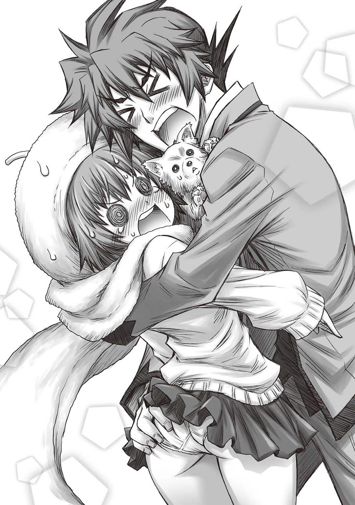
「ああ、ようやくぼくは生涯の親友に巡り合えた気がするよ。真の友情ってのは、こんなにも温かくて柔らかいものだったんすね......！」
「それは友情じゃなくてマコのお尻だよ！」
涙目で暴れるマコちゃんを交えて、ぼくとグラ公は友情を確認し合う。
手足をばたつかせながら、マコちゃんはいつまでも「ひい！」だの「やだあ！」だの叫んでいた。やはり男同士の友情というものは、女の子には理解されないものなのだろう。残念なことだ。
「いいからもう、離してええええっ！」
スキンシップを繰り返したことで、ぼくとグラ公はついに永遠の友情を誓い合うまでになっていた（もっともその頃には、マコちゃんはぐったりと床に膝をついてしまっていたのだが）。
「ううう......汚された......。もうお嫁にいけない......」
「あはは、マコちゃんはナイーブだなあ。ちょっとお尻や太ももをまさぐられたくらいで。そこはやっぱ、日々セクハラを軽くいなすお姉ちゃんを見習うべきっすよ」
「そのセクハラの元凶が開き直らないでっ！」
頰を赤らめつつ、マコちゃんがぷいっと顔を背けた。怒った顔はお姉ちゃんそっくりだ。ちょっと可愛い。
「だいたい純平さんは――」
と、彼女が文句を言いかけたそのときだった。
がたり、とエントランスのほうから何かの物音が聞こえてくる。
「.........!?」
ぼくとマコちゃんはとっさに顔を見合わせ、押し黙った。明らかに、ひとの気配がする。
だがこんな真夜中に、めちゃくちゃに荒らされた無人のファミレスを訪れる客なんているはずがない。泥棒だって敬遠するだろう。
入ってくる者がいるとすれば、彼らくらいのものだ。
「......それでトーコ。その食堂荒らしってのは、本当にこのファミレスにいるのかい？」
「はい。奥のほうから微弱な妖力を感じます。数がひとつではないのが少し気にかかりますが」
「ふうん、仲間でも連れてきたのかな。まあ、俺たちの敵じゃないだろうけど」
フロアのほうから聞こえてきた声は、聞き覚えのあるものだった。
「も......もう来ちゃったの!?」
「伯道だけじゃなくて。トーコさんまで一緒っすか......！」
ぼくたちは慌てて厨房の戸口に駆け寄り、フロアのほうをそっと覗き見る。
黒ずくめの長身の青年と、猫耳コスプレの女の子のふたり連れ――見間違いようもなく、あの伯道とトーコさんである。彼らは今まさに、破壊された自動ドアをくぐって店内に入ってこようとしているところだった。
「や、やばいっすよ！ 早く隠れなくちゃ！」
もし彼らに見つかりでもしたら、闇討ちをする以前の問題である。マコちゃんは実家に強制送還間違いなしだろうし、チワワ妖魔は魔滅執行されてしまうだろう。
ぼくだって、どういう目に遭うかわからない。闇討ち計画が白日の下に晒されることにでもなったら、今度はクビですむかどうかも怪しいところだ。
マコちゃんは戦々恐々とした面持ちで、厨房をあたふたと見回していた。
「どうしよう。どこに隠れよう」
「ぎょ、業務用冷蔵庫とか？」
「あんな狭いとこムリだよ！ 寒そうだし！」
「ふたりでぴったり密着すればいけないこともないっすよ！ 多少寒くてもほら、肌と肌で温め合えば......」
「そんなのぜったいイヤ！」
小声で言い合っている間にも、トーコさんと伯道はだんだんこちらに近づいてくる。
ぱりん、ぱりんと散乱したガラスを踏みしめる彼らの足音は、さながら死刑までのカウントダウンのようである。
「とはいえ、他に隠れる場所なんて思いつかないし......」
そのときふとぼくは、足下から向けられる熱い視線に気がついた。
例の羽つきチワワが、ぼくのズボンの裾を小さな口でくいっと引っ張っていたのである。
「え、グラ公？」
いったい何だというのだろう。チワワのつぶらな瞳が、まるで「心配するな、オレに任せろ」と言っているようにも思える。
マコちゃんが何かを思いついたのか、ぽんと手を叩いた。
「あ、そっか......！ 純平さん！ ここはグラちゃんの出番だよ！」
「え、なに？ どういうことっすか？」
「いいから！ 早く手を出して！」
言いながら彼女は、チワワの口元に手のひらを差し出す。
他にどうしようもない状況なのだ。ぼくもマコちゃんに促されるまま、見よう見まねで手を出してみることにした。
それを見たグラ公は満足げに口を開くと、おもむろに、「かぷり」とぼくたちの指先に嚙みついたのである。
まあ、嚙まれたといっても痛みはない。所詮はチワワの甘嚙みなのだ。
いったいこれに何の意味があるんだろう――。マコちゃんに尋ねようとしたのだが、それは不可能だった。
それより早く、彼女が厨房にやってきてしまったのである。
「そこにいるのはわかっていますよ」
心臓が鷲づかみにされそうなくらい冷たい声色が、厨房に響いた。
トーコさんだ。魔滅社のエースが、いつものように魔滅業務を執り行うために、ぼくたちの前に姿を現したのである。
非常灯の淡い光が、彼女が手にする草薙の刀身を照らし出した。
周囲を睥睨する彼女の凜々しい姿は、いつにもまして恐ろしいものに思える。
なにせ今のぼくは伯道を狙う暗殺者――すなわち、トーコさんの敵に他ならないのだ。あの刀で斬られたとしても、文句は言えない立場なのである。
――ひいっ......!?
怯えのあまり、ぼくは悲鳴すら口に出すことができなかった。失禁していないのが不思議なくらいである。
味方であればこのうえなく頼りがいのある先輩でも、敵に回すと恐怖の対象でしかない。毎晩魔滅執行されている妖魔の気持ちが、今少しだけわかった気がする。
威圧感バリバリすぎっすよ、トーコさん。
「............」
無言のまま、トーコさんがこちらへゆっくりと歩を進めた。
ヤバイ。あの無表情は完全に怒っている。彼女はキレればキレるほど真顔になるのだ。
まあ確かに、ぼくは出勤停止中の身なのだ。そんな立場で現場に乗りこんでいる時点で、彼女の怒りを買ってもしかたがないのかもしれないのだが。
――あわわわわ......！
どう言い訳したものかわからないまま、ぼくは額を床にこすりつけた。迷ったらまず土下座。これは座右の銘だ。
だが、
「おかしいですね、妖魔がいない......？」
トーコさんは訝しげな顔で、首を傾げていた。
どういうことなのだろう。まるでぼくたちの姿など視界に入っていないかのように、彼女はきょろきょろと周囲を眺め回していたのである。
「間違いなくこの近くに妖力反応があるのに......。どこか他の部屋に隠れているということなのでしょうか」
猫耳をぴこぴこさせるトーコさんに、ホールから声がかけられた。
「化粧室と清掃用具入れにはいないみたいだ。厨房にもいないのか？」
「そうですね。見つかりません」
「そうか......。じゃあ、一緒にゴミ捨て場のほうを調べてみるか」
伯道に「わかりました」と告げ、トーコさんは踵を返した。彼女はどこか腑に落ちないといった面持ちで、そのままフロアに戻っていく。
「ど、どうなってんすか、こりゃ......」
とりあえず危機は脱したようだが、自分でもさっぱりわけがわからない。どうしてトーコさんは、目の前にいたぼくに気がつかなかったのだろう。
「グラちゃんのおかげだね」隣のマコちゃんが、小声で耳打ちした。「グラシャ＝ラボラスは、透明化の力を持った妖魔なんだよ。自分が消えるだけじゃなくて、その能力を人間に付与することもできるの。マコと純平さんはこの子に嚙まれたおかげで、ちょっとの間だけ透明人間になってるんだよ」
「へえ、透明人間......」
頷きつつ、自分の手のひらとマコちゃんの顔とを見比べてみる。
見た感じとくに変わった部分はないが、そういえばなんとなくうっすらと、存在感が希薄になっている気もする。ぼくたちがお互いをなんとか認識できているのは、グラ公に嚙まれた者同士だからなのだろうか。
「お前、小っちゃいくせになかなか機転が利くじゃん」
舌を出してお座りしているグラ公の頭を、よしよしと撫でてやる。
さすがは心の友である。こいつがいなければ、今頃ぼくはどうなっていたことか。
「考えてみれば、透明化なんてまさに闇討ちにうってつけだよね。伯道がひとりになったところを見計らって、後ろから襲ってやればいいだけなんだから」
マコちゃんが、右手小指に巻かれた白い糸に目を落とした。確かに透明化したまま忍び寄れば、反撃を受けることなくヤツを絞め落とすことができるかもしれない。
「よし、このまま後ろから忍び寄って、さくっとやっちゃおう」
マコちゃんがニヤリ、と微笑む。
しかし、ぼくの頭の中にあったのはまったく別のアイディアだった。
「透明化か......。つまりこの力さえあれば、今まで思い描いてきたあんなことやそんなことが、好き放題にできちゃうってことっすよね」
透明化......それすなわち、何をやっても許される魅惑の能力。
階段の下に待機しなくても堂々とスカートの中を覗けるし、女子更衣室や女湯にすらフリーパスで入れてしまう。ぼくの長年の欲望を充足させるには、まさにうってつけの能力だと言えよう。
「おお、そうだ！ これならもしかして、気づかれずにトーコさんの太ももに頰ずりすることだって可能なんじゃないのか......！」
「じゅ、純平さん!? なに言ってるの？」
おもむろに立ち上がったぼくの足を、マコちゃんがつかんだ。
「せっかくあの伯道を倒す絶好の機会なのに、バカなこと考えないでよ！」
「バカなことなんかじゃないよマコちゃん。男には、理屈抜きで動かなければならないときがあるんだ」
「はあ？」マコちゃんが口を半開きにする。「この状況で!? わけわかんないよ!?」
だが、そんな顔をされても無駄だ。今のぼくには止まることなどできやしない。
「世間の青少年が欲してやまない三大超能力を知ってるかい？ そう。『時間停止』と『洗脳催眠』、そして『透明化』だ。これは、そのうちひとつを手に入れた者の責務なんだ。ぼくは日本中の青少年の代弁者とならねばならないんだ！」
マコちゃんの手を振りきり、ぼくは厨房の入口へと駆けだした。
「ちょ、ちょっと!?」
マコちゃんの声を無視して、戸口からフロアの様子を窺う。
トーコさんは伯道に先導され、職員用の勝手口の前で何か話しこんでいる様子だった。背後を警戒している様子はない。
彼女の赤いマントの裾から、まるでぼくを誘うような白い絶対領域がのぞいている。
そうだ。今こそあの禁断の聖域に触れうる、今世紀最大のチャンスなのだ......！
（よ、よし、落ち着け純平。気づかれないように忍び寄るんだ）
低い姿勢でこそこそと、トーコさんの背後に近づいた。
暗闇の中、音を立てないよう慎重に歩を進める。興奮しているときこそ、頭はクールに保たねばならないのだ。ここが勝負どころである。
倒れた座席や観葉植物を注意深く迂回しつつ、フロアの反対側へ。
透明化の恩恵なのだろう。ぼくはいっさい彼女たちに発見されることなく、勝手口の前にたどりつくことに成功した。
（おおっ......なんというアングル......！）
トーコさんのほぼ足下に位置取り、スカートを覗き見上げる。
斜め下六十五度。絶対領域を愛でるための理想的なアングルだ。
「伯道さん。やはり外に妖魔の気配は感じません。もっと中を調べてみるべきでは？」
「ふむ。トーコがそう言うなら、そうなのかもしれないが......」
伯道とトーコさんが、真剣な面持ちで魔滅対象の行方を議論していた。
こんなに近くにいるというのに、彼らはまったくぼくの存在に気がついていない。透明化万歳だ。マジですげえ。
ぷるんと張りのある極上の太ももを目の前にして、ぼくは歓喜に打ちふるえた。
（憧れのトーコさんの太ももを、まさか目と鼻の先で拝むことができようとは......）
しかも心なしか、いい匂いがするではないか。フレッシュでミルキィな、そこはかとなく甘い香気を感じる。ああ、これが女の子の香りなのか。
（前にトーコさんの身体を乗っ取ったときには、じっくり味わうことができなかったっすからね......。よし、せっかくだから香りも十分に堪能しておこう）
すううううう、はああああああ、と深呼吸。
肺の中に、トーコさんの纏う素敵な芳香が染みわたる。はあ、なんたる夢気分。伯道を闇討ちしに来たことなど、すっかり忘れそうになってしまうくらいだ。
（さあて、そろそろメインディッシュにいきますかねえ）
至高の絶対領域を直接味わうべく、ぼくはそっとトーコさんの脚に手を伸ばした。
いったいあれは、どのくらい柔らかいんだろう。どのくらい温かいんだろう。あれに触れたら、ぼくはいったいどうなってしまうんだろう。
さまざまな思考が脳内で渦巻き、ぼくはごくりと生唾を飲みこむ。
そしてついに、ぼくの指先が柔肉に触れようとしたそのとき――
「――純平くん？」
ぼくの手首は、がっちりとつかまれてしまっていた。
しかも、当のトーコさん本人の手によって。
「アレッ!?」
「さっきからどうも妙な気配がすると思っていたのですが......そうですか。純平くんの仕業でしたか」
「え!? な、なんで!? どうしてトーコさん、ぼくの姿が見えるんですか!?」
彼女の瞳は、まっすぐにこちらを見下ろしている。実に冷ややかな、ゴミ溜めに湧いた蛆虫を見るような視線だった。
「どうしてもなにも、それだけ邪悪な気配を漂わせていればさすがに気づきますよ」
言われて自分の身体を見る。なんの変哲もない手足に、見慣れた男子制服――先ほどまでは確かに消えていたはずのそれらの存在感が、今でははっきりくっきり知覚できているではないか。
「そんな......！ しっかり透明になってたはずなのに」
トーコさんに腕をつかまれたことで、透明化がキャンセルされてしまったということか？ なんてこった。無敵のはずの能力が、こんなに簡単に破られてしまうなんて。
「なるほど、透明化ですか」トーコさんが納得したように頷いた。「どこから手に入れた力なのかは知りませんが、それでセクハラをしようとしたのが運の尽きですね」
「あ、いや、セクハラだなんてそんな。滅相もありませんよ？」
慌てて目を逸らして誤魔化そうとしたのだが、この名探偵には全てお見通しのようであった。トーコさんは額に手をやり、ため息まじりに首を振る。
「いくら姿を消したところで、強い気配というのは隠せないものです。透明化など、所詮あなたのような下心を隠しきれないケダモノには使いこなせない力なんですよ」
「ま、マジっすか......」
がくり、と頭を垂れる。儚くも夢は破れ散ったのだ。
トーコさんに見つかってしまったことよりも、グラ公の能力でやりたい放題ヒャッホウする夢が閉ざされたことのほうが、今のぼくにはダメージが大きかった。
伯道がぼくの前にしゃがみこみ、ニコリ、と微笑みかけてきた。
「純平くん。その透明化を操る妖魔というのが、例の食堂荒らしなのか？」
「あ、いや、それはその」
「その顔はビンゴだな」
なんということだ。一瞬でカラクリがバレてしまった。
トーコさんに腕を捻りあげられて身動きができないうえに、こうまであっけなく共犯者の存在を明るみに出されてしまうとは。これではもう闇討ちどころではない。大ピンチである。
草薙の柄を握り直し、トーコさんがぼくに目を向ける。
「さて、出勤停止処分中のはずの純平くんがどうしてここにいるのか。そして、魔滅対象であるはずの妖魔の能力をなぜ使用していたのか......。色々と面白い話が聞けそうですね」
「あわわわ......あの、できればその、穏便に......」
「わたしだって、この草薙をあなたの血ごときで汚したくはありません。あなたが穏便にすませたいのなら、どういう態度をとればいいかわかりますね」
ぼくの首筋に、草薙の刃があてがわれる。
これはもう、あからさまな脅迫だった。この場を逃れるすべは、もはや真実を吐露すること以外にないだろう。
「えーと、ですね。実はとある女の子に『一緒にあの伯道っていけ好かないクソ野郎を暗殺しようＺＥ☆』って誘われちゃいまして」
「暗殺？」
トーコさんが眉をひそめる。
「その、ぼくはやめたほうがいいんじゃないかなあって言ったんすよ。でもその子がけっこう強引だったもんでね？ こうしてぼくも一緒に隠れ潜むことになっちゃって。......ええもう、暗殺なんてするつもりは一ミリたりとてなかったんすけどね！ 少なくともぼくには！ いや、ホントホント！」
ぼくも命は惜しいのだ。事実を多少脚色することくらい、許してもらいたい。
「ははは、この俺を暗殺か」伯道は、なぜか楽しそうに鼻を鳴らした。「面白いことを言うじゃないか。で、その女の子ってのは誰なんだい」
「実はそれが、トーコさんの――」
と、ぼくが口走った瞬間だった。
「うぐえええっ!?」
急遽、ものすごい力で首が絞めつけられる。圧迫感のあまり、ぼくはそれ以上何も口にすることができなくなってしまった。
トーコさんが、突然もだえ苦しみだしたぼくに不審な目を向ける。
「純平くん？」
返事どころか、呼吸すらできない。それどころか首への圧迫はさらに増し、このまま引きちぎられてしまうのでは、と思わせるほどの締め方だった。まるで見えない糸でも括りつけられ、後ろから思いきり引っ張られているような――そんな感触である。
え、糸ってまさか。
「仮病でも使って誤魔化すつもりですか？ そんな見えすいた噓は――」
と、トーコさんが、握っていたこちらの手を離したその瞬間。
「ひぎいいっ!?」
驚いたことに、ぼくの身体は、首から勢いよく後方に引きずられてしまったのである。
前に路地裏に連れこまれたのと同じような状態だった。
この荒っぽい首絞め、間違いなくあの子の仕業だろう。
「おい、純平くん！」
伯道も驚いた顔をしていたが、ぼくの身体は引きずられて止まらない。ふたりから引き離されるように、なすすべもなくフロアの床を牽引されていく。
「あがっ......ちょ......んげえっ......!?」
テーブルや椅子の足に激突するのが地味に痛い。あまりにもひどい仕打ちである。なんだってぼくがこんな目に。
入口近くまで引きずられたところで、ようやく止まる。だがその頃にはもはや、ぼくは口から泡を噴き、床で身悶えるだけの存在になっていた。
「げほっ！ ごほっ！ マ、マコちゃ......どうして......」
「もう！ 純平さんがペラペラしゃべっちゃうからでしょ!?」
暴虐を行った張本人は、威圧的にぼくを見下ろしていた。片手でチワワを抱きながらも、烈火のような怒りをその瞳にたたえている。
「アホみたいな理由で勝手に捕まったあげく、速攻で味方の情報を売ろうとするなんて、呆れてものが言えないよ！ どこまでゲスなら気がすむの!?」
「ご、ごめんなさい......ぼくも命が惜しかったんです......」
「ごめんですんだら魔滅社はいらないでしょ！」
叫びつつ、彼女は糸の絡まった右手を思いっきり振りあげた。
「あぐぐぐぐ!? やめ、苦し......!? い、糸引っ張らないで!?」
裏切りに対する制裁は、かくも苛烈なものか。さすがマコちゃん、容赦がない。
「――その女の子が、俺を暗殺しようってお嬢さんかい？」
通用口側から、バリトンの効いた落ち着いた声が聞こえてきた。
伯道だ。ぼくが口を滑らせてしまったことで、マコちゃんの存在もこの男に気づかれてしまった。いったいぼくたちをどうするつもりなのか、男は両手をポケットに入れたまま胡散臭い笑みを浮かべている。
「魔滅対象の妖魔も一緒か。なんだか、ずいぶんと可愛らしい子たちだね」
「伯道......！」
マコちゃんが身を強張らせ、ひっつめ髪の青年を睨みつける。彼女の視線には、深い憎悪の念が籠っているのが見てとれた。
伯道はくすりと笑みを浮かべ、
「君みたいなキュートなお嬢さんに、そんな怖い顔は似合わないな。よければ、何で俺を殺そうとしているのか、理由を教えてくれないかい？」
「そんなの当然じゃない。お姉ちゃんをとりかえすためだよ」
「そのお姉ちゃんというのは――」
伯道が尋ねるより早く、彼の背後にいたトーコさんが口を開いていた。
「え......？ マコ？ あなた、どうして？」
久方ぶりの姉妹の対面だからなのか、トーコさんは驚きに目を見開いていた。
「こ、こんなことって......。マコがここにいるわけが......」
あれ？ でもトーコさん、これはちょっと驚きすぎではないだろうか。顔面は蒼白だし、喜びの感情はいっさい見られない。まるで石にでもなってしまったかのように、完全に硬直しているのだ。感動の姉妹対面にしては、どこか普通じゃない。
マコちゃんが、じっと姉の瞳を見すえた。
「だから言ってるじゃない。その男を殺して、お姉ちゃんを神凪の家に連れもどすの。昔みたいに、一緒に暮らすために。......そのために、マコは十六夜市に来たんだよ」
「え、えへへ。そうなんすよ、トーコさん。ぼくはそんな姉想いなマコちゃんに、ちょっと手を貸そうとしただけなんです。いうなれば、人助け的な？ ええとその、情状酌量の余地はあるっすよねえ？」
しかしそんなぼくの釈明も、今のトーコさんの耳にはまったく届いていないようだった。眉を吊り上げる妹の姿を見て、彼女は目を白黒させている。
「ありえない......。こんなのありえません......！」
「ありえないって、どういう意味っすか？ そりゃまあ、シスコン妹が姉の恋人を抹殺にやってくるなんて普通じゃないかもしれませんけど――」
「違います。そういうことじゃないんです」
「だったらどういうことなんすか？ なんでトーコさん、そんなにマコちゃんを見て驚いてるんです？」
だって、とトーコさんがぼくを見つめる。
「この子がここにいるわけがないんです......！ だってわたしの妹は――神凪茉子は、もう一年も前に亡くなっているんですから！」
「は？」彼女の言葉に、ぼくは耳を疑った。「亡くなっている？ マコちゃんが？」
ぼくの傍らでマコちゃんは、眉根を寄せて姉のほうをじっと見つめている。
潤んだ瞳、紅潮した頰、やや速い息遣い。どこからどう見ても、彼女は生きた普通の人間である。さっき触ったお尻の柔らかさだって本物だった。これで死んでるだなんて、いくらなんでも冗談がすぎる。
「ま、またまたー。んなわけないじゃないっすか。いくらお姉ちゃんでも、妹に言っていいことと悪いことがあるっすよ？ ね、ねえマコちゃん」
しかし当のマコちゃんの表情には、怒りの色も驚きの色も見られなかった。ただ悲しげに眉根を寄せ、じっと姉のほうを見つめている。
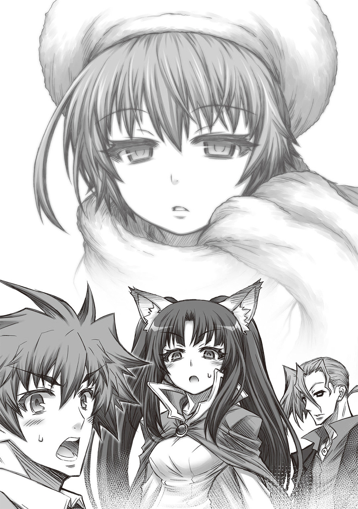
「そっか......うん。やっぱりそうなんだ。薄々はそんな気もしてたけど......マコ、死んじゃってたんだ」
「え？」
「そうだよねー......。今思えば、マコがなんとなくお姉ちゃんに会いづらかったのも、心のどっかでそれをわかってたからなのかも」
「マ、マコちゃん？」
「避けてたからアレだったけど......面と向かってお姉ちゃんに死人だって言われるのは、やっぱり辛いもんだね」
何がなんだかさっぱりわからない。マコちゃんが死人？ なんだそれ。
呆気にとられているぼくに、トーコさんが口を開いた。
「わたしを追って、マコが十六夜市にやってきたのがちょうど一年前。そのときあの子は、不幸にもとある事故に巻きこまれてしまったのです」
「事故って......？」
「それは――」と言いかけたトーコさんだったが、すぐに口を閉じた。「やめておきましょう。思い出すことさえ痛ましい事故です」
そこで彼女はぼくを見て、なぜか少し悲しげに眉根を寄せた。
いったい一年前に何があったというのか。トーコさんに出会ってせいぜい半年ちょっとの自分には、当時の状況などまったく想像ができなかった。
「とにかくわたしが再会したとき、あの子はもう物言わぬ身体に成り果てていました。そうです。わたし自身が亡骸を葬ったのですから間違いありません」
「お姉ちゃん......」
悲痛な表情を浮かべる妹に向き直り、トーコさんが毅然と告げる。
「だからおかしいんです。あの日のマコと同じ服装、同じ髪型――。表情だって、口調だってわたしが知るあの子とまったく同じ。こんな子がここにいるなんて、ありえないことなんです......！」
一体全体、これはどういう状況なのだろう。トーコさんのシリアスな雰囲気からすれば、冗談を口にしているとも思えない。
とするとやはり、彼女の妹――神凪茉子は死んでいるということなのか。
ならば、ぼくを引きずり回すこの少女はいったい何者なのか、という話になる。正直、理解の範疇を完全に超える展開であった。
「じゃあなんすか？ もしかしてこの子、幽霊だとでもいうんすか？ 死んだ人間があの世からよみがえってくるなんて、ホラー映画じゃあるまいし」
「よみがえってくる、ですか」
トーコさんはそこで、何かに気づいたように顔を上げた。
「そう......ですね。純平くんの言うとおりかもしれません。信じたくはありませんが、この子は、おそらく――いや、間違いなく〝黄泉返り〟なのでしょう」
先輩の信じられない発言に、ぼくは「は？」と耳を疑った。
だが傍らのマコちゃんは、どういうわけか真剣な面持ちでじっと姉を見ている。
なんだこの空気。理解できないぼくがおかしいのか。
「い、いやいや！ 死人が生き返るなんて、んなのどう考えてもアンビリーバボーじゃないっすか。信じられるわけありませんって！」
「あなたがそれを言いますか、純平くん」トーコさんが首を振った。「死んだ人間が生き返るはずがないなら、あなたの存在はなんだというのです」
「あ」
言われてみればそのとおりだった。ぼく、早池峰純平は動く死体だったのである！
「似たようなもの......というよりは、現象の根源は完全に同一でしょうね。あなたが死体のまま動いているのも、マコが黄泉返ったのも、同じ妖魔の力です」
「同じ妖魔......？」
なんだ？ いったいこれはどういうことなのだ？
話についていけてないのはぼくだけなのかと、横目で黒衣の青年を一瞥してみると、
「そうか。なるほど――〝冥府の王〟か」
伯道は、なにやら訳知り顔で頷いていた。
「命を落としたはずのトーコの妹がここにいる。つまりは死者蘇生――〝反魂の法〟というわけだ」
「状況的には、そうとしか思えません」
トーコさんは声のトーンを落とし、そう呟いた。
口調こそいつもの冷静なものだったが、明らかに今の彼女には動揺が見受けられる。いったい何がどういうことなのだろう。
伯道はぼくを一瞥し、相好を崩した。
「ははは！ やはり、件の王は今も存在しているというわけだな！ 十六夜市に来れば何か情報をつかめるとは思っていたが、まさかこんな形でアタリを引くことになるとはね」
「すみません伯道さん」トーコさんが頭を下げる。「〝冥府の王〟について隠していたのは謝ります。後ほどちゃんと説明させてください」
死者蘇生、反魂の法、そして〝冥府の王〟。彼らが言っていることはまるでちんぷんかんぷんだった。ある意味、先日のオフィスの雰囲気以上の疎外感である。
「あのー、誰かわかりやすく説明してくれるとありがたいんすけど......」
「おいおい、何を言っているんだ早池峰純平くん」
伯道が鼻を鳴らした。
「状況から察するところ、器は君なんだろう？ つまり、反魂の法によってこの少女を蘇生させたのは君だ。そんな君に、いまさら説明することなど何もないよ。むしろ俺のほうがいろいろ教えてほしいくらいだ」
ウツワ？ マコちゃんを蘇生させた？ コイツはいったい、何を言っているんだろう。
「ああ、もうわけわかんねえ......」
もはや考えてもしかたがなさそうなので、ぼくは大人しく、首を絞められ倒れた体勢のまま、ローアングルからマコちゃんの可愛らしい下着を見守る作業に戻ることした。
そんなぼくの顔面を踏みつけながら、マコちゃんが呟く。
「うん。覚えてる......。心臓を貫かれる嫌な感触。胸から噴き出す血の生温かさ。だんだん寒くなって暗い所に落ちていくあの感覚――。マコ、死んじゃってたんだね」
「マコちゃん......？」
「どうして死んだはずのマコがここにいるのか、なんで今までそのことをすっかり忘れてたのか――ぜんぜんわかんないけどさ。もうべつにいいんだ、そんなことは」
ベレー帽を被りなおし、少女は仇敵の青年に目を向ける。
「感謝、しなきゃね。理由はどうあれ、もう一度お前を殺すチャンスに恵まれたんだから」
「俺を殺す、ね......。殺意自体は生前から抱いていたってわけか。怖いもんだね」
伯道が薄く笑みを浮かべた。
「そういえば、俺を狙う理由をまだ聞いていなかったな。反魂のお嬢ちゃん、どうして君は生き返ってまで、俺を殺そうと狙っているんだい？」
「お前がマコのお姉ちゃんを盗ったからだよ！」伯道に指をつきつけ、マコちゃんが叫んだ。「お前さえいなければ、お姉ちゃんはずっとマコのそばにいてくれたんだ！ だから殺す！ 殺してお姉ちゃんを取り戻す！」
「さて、俺には何のことかよくわからないが」
伯道は少し肩をすくめただけで、マコちゃんの怒気を受け流してみせた。
この男、自分がトーコさんの家出の元凶だというのに、少しも悪びれた様子がない。
あれか、生粋のプレイボーイというヤツか。自分のせいで女がどう堕ちようと、知ったこっちゃないとか言っちゃう系のヤツか。
ぼくは身体を起こし、伯道を睨みつけた。
「最低の男っすね、あんた」
「いや、君にだけは言われたくないな。純平くん」
蔑むような視線で、ヤツはぼくを見下ろした。やはり不愉快な男である。
伯道は「さて」と呟くと、ジャケットの懐から紙片の束を取り出した。それぞれに五芒星の描かれた、折り紙サイズの霊符である。数十枚ほどはあるだろうか。
「器の少年と、反魂の少女――君たちが〝冥府の王〟の重要な手がかりである以上、見逃すわけにはいかなくなった。そこの犬妖魔ともども、大人しく投降してはくれないか」
「投降しろ？ バカにしないでよ！ マコは、本気でお前を殺すつもりなんだから！」
「すると、俺たちと真っ向から敵対するつもりかな？ 今の君たちは立派に魔滅対象だ。抵抗するなら、無傷ですむとは思わないほうがいい」
伯道が、手にした呪符を宙に放り投げた。
「急急如律令。生式の法。形代を以て式となす」
するとどうだろう。空を舞うそれらの紙片が、誰の手も借りずにぱたぱたと折りたたまれていくではないか。三角に折られ、ひし形に折られ、呪符は瞬く間に鶴の群れとなる。
間違いない。あれはこの間ぼくを寄ってたかって滅多打ちにした、凶暴な折り鶴部隊だ。
「ど、どうすんのマコちゃん。あの折り紙、見た目に反してけっこうヤバいっすよ？」
「どっちみち、こうなったらやるしかないけど――」
マコちゃんが、不安げな眼差しをぼくに向けた。
「純平さん、マコがもう死んでても......生きてる人間じゃなくても、あいつを倒すの手伝ってくれるの？」
「え？ そりゃ当然じゃないっすか。マコちゃんが生きてようが死んでようが、べつに関係ないっすよ。一緒にあいつをぶっとばそうって約束した仲なんだし」
ぼくは立ち上がり、彼女にニコリ、と微笑みかける。
「それにまあ、言ったらぼくもゾンビみたいなもんっすからね」
「純平さん......」
少しほっとしたような様子で、少女はぼくの手を握った。
ほんのり感じる手のひらの温かさからは、彼女が死者だなんてことはまるでわからない。ぼくにとってこの子は、いつもの生意気中学生でしかないのだ。
マコちゃんは抱いていたチワワを床に降ろし、こちらに目配せする。
「じゃあ一緒に腹くくろう。同じゾンビ仲間、一度死ぬのも二度死ぬのも同じだよ！」
「に、二度は死にたくないっすけどねえ」
実際、敵は本社の凄腕なのだ。しかもこの間返り討ちにされたばかりの相手である。まともにやりあったら確実に二度目の死が待っているだろう。
「マコ......」
それに敵は伯道だけではない。十六夜支社のエースもいるのだ。
「こんな形であなたと再会することになるとは驚きましたよ」
「ごめんねお姉ちゃん。マコ、目的を果たすまでは死んでも死にきれなかったみたい」
「あなたは昔から、こうと決めたら梃子でも動かない子でしたからね」
トーコさんが、少し寂しげに口元を歪めた。
「ですが、反魂の法は邪法です。ただ一時この世に舞い戻ってきただけの死者が、生者の理を犯すなど許されません。......お願いですマコ。今は大人しく退いてください。わたしはあなたをこの手にかけたくはない」
彼女はどこか迷いのある様子で、ぼくたちに剣の切っ先を突きつけた。
「お姉ちゃんにとっては、今のマコは妖魔みたいなもの――か」
右手を振り上げ、マコちゃんが叫んだ。
「それならそれでいいよ！ どう思われようと、お姉ちゃんを取り戻すことだけが今のマコの望みなんだからっ！」
彼女の武器は、その五指に巻きつく蜘蛛妖魔の糸である。彼女は右手人差し指を仇敵に向け、その指鉄砲から白い糸を弾丸のごとく撃ちだしたのだ。
だが――
「悪いがそうはいかない」
伯道が指を鳴らすと、宙を舞っていた折り鶴たちが術者の身体を守るかのように瞬時に糸へと群がった。以前にぼくの拳が止められた時と同じような光景――高速で射出された糸の弾丸は、いまや鶴の群れに阻まれて完全に無力化されている。
「そ、そんな折り紙ごときでっ......！」
すかさず第二撃を撃ちこもうとするマコちゃんだったが、
「相生相克。発火の法。火は土を生ず」
それより早く、伯道が胸の前で奇っ怪な印を結んでいた。
バリトンボイスに呼応するように、折り鶴たちが一斉に青白い炎をあげる。炎は糸を通じて瞬く間に少女の右手に燃え広がり、妖魔の糸を灰へと変えていく。
「きゃあっ!?」
突然発生した炎に意表を突かれたのだろう、彼女は甲高い悲鳴をあげた。
しかし不思議なことに、青い炎はマコちゃんの糸を焼き尽くしただけで、すぐにふっとかき消えてしまった。火傷を負うどころか、室内に延焼する気配さえない。
式神使いだかなんだかしらないが、この男、こんな魔法のようなこともできるのか。
「略式の〝神降ろし〟で行使できる妖力など、霊符の一枚もあれば事足りる」
伯道は、余裕の表情で鼻を鳴らした。
「さて、どうするお嬢さん。まだやるのかい？ せっかくの反魂の身体なんだ。死体で回収するのはできれば最後の手段にしたい。俺としてはここらで降参することをお勧めするけれど」
「バ、バカにしないでっ！」
マコちゃんが憤る。
しかし、頼みの糸も失われた今、強がってみせる以外に打つ手はなかった。他に武器になりそうなものはないし、よしんばあったとしてもあの男に通用するとは思えない。
「マ、マコちゃん。とりあえずここはグラ公を連れていったん逃げたほうが――」
「逃げるなんてムリだよ！ あいつ、ぜったいマコたちを捕まえる気だもん。応援なんて呼ばれたら、もう勝ち目はないよ！ 殺すチャンスは今しかないんだ！」
「つっても、もう手詰まりっすよ！」
羽つきチワワを抱え、背後の戸口へ向かおうと踵を返す。
しかしそんなぼくの足を止めたのは、首筋に突きつけられた剣の切っ先だった。
「残念ですが純平くん、逃がすわけにはいきません。マコの件はともかく、十六夜支社の今夜の業務は、その犬妖魔の討滅なんですから」
「トーコさん......!?」
さすがは正式な〝神降ろし〟の使い手である。化け猫の俊敏さで、音もなくぼくの背後に回りこんだのだろう。まるで気づくことができなかった。
「敵に回れば容赦はしないと前に言いましたね。わたしはもう、あなたを斬ることを躊躇いません」
その言葉には間違いなく、殺気が感じられた。常日頃から業務対象の妖魔に対して向けている殺気を、今の彼女は本気でぼくに向けてきているのだ。
「そりゃ、恋人さんを狙われれば怒って当然っすよね」
「あのひとは関係ありません。ですが、手加減や容赦は期待しないでください」
ぼくに刀を突きつけるトーコさんには、いっさいの隙が感じられなかった。不意をついて脇に逃げようものなら、その瞬間草薙で袈裟切りにされかねないだろう。
前門の伯道、後門のトーコさん。
ぼくたちにはもはや逃げ道すら残されていなかった。万事休す、というやつである。
「純平さん。お願いがあるんだけど」
隣のマコちゃんがぼくの手をそっと握り、小声で耳打ちしてきた。
「ちょっと不本意だけど、力を貸して」
「力って......ぼくに何をしろと」
「女郎蜘蛛ちゃんの力もなくなっちゃった今、頼れるのはもう純平さんだけなんだよ」
「あ、もしかして〝神降ろし〟のことっすか。いや、でも、ぼくごときの妖力が通用する場面だとは思えないっすけど」
もちろん、謙遜いっさいナシの自己分析である。
だって相手は〝ケット・シー〟を降ろした十六夜支社のエースと、魔法めいた万能霊符を使うエリート社員のコンビなのだ。たとえぼくがＡクラス妖魔だったとしても、まったく勝てる気がしない。
「そんなのわかってるよ！ でも、ゴミみたいな力でも借りないよりマシでしょ！ 今はもう、藁以下でもいいからすがりたい状況なの！」
耳元でマコちゃんがせっつく。力を借りたいとかいう割にはずいぶんな言い方だった。
それで状況が変わるとは思えないが、本人がそうしたいというならやぶさかではない。
「ま、まあ〝神降ろし〟自体は、ぼくも望むところっすけどね、うん」
〝神降ろし〟とは巫女と妖魔の口経接触――つまりキスで行われる。美少女との熱いベーゼなんてご褒美でこそあれ、躊躇する理由はまったくない。
「......ごくり」
ぼくはマコちゃんの両肩に手を置き、彼女の瞳を見つめた。
くりくりとした両目が可愛らしい。色白で小柄だし、いやもうほんと、改めて素敵な美少女である。まるで死者だとは思えない瑞々しさだ。必要にかられてとはいえ、こんな女子中学生のぷるぷるリップを堪能できるとは、ぼくはなんて幸せ者なのだろう。
「ふへへ。そんじゃ、いっただきまーす」
「あ、え......？ ちょ、何――いやあああああああっ！」
唇を触れあわせようとしたその瞬間、なぜか、ぱしん、と乾いた音が響いた。頰がビリビリと痺れている。
「い、痛ってえ!? ビンタっすか!? なにすんすかマコちゃん！」
「それはこっちの台詞だよ！ 今何しようとしたの!?」
「なにってほら〝神降ろし〟......。だからキスを」
「はあ!? 頭沸いてんじゃないの純平さん？ マコの場合は略式なんだから、右手にちょっと口づけくれればいいんだよっ！」
彼女はそう言って右手の甲を差し出した。
そんならそうと、ビンタする前に言ってくれればいいのに。ひとが悪い。
さっきからトーコさんも、刀を構えたまま怪訝な表情で首を傾げている。
「あなたたち、いったい何を......？」
「あ、いや!? べつに妹さんにムリヤリ接吻しようとか、そんなつもりはなかったっすからね!? ちょっと〝神降ろし〟の方法に互いの齟齬があったってだけで」
「〝神降ろし〟......ですって!?」
そこで急にトーコさんが目を見開いた。なんだかやけに驚いている様子だ。
「冗談じゃありません！ 純平くんの力は――！」
「もう遅いよーだ！」
トーコさんが止める間もなく、マコちゃんはぼくの唇に自分の手の甲を押し当てていた。
しかも、裏拳で殴りぬけるような勢いで、である。
「ぶはっ!?」
「はい〝神降ろし〟完了、と。......ああ、汚いもん触っちゃったな」
勝手にひとの唇を奪っておいて、ひどいことを言う小娘である。
つーか顔面がじんじんする。あんな勢いで殴られたんじゃ、マコちゃんのすべすべの手の甲の感触を味わっている暇もなかった。
「あれ、今回の〝神降ろし〟、意識は持ってかれないのか......？ 略式だからっすかね」
思い返してみれば、こないだマコちゃんが妖魔マフラーを巻いていたときにも、その力の源である蜘蛛妖魔は、瓶のなかで元気いっぱいにカサカサ動き回っていたような気がする。略式はあくまで、妖力だけを貸し与えるようなものなのかもしれない。
と、ぼくがそんな吞気なことを考えていた一方で、なぜかトーコさんは、この世の終わりが来たかのように顔を真っ白にひきつらせていた。
「そ、そんな......こんな、ことが......」
「え、どうしたんすかトーコさん。そんな震えちゃって」
「純平くんあなた、自分で何をやったかわかっているのですか？ 今のあの子の身体は、反魂の法で黄泉返った仮初の身体なんです。いわば〝冥府の王〟の妖力の結晶体だと言ってもいい。あなたはそこに、さらに〝冥府の王〟の妖力を注ぎこんだんですよ？ これがどれだけ危険なことか、わからないんですか!?」
「いや、んなこと言われてもわかんないっすけど......」
どういうことだろう。マコちゃんがその〝冥府の王〟の力で黄泉返った存在だ......というのはなんとなくわかる。さっきから話を聞いていて、それはかろうじて理解できた。
でも、どうしてぼくを〝神降ろし〟することが、〝冥府の王〟の妖力を注ぎこむことになるのだろう。これじゃまるで――。
「あ、もしかしてぼくの中にいる妖魔ってのが、その〝冥府の王〟だったり？」
「今頃わかったんですか。相変わらず理解力皆無の頓痴気野郎ですね」
イラついているのか、トーコさんの毒舌には微塵も遠慮がなかった。
「にしても〝冥府の王〟とはまた大仰な名前っすねえ......。たしか、ぼくの中にいるヤツなんて所詮は大したことない雑魚なんでしたよね」
「ええ、そうですね。純平くんの身体に封じられている限り、かの王もほぼ無力のはずです。せいぜい漏れ出た妖力で、宿主をゾンビよろしく動き回らせるのが関の山でしょう」
そう言いながらも彼女の表情は深刻だった。きょとんとする妹の顔を、眉間に皺を寄せて見つめている。
「もっとも、それを身体の外に出してしまった場合には保証の限りではありません。あれはかつての十六夜支社でさえ倒し切れなかった強力な妖魔なんですからね」
「はあ」
「何ですか『はあ』って」トーコさんが、神妙な表情でぼくを睨みつける。「いいですか、あなたが思っている以上に事態は深刻なんです。ただでさえ〝冥府の王〟の力の結晶体であるマコに、さらに同じ力を〝降ろす〟なんて、火に油を注いだようなものなんですよ!? 自分がどれだけのことをしでかしたかわからないんですか！」
どうして彼女はこんなに焦っているのだろう。ぼくにはまったくピンとこなかった。
あなたの中にいたのは〝冥府の王〟だったんです、そいつはヤバすぎる妖魔だったんです、マコに〝神降ろし〟なんてもってのほかなんです――なんてことをいまさら言われても、どうしようもないではないか。
だいたいマコちゃんもぼくもぴんぴんしてるわけだし、べつに問題ないだろう。
そんなことよりむしろ、ぼくにとってはトーコさんと伯道がふたり仲良く結託して敵に回っていることのほうが大問題であった。
「んでトーコさん。その王様が結局なんなんです？ そんだけすごい妖魔なら、このグラ公みたいに、夢あふれる素敵スキルを持ってるとかなんすか？」
「は？」
「あー、ならぼくとしては、次は洗脳催眠能力が欲しいところっすねえ。どうやっても伯道に勝てないなら、いっそトーコさんをマインドコントロールしちゃうって方向も――」
「なにを吞気なこと言ってるんです！」
頭を抱えるトーコさんを見て、伯道は「ふっ」と笑みを零した。
「意外に大物だねえ、純平くんは」
「笑いごとじゃありませんよ、伯道さん。このままではこの子たちも十六夜市も、大変なことになりかねないんですから」
ぼくがマコちゃんに〝神降ろし〟をしたところで、いったい何がどうなるというのか。
顔を青ざめさせる姉とは対照的に、妹はただ訝しげに首を傾げていた。
「なんなのお姉ちゃん。マコのこと脅かして降参させるつもり？ 言っとくけどねえ、その程度じゃわたし、ぜんぜん怖くもなんともないんだから」
「そういうことじゃないんです」妹に向きなおり、トーコさんはぴしゃりと告げた。「いいですか、マコ。このままではあなたは〝降ろし〟た純平くんの力を暴走させてしまいかねません。そうなったらもう手遅れです」
「暴走？ 手遅れ？」
神妙な顔で、トーコさんがこくりと頷く。
「ええ。純平くんの力は、それだけ危険なんです。下手をすればあなたは、周囲にとてつもない〝災厄〟を振りまいた挙句、十六夜市を死の世界に変えてしまう可能性すらあります。だからマコ、そうなる前に早く〝神降ろし〟を解除して――」
と、彼女が言いかけた瞬間だった。
「――うう......あ......あっ......あああああああああっ!?」
突如マコちゃんが、苦しげな悲鳴をあげた。右手で胸を押さえるようにして、その場に蹲ってしまう。
「マコちゃん!?」
「あああっ......！ はぁ......ふううぅ......んっ......！」
片手を床につき、マコちゃんは額に玉のような汗を浮かべていた。その頰は、熱にでもうかされているように真っ赤に紅潮している。
「だ、大丈夫っすか......!? 救急車とか呼んだほうが――」
「ダメです！ いますぐその子から離れて！」
しかしトーコさんの忠告は、またしても一瞬だけ遅かった。
ぼくが彼女の声に振り向こうとしたその瞬間、悲劇は起こってしまったのである。
「ぐ......はっ......!?」
背後にいた男の喉から、苦悶の声が絞り出された。
元々ダークカラーだったシャツはさらに赤黒く染まり、足下の床が鮮血の赤に彩られる。あのいけ好かない薄ら笑いは、今や男の表情からすっかり消えていた。
「は、伯道......？」
いったい何が起こったのか。まるで理解できない。
ぼくの目には、マコちゃんの右手にいつの間にか握られていた巨大な剣が、伯道の腹部を一息に貫いたようにしか見えなかった。
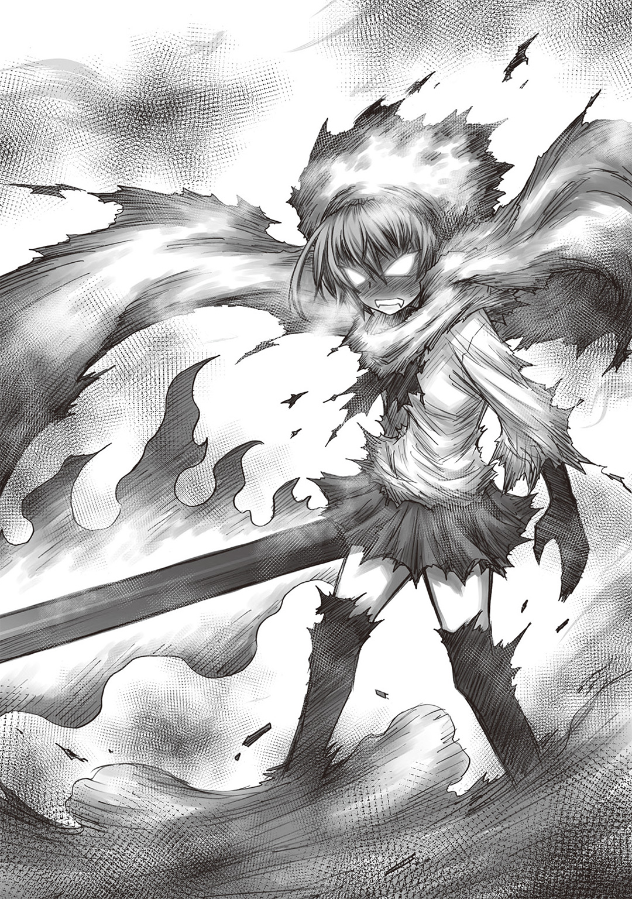
「――あ......あはは......やった......！」
マコちゃんはゆっくりと立ち上がると、伯道の身体からその剣を抜き放った。
「ふ......ぐうっ!?」
支えを失い、黒衣の青年がうつ伏せに倒れた。床一面に広がる血だまりは、彼が明らかに致命傷を負っていることを示している。
「マコ、やったよ......！ お姉ちゃんの......恋人、殺したよ......！」
はあはあと息を荒らげながら、帽子の少女は天を仰いだ。どこか遠くを見ているようなその双眸は、さきほどまでの生意気な小娘と同じ人物とは思えない。
「な、なんて......こと......」
トーコさんが真っ青な表情で、血だまりに倒れる恋人の姿を見つめていた。
「マ、マコちゃん？ なんすかその剣？ いったいどうしちゃったんすか!?」
彼女の手にした巨大な刀は、滴るような血の赤に染まっていた。
全長約二メートル近くの、両刃の長刀である。何の装飾もなく、外見上の特徴といえばただただ長いだけ。
しかしその刀身に何かとんでもなくヤバそうな何かが秘められていることは、ぼくでさえ気づくことができた。剣自体が、溢れんばかりの漆黒の妖気を纏っているのである。
近くにいるだけで、腰が抜けそうになるほど恐ろしい。
「天叢雲」
トーコさんが、苦々しげな口調で呟いた。
「あの剣は、純平くんに封じられた〝冥府の王〟の、力の一端なんです」
薄暗いレストランのホール中央で、少女が苦しげに身を悶えさせている。その手に握られているのは、見るも禍々しい漆黒の長刀だった。
「くっ......ふう......！ ふふふ......！ す、すごいよ、純平さん。なんか身体の底から、いっぱい力が溢れてくる感じ......！」
脂汗を浮かべながら、少女は口の端を吊り上げた。言葉とは裏腹に息も絶え絶えという様子である。力が溢れてくるどころか、あの妖刀によって生命力が吸われているような印象だった。あの黒い刀は、握っているだけでよくないものだ。それはぼくにもわかる。
さきほどトーコさんが言っていた「暴走」という言葉が脳裏によみがえった。
以前トーコさんの身体を乗っ取った際、満身創痍だった彼女の身体が一瞬で治癒してしまったことがある。ぼくはてっきり、エロスの神様がもたらした奇跡だとばかり思っていたが、そういうわけではなかったのだ。
「奇跡すら起こせるほどのヤバイ妖力が、ぼくの内側に収まってただけってことか......」
今思えば、あの超復活も反魂の法とやらの一種だったのかもしれない。そんなもん、使い方を間違えれば厄介なことになるに決まっている。
あの力はまずい。このままでは、マコちゃんが取りこまれてしまうおそれがある。
トーコさんも同じことを考えたのだろう。彼女は草薙を構え直し、妹へと向き直った。
「早く〝神降ろし〟を解除しなさい！ それ以上剣を握っていたら、何が起こるかわかりませんよ！」
しかしマコちゃんは、そんな姉の言葉を聞き入れようとはしなかった。
「お姉ちゃん、どうしてマコに剣を向けるの......？」
「え？」
「うう......。マコは死んだ人間だから......本当の神凪茉子じゃないから、マコのことなんてどうでもよくなっちゃったの......？」
黒い長刀――〝天叢雲〟を両手で握り直し、少女は姉の姿を見据える。
「そうだよね。今のお姉ちゃん――魔滅社の神凪瞳子からすれば、マコなんて妖魔の引き起こした怪異現象にすぎないんだもんね。ただの仕事のターゲットだもんね」
「そんなことは――」
「ないって言いきれるの？ だったらどうしてそんなに怖い顔してるの？」
妹の問いに、トーコさんは何も応えられない。目の前で妹に恋人を殺されたのだ。トーコさんだって、動揺くらいするだろう。
「やっぱり、お姉ちゃんは変わっちゃったよ」
ごほっ、と咳きこんだ彼女の口の端から、一筋の血が流れるのが見えた。
彼女の小さな身体は、反魂の妖力で形作られた仮初のものなのだ。それが、あんな膨大な邪気を発する剣を顕現させて無事ですむはずがない。
「伯道と魔滅社......優しいお姉ちゃんを変えちゃった連中を、マコはぜったいに許さない。ぜんぶ、この手でぶっ壊してやる」
刀を引きずるようにして、マコちゃんが出口へと向かう。
「何をする気なんです！」
「どいてお姉ちゃん。恋人の次は、あのキツネの女の子を殺してあげるから」
「支社長を......!?」
「それだけじゃないよ。魔滅社に関わるひとたちもみんな殺す。邪魔するヤツもぜんぶ殺す。みんな殺せば、きっとマコはお姉ちゃんと幸せに暮らせるんだ」
その声色には、どす黒い殺気が感じられた。シスコン気味の生意気娘の面影は、今やまったく残っていない。まるで何かに取り憑かれてしまったかのように見える。
「マコ、今のあなたは死に魅入られている。そんな力に振り回されるくらいなら、あなたはこの世に帰ってくるべきではなかったのです」
「そんな言い方ひどいよ、お姉ちゃん！」
巨大な長刀を、マコちゃんが横なぎに払った。
なんという剣速だろう。ぼくの目では、剣先が捉えられない。
身の丈以上の刀をこんなに早く振り回すなんて、マコちゃんのような小さな女の子の細腕では絶対にムリなはずである。これが〝神降ろし〟の暴走の結果なのか。
「ぐうっ......!?」
しかしトーコさんにも、猫の反射神経がある。彼女はとっさに草薙を縦に構えることで、かろうじてその一撃を凌いだようだ。
「と、トーコさん!?」
しかし斬撃の勢いまでは殺しきれず、トーコさんは後方へと弾き飛ばされてしまう。
床をごろごろと転がり、入り口脇の壁に激突。背中を強打し、彼女は苦痛に顔を歪めた。
「お姉ちゃんの言うことなんか聞かないよ。だって、い、今のお姉ちゃんより、マコのほうが強いんだから......！」
肩で息をしながら、マコちゃんが微笑んだ。
確かに、今の彼女は反則的に強い。〝ケット・シー〟を降ろしたトーコさんが一蹴されるなんて、前代未聞の出来事である。
しかし肉体的な強さと引き換えに、今のマコちゃんの身体には明らかに過剰な負担がかかっているようだった。呼気は荒く全身が汗ばんでおり、視線もふらふらと宙を彷徨っている。言動だっていつも以上にエキセントリックだ。
マコちゃんの心も体も、あの天叢雲とやらに支配されてしまっているのだろうか。これじゃまるで、さっきの洗脳催眠云々の冗談そのものだ。
こんなロリィな美少女を操ろうとするなんて、〝冥府の王〟はかなりの変態と見た。
さすがは〝悪戯〟の妖魔。こんなのが中にいたんじゃ、いかにぼくが紳士でもゲスの誹りを免れないだろう。そうだ。きっとぼくがセクハラ野郎扱いされているのも、きっと全部この傍迷惑な妖魔のせいなのだ――。
と、今はそんな冷静な自己分析をしている場合でもなかった。トーコさんを一蹴したマコちゃんが、そのままふらふらと店の外へ出ていこうとしているのである。
「と、ともかくこのままじゃヤバイっ......！」
今のマコちゃんは危険すぎる。このままじゃ、本当に無関係のひとたちまで傷つけてしまいかねない。
ぼくは意を決し、マコちゃんの行く手を遮るようにエントランス前へと飛び出した。
「落ち着いてマコちゃん！ 今のキミは普通じゃない！ そんなんじゃ、誰も幸せになんかなれないっすよ！」
彼女の身体を抱きとめようと、両手を広げる。
ぼくとマコちゃんは一蓮托生の同胞なのだ。ゾンビ仲間でもある。だったら身体を張ってでも止めるのが筋というものだろう。
足下のチワワ妖魔も、豹変してしまった彼女を不安げに見上げていた。
「邪魔だよ、純平さん」帽子の少女が、胡乱な眼でぼくを見つめる。「そこをどいてくれないなら......じゅ......純平さんだって、殺す、よ」
「マコちゃん......！」
今の彼女にとっては、ぼくですらただの障害でしかないのだろうか。
一向にどこうとしないぼくに痺れを切らし、マコちゃんは巨大な長刀を両手で肩に担ぎ上げた。もし今それを振り下ろされたら、一刀両断にされてしまう。
「ま、待って待ってマコちゃん！ 落ち着こう！ 落ち着いて話し合おう！」
「だ、黙って！ 話なんか、聞きたくないっ！」
マコちゃんが憎悪に顔を歪めた。
そんな妹の変貌を目の当たりにしたトーコさんが、悲痛な声をあげる。
「純平くん！ 逃げてください！」
「むむむ、ムリっす！」
べつにカッコつけているとか、そんなつもりはない。ただただ、本気で足が竦んでしまって動けないのだ。これがあの天叢雲とかいう妖刀のプレッシャーのせいなのか、ただぼくがヘタレなだけなのか、それはわからない。個人的には前者だとまだ嬉しい。
「そんなに死にたい、なら......こ、こ、殺してあげる」
その瞬間、血まみれの妖刀が無慈悲にも振り下ろされた。
一寸先は真っ二つ。あまりの死の恐怖に耐えきれず、ぼくは絶叫してしまっていた。
「いやああああああっ！ 死にたくないっ！ どうせ死ぬなら、トーコさんの太ももに挟まれて死にたかったああああああああ！」
瞼の裏に浮かぶのは、あの麗しの絶対領域だ。
――ああ、太ももさん、先立つ不孝をお許しください。
だがしかし、
「......あれ？」
一向に斬撃の痛みが訪れる気配はなかった。
おそるおそる薄目を開けて見てみると、目の前には血まみれの剣の刃。なぜかそれが振り下ろされることなく、ぼくの目と鼻の先で静止しているのである。
「えっ」
刃を押しとどめていたのは、数十羽の折り鶴の群れだ。紙製の鶴が群がるようにして、必死に刀を持ち上げていたのである。
「なに、これ......!?」
マコちゃんが歯嚙みしつつ、式神使いの男が倒れていた場所を一瞥する。
「そ......相生相克、癒身の法。土は水に克つ」
伯道が血だまりの中で、腹を押さえながら立ち上がろうとしていた。
そう。腹を穿たれてもなお、あの男はまだ死んではいなかったのである。
伯道は霊符の束を包帯代わりに患部に当て、止血をしているようだ。もしかするとあのエリート野郎、治癒の術にも長けているのかもしれない。
これ幸いとばかりにぼくはマコちゃんから離れ、トーコさんの陰に隠れる。
トーコさんの顔に浮かんでいたのは、ほっとしたような喜びの色だ。
「伯道さん、無事だったんですね......！」
「無事、とはちょっと言い難いけれどね」
青年の笑みは弱々しい。やはりダメージが大きかったのか、伯道は肩で息をしているようだった。こんな深手を負いながらぼくを助けるなんて、敵ながらニクイ真似をしてくれるじゃないか。
「ちょ、ちょっとあんた！ ぼくは助けてくれなんて一言も言ってないっすからね！」
「そんなことどうでもいい。それより純平くん。トーコを連れて早くここから逃げろ」
言いつつ伯道は、懐からさらに五芒星の描かれた符を取り出した。
その数およそ百枚。懐に入れていたせいか、すっかり血の色に染まってしまっていた。いったいこの男、それを使ってどうするつもりなのか。
「あはは......しぶといね......！ やっぱり......く、首を落とすべき、だったのかな」
マコちゃんが、刀に群がる折り鶴たちを力任せに薙ぎ払った。刀身から発せられる漆黒のオーラが、数十羽の鶴を一瞬で消し炭に変えてしまう。
自分のほうに向きなおったマコちゃんに、伯道が「ひゅう」と舌を巻く。
「さっきの意趣返しのつもりかい。冥府の王の力ってのはすごいもんだね」
「し、しに、死にぞこないのくせにっ！ こ、今度は確実に仕留めるからっ......！」
口から血痰を吐きながら、マコちゃんはよろよろと伯道に近づいていく。
彼女も伯道も、もはや半死半生の体である。このまま相対すればどちらも無事ではすまないだろう。それは火を見るより明らかだった。
「伯道さん、どうして逃げないのです！ いくらあなたでもそんな身体じゃ、天叢雲の相手をするのはムリですよ!?」
しかし黒衣の青年は、恋人の言葉に従うつもりはなさそうだった。
いまだ血の流れる腹部を押さえながら、よりにもよって彼はぼくのほうを見る。
「二十枚だ」
「え？」
伯道は、血の滲んだ霊符を掲げて言った。
「天叢雲の斬撃をいなすのに、必要な霊符の枚数は最低二十枚。さっきのでだいたいわかった」
「な、なに言ってんすかあんた!?」
「......つまり残りの霊符の枚数から考えて、あと五太刀ぶんくらいは受け止められる。これが、俺が稼げるぎりぎりの時間だと考えてくれ」
ふっと短く笑って、伯道は霊符を構える。
ようやくぼくは、この男が何をするつもりなのかがわかった。
こいつは自分を囮に、恋人のトーコさんだけでなくぼくまで逃がすつもりなのだ。
ぼくの仇敵のくせに、何を考えてんだコイツは......！
「カ、カッコつけてんじゃねえっすよ！ んなことしても感謝なんてしないからな！」
「さっさと行けよ。このお嬢ちゃんを何とかするのも、俺の仕事のうちだから」
明らかに強がりだとわかる笑みを顔に貼りつけ、伯道が告げる。
「だからトーコは君に任せた。惚れた女なら、ちゃんと守ってやれ」
そんなあまりに気障すぎる台詞に、ぼくは何も言い返すことができなかった。
顔やステータスで圧倒され、腕力で圧倒され、そして度量で圧倒される。まるで男としての格の違いを見せつけられたようだった。恋敵に身を挺して救われるなんて、悔しいなんてレベルじゃない。
マコちゃんが奇妙な笑みを浮かべつつ、再び妖刀を振り上げる。
「あはは......あははあは！ お、お姉ちゃんの恋人なんて、絶対に許さ、許さないっ！ そんなに死にたいなら、きっちり冥府に送ってやるからああああああっ――！」
彼女の瞳に映っているのは伯道だけ。今のマコちゃんには、姉の恋人を殺すことしか頭にないのだ。
「やれやれ。生き返ってまで姉を独占したいとは、君も重度のシスコンだな。禁断の関係を否定する気はないが、剣に操られて、というのはいささかいただけない」
伯道が手にした霊符を数枚、無造作に放り投げた。
血染めの五芒星が、青年と少女の間に舞う。
「相生相克、火盾の法。火は金に克つ」
伯道が素早く印を結ぶと、霊符はそれぞれ空中に浮いたまま青白い炎を上げた。浮遊する火の玉は伯道の前に集結し、直径一メートルほどの巨大な火炎となる。何度見ても、この男の技は不可思議なものばかりだ。
「もう手品は見飽きたよ！ その、火、火の玉ごと、ぶった切って、やるっ......！」
「さて、できるかな？」
マコちゃんの渾身の一撃が、大火球に向けて振り下ろされた。
だが、
「えっ......!?」
がきん、と鈍い音がして、火球が剣を受け止めた。ただの火の玉ではないらしい。
「こ、ここ、こんなの......子供だましだよっ！」
もっとも、マコちゃんだって負けてはいない。再度構えられた長刀は、先ほど以上の黒い瘴気に包まれていた。
マコちゃんはそれを今度は水平に、渾身の身体のひねりを加えて横スイングを放ったのである。
「――でえええええいっ！」
バッターボックスの打者よろしく、体重と回転の加わった横斬りが、大火球の中心をジャストミートした。
さすがの火球の盾も、この一撃には耐えられなかったのだろう。溶岩の塊が、中心から崩れ落ちるように崩壊してしまった。
散り散りになった火の粉が、元の霊符の破片となって床に落ちる。
「思ったより早く破られた、か......。まあいい」
伯道は懐から次の霊符の束を出し、身構えた。
霊符で応急処置をしているとはいえ、あの男の腹にはいまだ風穴が開いたままなのだ。あの巨大な刀を受け止めるられるのは素直にすごいと思うが、こんな調子じゃ、霊符が尽きる前にあいつの身体の限界がきてしまう。
ぼくはトーコさんのそばに走り寄り、その手をとった。
「大丈夫っすか？」
「はい。わたしはなんとか......。ですが、伯道さんが」
彼女の瞳は、フロア奥で果敢に闘う伯道の姿に向けられていた。
彼女の恋人は今、あの恐るべき力を操るマコちゃんと、たった独りで相対しているのである。これで不安にならないわけがない。
ちぇ、と小さく舌打ちしつつ、ぼくは足下にひっついてきたチワワ妖魔を抱き上げた。
「あいつ、ぼくたちに、『先に逃げろ』みたいなこと言ってましたけど」
トーコさんが無言で首肯する。
しかし恋人を見守る彼女の眼差しは、その言葉に素直に従うつもりがないということを如実に語っていた。
「ぼくも同じ気持ちです、トーコさん。ここで逃げたら負けっすよね」
もし仮にここで伯道を見捨てて逃げても、トーコさんがぼくを責めることはないと思う。
しかしもしあいつが死にでもしたら、そのことは一生トーコさんの心に傷跡として残ってしまうだろう。身を挺してトーコさんを救ったヒーローとして、トーコさんの中であいつが不可侵の存在になってしまう。
そうなれば、ヤツから彼女を奪還するというぼくの目論見が、二度と成就不可能になってしまいかねない。そんなのはダメだ。ぎゃふんと言わせるべきは、あくまで生きているあの男なのだ。ヤツの目の前で、きっちりトーコさんを奪い返さねばならない。
そのためには、この手でマコちゃんを止め、伯道を守らなければならないのである。
「マコちゃんだってほっとけない。やっぱり、ぼくたちでなんとかするべきっすよ」
伯道は今、二枚目の燃え盛る盾を生み出し、マコちゃんの剣を防いでいるところだった。
残る防御回数はあと三回。思ったよりも消耗が激しいようだ。
「しかしあの伯道さんですら、防戦一方なのです。正直、わたしでも今のマコを押さえられる自信はありません。たとえ支社長配下の妖魔を総動員して〝神降ろし〟したとしても、天叢雲を止めることはできないでしょう」
「あー......なんかヤバそうっすもんね、あの剣」
魔滅社に入って日が浅いぼくには、正直、トーコさんたちが恐れる〝冥府の王〟とやらがどれだけ危険な存在なのかはわからない。
ただそんなぼくにも、あの剣を持ったマコちゃんをなんとかするのが一筋縄ではいかないことくらいわかる。猫耳トーコさんでも伯道でも御しきれないのだ。間違いなく、これまでの魔滅業務で出会った妖魔連中とは一線を画するレベルである。
今のあの子と正面きって戦うのは、いくらなんでも無謀というものだろう。この早池峰純平、美少女にしばき倒されることに興味がないわけではないが、さすがに一瞬で身体を真っ二つなんてのは御免こうむりたい。
「ただ、唯一勝機があるとすれば」
トーコさんが、ボロボロの身体で剣を振り回す妹を見つめる。
「疲弊したところを狙って、あの子を殺すことです。幸い、あの子の体力は限界を迎えつつあります。運が良ければ、わたしでも相打ち覚悟で仕留めることができるでしょう」
「仕留めるって......なに言ってんすかトーコさん!?」
冷酷すぎるその言葉に、ぼくは耳を疑った。
しかしトーコさんの表情は真剣そのものだった。伊達や酔狂でそんなことを言っている様子は見られない。
「あの子はもう、天叢雲によってほとんど完全に意識を乗っ取られてしまっています。今のあの子の頭を占めるのは、伯道さんに対する殺意のみ。......こうなれば自分の意思で〝神降ろし〟を解除することはないでしょう。わたしたちの説得だって、受け入れてくれるとは思えません。だから――」
「殺すしかない、と？」
トーコさんは表情を変えず、首を縦に振る。
「考えうる限り、それが唯一の解決方法です。いかに〝神降ろし〟で妖力が暴走していようと、術者自体が消滅すれば問題ありません」
「問題ありませんって......。マコちゃんを殺すなんて、どう考えても大問題じゃないっすか!? トーコさんの妹でしょう!?」
「そうですね」
伯道に斬りかかる少女を見つめ、トーコさんが頷いた。凜としたその横顔には、どこか躊躇いを押し殺しているようにも見える。
「もともと死んだ人間がよみがえるなんておかしいことなんです。今のあの子を消すことに、躊躇する理由などありません」
「でも......せっかく再会したんですよ!? マコちゃんだって、トーコさんが好きでしょうがないからこういう手段に出るしかなかったわけで――」
「それがなんだと言うんですか。あの子はもう死んだんです。あなたも魔滅社の従業員なら、敵に感傷など抱くのはやめなさい」
マコちゃんは敵。トーコさんはそう言いきった。
その言葉は確かに、怜悧冷徹な十六夜支社のエースとしては正しいのかもしれない。だが、実の妹に向ける言葉ではないだろう。
「いくらなんでも、そんな言い方はひどいっすよ......」
「わたしだって、できることなら何も考えずにあの子との再会を喜びたかったですよ」
トーコさんが呟いた。
「でも、もう耐えられないんです。あの日と同じように、ぼろぼろになっていくあの子を見るのは......！」
彼女の視線の先で、マコちゃんが悲鳴のような雄叫びをあげていた。口から血の塊を吐き出し、膝ががくがくと震えている。いつ気を失ってもおかしくない状態なのに、それでも彼女は伯道の盾を打ち壊そうと必死で妖刀を振るっているのだ。
「あれは、マコじゃないんです。〝冥府の王〟が黄泉返らせた偽者にすぎないんです。だからわたしは悲しくなんてない。この剣であれを斬り捨てても、なにも悲しくなんてないんです......！」
そう言うトーコさんの声はどこか震え、目の端には、うっすらと涙が溜まっているようにも見える。
ああ、ようやくわかった。
彼女は――神凪瞳子は優しさを失ってしまったわけではない。マコちゃんを愛しているからこそ、その気持ちを必死で身体の奥底に封じようとしているだけなのだ。自分に噓をついてまで、魔滅社の社員たろうとしているだけなのだ。
「......バカですね、トーコさんは」
だからこそ――彼女の気持ちを知ってしまったからこそ、そのやり方には納得できない。あんなにお姉ちゃんが大好きなマコちゃんを、こともあろうにその姉の手で殺させるなんて、そんなバカげたことを許せるはずがない。
「わたしがバカ......？ どういう意味です」
トーコさんが顔を上げ、潤んだ瞳でぼくを睨みつけた。
「バカだからバカだっつったんですよ。あれがマコちゃんじゃない？ 黄泉返った偽者？ ......はっ、そんなの都合のいい言い訳っすよ」
「言い訳って――」
「ぷにぷにの手のひら、ほどよく柔らかなお尻、色気を感じない子供パンツ。どっからどうみても、生きてる女の子そのものじゃないっすか。あれでも偽者だってんなら、トーコさんは全国のビニール嫁愛好家に謝るべきっすね」
ビニール嫁......？ と彼女は一瞬首を傾げ、
「でも、あの子は死んだんです。あそこにいるのはあくまで妖力の結晶体で、」
「妖力の結晶体だからなんだっつーんですか。トーコさんを慕うその気持ちに、本物も偽者もないでしょう」
ホールの奥では、少女の剣が四枚目の盾を破壊したところだった。鼻血すら流し始めた彼女に、もう猶予はない。肉体的なタイムリミットが刻一刻と迫っているのだ。
「あの子は間違いなくマコちゃんです。トーコさんが大好きで、トーコさんを独占するためにやってきた生意気シスコン中学生。それ以外のなんでもないっす。......美少女に、生きてるとか死んでるとか関係ないんすよ。トーコさんだって、わかってるんでしょう」
「でも、それを認めたらあの子を、妹として斬らなければならないんですよ......!?」
彼女はそう呟いて、剣の柄をぎゅっと握りしめた。
トーコさんの気持ちはわからないでもない。愛する恋人か、死んだ妹か。どちらを天秤の皿の上に残すか、苦渋の決断を迫られているのだ。
だが、本当に選択肢は二者択一なのか。第三の道は他にないのか。
真面目すぎる彼女は、時として凝り固まった思考にとらわれてしまうことがある。こういうときは、ふだんクズだゲスだ頓痴気だとバカにされているぼくの出番だ。
「マコちゃんも助けるし、伯道も助ける。そのためにはマコちゃんの意識を、伯道に対する殺意から解放してやりゃいいわけですよね。そうすりゃ、自力で〝神降ろし〟を解いてくれる可能性がある、と」
頭を抱えるトーコさんの肩に、ぽん、と手を置く。
「まあ、そういう作戦ならなきにしもあらずっすよ」
トーコさんが「え？」と驚いた表情で顔を上げた。
「作戦って、どういうことです」
フロア奥の攻防は、まさに佳境に入っていた。伯道の盾ももう五枚目。後がない。
マコちゃんのほうも、剣を握ったまま時折びくびくと痙攣のような発作を起こしている。お互い、立っているのもやっとといった状態に見える。
「すみませんトーコさん、説明してる時間はないっす。話を合わせてください」
「話を合わせる？ どういうことです？ 非常に嫌な予感がするのですが――」
トーコさんの不安げな問いをスルーし、ぼくはマコちゃんに向き直った。
両手を口元に添え、その場で大声を張りあげた。
「マコちゃん！ 聞いてくれ――！」
だがやはり、帽子の少女は振り向こうとしない。彼女の意識は完全に、伯道の盾を打ちこわすことに向けられているようだった。
もちろん、そんなことはわかっている。彼女に聞いてほしいのはここからだ。
「トーコさんの恋人ってのは、そこでボロ雑巾みたいになってる男なんかじゃない！ 実はこのぼく、早池峰純平なんすよ！」
「はあ？」
マコちゃんがぴくり、と動きを止め、ぼくに顔を向けた。
「な......なにを、言ってるの。頭おか、おかしいんじゃない......!?」
「べつに妄言とかじゃないっすよ？ だって、ほら、その証拠にこんなこともできちゃうんすからね！」
そこでぼくは、傍らのトーコさんに向き直り、その腰を抱きよせるように手を回した。
当の彼女は呆気にとられたように、ぽかん、とした表情を浮かべている。
「純平くん、あなたいったいなにを――」
何かを言いかけたトーコさんの唇を、ぼくは塞いでやることにした。
もちろん、自分の唇で。
「はむっ......!? ちょ、んむむむむむ―――!?」
うおおおお！ これが念願の、トーコさんとの接吻！
逃れようとする猫耳少女の身体を、両手でしっかりと押さえつける。こんなチャンス滅多にないのだ。逃がすわけもない。
「んちゅ......れろ......むうう!? や、ちょっと......!? ひゃむうっ!? はむむう!?」
うるおい豊かなトーコさんの唇は、彼女の身体同様にしっかりと柔らかかった。舌同士が触れ合う不思議な感覚も、鼻息のこそばゆさも、思いきりブーツの底で踏まれた足の痛みも、もう全てが最高である。最高としか言いようがない。
ああ、素晴らしきかな。これがトーコさんのキッスの味。
早池峰純平、十七歳。生きててよかった！
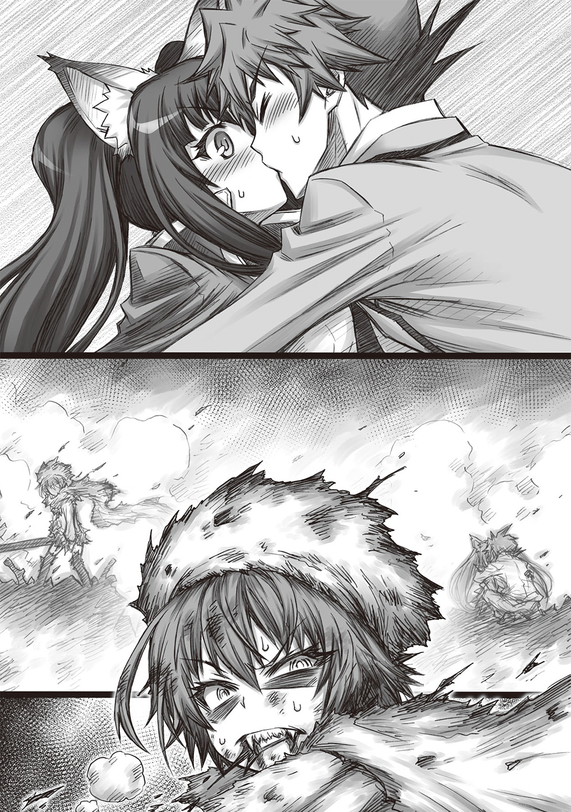
「......ぷはあっ！」
憧れの先輩の口腔内をひとしきり探索し、一息つく。
これはヤバイ。病みつきになりそうだ。えも言われぬ感動に全身が震える。
「じゅ、純平くん！ な、なな、なんて......なんてことを!?」
唇をごしごし拭いながら、トーコさんがものすごい形相でぼくを睨みつけている。
顔がゆでダコのように真っ赤になっているのは、ぼくの情熱的なキスを実は本心では喜んでいたから......というわけではなさそうだった。
あ、やばい。めちゃめちゃキレてますね、これ。
「お、女の敵！ わいせつ魔！ あなたというひとは、ほんとにいったい何を考えてるんです！ 脳みそに蛆でも湧いてるんですか!?」
「ま、まあまあ。べつにいいじゃないっすか。ぼくとキスするの、はじめてってわけでもないでしょうし」
もっともそのファーストキスの記憶は、ぼくはまったく覚えていなかったけれども。
「そういう問題じゃありません！ あなたごときに唇を奪われたことが問題なんです！」
「でもほら、妹さんには効果抜群みたいっすよ？」
フロア奥で、ぽかんと口を半開きにしているマコちゃんを指す。
帽子の少女は長刀を握ったまま、虚ろな目でぼくを見ていた。
「う、噓だ噓だ噓だ噓だ噓だ......！ あんなゴミとお姉ちゃんがキス......！ こ、こんなの何かの間違いだっ......！」
今にも泣きだしそうな、そうでなければ叫びだしそうな表情で、マコちゃんはわなわなと身を震わせていた。
「こ、これは夢だよね、夢だよねえっ！ 夢だって言ってよ純平さんっ！」
「残念っすねマコちゃん！ トーコさんはご覧のとおり、ぼくのもんなんすよ！」
「違うっ！ そ、そ、そんなの認めない！」
「いやいや。もちろん唇だけじゃないっすよ？ トーコさんのやーらかいお胸も、小ぶりなお尻も、ぷりんぷりんな太ももも、全部ぼくのもんっすから」
こちらを呪殺せんばかりの舌打ちがすぐ隣から聞こえてきたが、かまわずぼくは続ける。
「あっはっはは！ こちとら超ラブラブなカップルなんすよ？ 学校で、魔滅社で、それからアパートで！ ぼくらは朝晩休むことなく爛れに爛れた享楽生活を送ってるんです！ トーコさんたらこう見えて尽くすタイプでね、『純平くんの気持ちいいこと、なんでもしてあげます』なんつってね......！ おおっと、中学生のマコちゃんにはちょっと早すぎる話だったすかねえ！」
最後に「へっへっへ」と下卑た笑みをつけ加えておいた。もちろんこれらは「だったらいいな」というぼくの願望にすぎない。
だが、心身ともに摩耗しているマコちゃんには、疑うということすらまともにできなくなっていたのだろう。ショックのあまり両目から大粒の涙をこぼしていた。
「う、噓......。ひぐっ、噓だよ......！」
一方伯道は、少女の変貌を目の当たりにし、「そうきたか」と口元を歪めている。こちらのお手並み拝見とばかりに、霊符の盾を解除し、その場に腰を下ろした。
暗い瞳の少女は、ただ茫然と姉を見つめている。
「お、お姉ちゃん、本当なの......？」
「......ま、まあ、そう、ですね」
苦虫を嚙み潰すような表情で、トーコさんがぎこちなく頷いた。
よかった。ぼくの思惑を察してくれたらしい。
「ひ、ひどいよ......！ よりにもよって、どうしてそんなゲス野郎なの......！」
天叢雲を持つ手をだらりと弛緩させながら、マコちゃんがこちらを振り向いた。
その刃には微細なヒビが入りはじめ、凶悪な瘴気が若干薄れているようにも見える。マコちゃんの動揺が〝神降ろし〟に影響を与えているのだろう。
彼女の瞳も殺意一色ではなく、戸惑いや悲しみという色が混ざり始めているようだ。
「計画どおりっすね。あのマコちゃんのことだ、ぼくとトーコさんのラブラブっぷりを見せつけてやれば、きっとショックで〝神降ろし〟どころじゃないと思ったんですよ」
「ショックって、あなたねえ......！」
ある意味、トーコさんはマコちゃん以上に動揺しているようだった。彼女はぼくの顔を憎々しげに見上げながら、ぼそりと呟く。
「確かにマコの集中は途切れつつありますけど......でも、こんなことをしたら次は純平くんが狙われるじゃありませんか」
「ま、まあ。その対処はこれから考えるってことで」
そんなぼくたちのヒソヒソ話が気に入らなかったのか、
「殺すっ......！ じゅ、純平さんなんて、ぜ、ぜぜ、絶対に殺してやるううううっ！」
マコちゃんが、ホール中に響きわたる咆哮をあげた。
ヒビの入った刀を引きずるようにしながら、少女はこちらへとよたよた走ってくる。気力も体力も限界だろうに、大したものである。まだ完全に〝神降ろし〟が解除されたわけではないのだろう。
あれはもう、ぼくを殺すことしか考えていない顔だ。
「このゴミ野郎！ そこを動かないでっ！」
「ひいっ!?」
やばい。トーコさんとのラブラブ作戦さえ成功すれば、あとはなんとかなるかと思っていたが、そういうわけでもないようだ。鬼気迫った表情の女の子が、刀を手に走ってくるなんて、想像以上に怖すぎる。
ぼくは後ずさりしながら、愛想笑いを浮かべてみることにした。
「ど、どうしたのかなーマコちゃん。そんな怖い顔しちゃって」
「あんなことしておいて、どうしたもこうしたも、な、ないよっ......！ じゅ、純平さんがお姉ちゃんの、こ、こい、恋人なら......殺すだけだっ！」
げほっ、と辛そうにせきこみながら、少女はぼくを睨みつける。
予想どおり、やはり彼女はどうあってもトーコさんの恋人を許す気はないようだった。
これはまずい。死にたくない。ぼくは苦し紛れに、
「あ、トーコさんがぼくみたいな他の男に独占されるのが嫌ならさ、いっそ三人でつき合っちゃえばいいんじゃないっすかね？ そんならマコちゃんもお姉ちゃんと一緒にいられるし、ぼくも両手に花で超ハッピー。これって実は、誰もが幸せになれる選択肢じゃないすか？ いやあ、男に生まれた以上、一度でいいから二輪車プレイを――」
マコちゃんのこめかみに青筋が浮かび上がったのを見て、ぼくは慌てて口をつぐんだ。どうやらこの提案は、彼女のお気に召さないものだったらしい。
「寝言はやめて！」
あはは、と笑って誤魔化してみるも、彼女の表情が軟化することはなかった。もはや「姉妹の世界に異物はいらない」と言わんばかりの態度である。剣の呪いのせいなのか、どうやらこの子のシスコンっぷりにも相当拍車がかかっているようだ。
「はぁ......はぁ......もういい。命乞いは聞かない。ひ、ひと思いに、ぶっ殺してあげるから。お姉ちゃんを騙したヤツには、似合いの、ま、末路でしょう......!?」
少女は震える両手で剣の柄を握りしめ、切っ先をぼくの胸に向けた。どうやらこの子、こちらの心臓を一突きにするつもりのようだ。
年貢の納め時ってヤツっすかこれ。
「ちょ、ま、待った！ 剣は脇に置いてね、ここはその、ラブ＆ピースで――」
「死んじゃえええええええええっ！」
しかし現実とは無情なもの。命乞いも空しく、天叢雲の刃の先端は、ぼくの胴体を無慈悲にも貫いてしまった。
ぐちゅり、という嫌な音。黒い刃がこちらの肉を抉るように半回転する。
「ぐううっ......!?」
痺れるような激痛が走り、胸から大量の血液が噴水のごとく噴き出した。身体の中央を、灼けた鉄の塊が貫通している感覚をもろに感じる。痛いなどという表現では生ぬるい。まるで地獄の業火に身体の中央から焼かれているようだ。
「じゅ、純平くん!?」
傍らのトーコさんが悲鳴をあげた。
そりゃぼくだって泣き叫びたいくらいなのだが、それもできそうにない。そもそも、刀が完全に肺を貫通してしまっているのだ。呼吸だってままならない。
「て......天誅だよっ......！ クソ野郎っ！」
身体から剣が引き抜かれ、ぼくの身体は膝から床にくずおれる。胸から溢れる血液は止まらない。なすすべなく、ぼくは赤黒い水たまりの中に身を横たえるしかなかった。
「つ、次はその腕と脚だよ......！ お姉ちゃんの恋人なんて......ゆ、許さ、許さないっ！ 細切れになるまで切り刻んでやるんだから......」
返り血で全身を染め、マコちゃんがぼくを見下ろした。
「ざ、残念っすねえ。どうやらもう、それはムリっぽいっすよ？」
「え？」
握る刀に視線を落とし、マコちゃんが目を見開いている。
そう。マコちゃんの握る天叢雲の刃は、今やぼろぼろと風化しはじめていたのだ。
「え、な、なにこれ......。どうして剣が......」
驚愕する妹の様子を見て、トーコさんが神妙な表情で口を開いた。
「あなたは、まんまと純平くんの策にのせられたんですよ、マコ」
「さ、策にのせられた......？」マコちゃんが眉をひそめる。「どういうこと？ お姉ちゃんと純平さんのキ......キスで動揺したのは確かだけど......でも、そんなことで〝神降ろし〟を解除するほどマコは甘くないもんっ......！」
声を荒らげつつも、少女が握る大剣はますますその形を失いつつあった。彼女をとり巻いていた邪気も、少しずつ薄らいでいるように見える。
「先ほどの純平くんのキス......もとい、わいせつ行為は、あなたに動揺をあたえるだけが目的ではなかったということです」
「え......？」
「本当の目的はあなたの怒りを誘い、その剣で自らの身体を貫かせること――純平くんは自ら瀕死に陥ることで、体内の〝冥府の王〟の妖力を弱めようとしたのですよ」
トーコさんの言葉に、マコちゃんが息を吞んだ。
だが驚いたのは彼女ばかりではない。実を言えばぼく自身、トーコさんの言葉にはさっぱり心当たりがなかったのである。
自ら瀕死に陥る？ 〝冥府の王〟の力を弱める？ どういうことだろう。問いただそうにも、胸に風穴が開いているぼくには、残念ながらそんな余力もない。
一方、妹のほうはどうやら得心したようで、
「そうか......じゅ、純平さんの中の妖魔の力が弱まれば、マコを生き返らせたナントカって術も、止まる......もんね......」
その手から、からん、と漆黒の剣が落ちる。床に転がった天叢雲は、そのまま塵ひとつ残さず消滅してしまった。
もはや彼女に戦う力はない。あの禍々しい〝神降ろし〟は、すっかり影をひそめている。
「さっきの挑発は、さ、最初からそのつもりだったんだね......。純平さんは、マコを止める......つもりで......」
マコちゃんを止める――なるほど、彼女の呟きでやっと合点がいった。
さきほどの話だと、彼女を生き返らせた〝反魂の法〟とやらは、ぼくの中の妖魔のしわざらしい。それなら確かに、ぼく自身をピンチに追いこめば、術にも影響を与えることができる......のかもしれない。
現在マコちゃんが急速に力を失っているように見えるのも、ぼくの生命力低下に伴い〝反魂の法〟の効力が切れつつあるせいだろう。
それにしてもなんというカミカゼ理論。
結果的にそうなったからよかったものの、そんな可能性の低い作戦を自分の意志で実行できるはずがない。まったくトーコさんたら、買いかぶりもいいところである。
だが、誤解していたのは彼女だけではなかったようだ。
「正直、君には驚かされたよ。純平くん」
伯道の切れ長の瞳が、興味深そうにぼくをじっと見つめている。
「戦闘中に突然トーコにスケベ行為をはじめたと思ったら、じつは自爆覚悟で〝反魂の法〟を止めようとしていたとはね。この土壇場でそんなことを思いつくとは、見上げた知略と根性だ」
こともあろうにこの男、口元を歪め、ぼくにニコリと微笑みかけてきやがった。
まさかこいつまで、マコちゃんを止めたのをぼくの手柄だと思いこんでいるとは......偶然って不思議。
「ふ、ふん......は、早池峰純平をスケベなだけの男だと思ったら大間違いっすよ......！」
胸の痛みを堪えつつ、僕は伯道に向けて不敵に笑い返してやることにした。
実際のところぼくの思惑は、トーコさんの唇を楽しみたかっただけだったりする。
そういう意味では、早池峰純平は純度百パーセントのスケベ男なのだが......まあ多くは語るまい。このクソ憎たらしい男に賞賛されるというのも、大変に気分がいいことだし。
「とはいえ、まったく無茶しすぎですよ。純平くんは」
トーコさんがめずらしく心配した様子で、ぼくの顔を覗きこんだ。
「言わんこっちゃない。あんな挑発めいた真似をすれば、死にかけて当然です......！ なるべくじっとしていてください。今、止血をしますから」
「......だ、大丈夫っすよ......。このくらい、あの伯道だってやって見せたんですから」
息も絶え絶えに、マコちゃんのほうを見つめる。
彼女の手に、すでにあの禍々しい刀はない。暴走状態の反動で、もはや立つ力も残されていないのだろう。帽子の少女は、床にとすん、と蹲ってしまっていた。
「え、あれ......。なんで血塗れ......？」
赤く染まった両手を見つめながら、マコちゃんが呆気にとられたような顔をしている。
ぽかんと半開きにした口は、いつもの小生意気娘の表情そのものだった。〝冥府の王〟の束縛から、完全に解き放たれたのだ。
「あ......そっか。マコ、純平さんを〝神降ろし〟して、それで――」
呟いた彼女の身体は、なぜかすうっと透き通りはじめていた。
帽子も、髪も、白い肌も、だんだんと消えていくように希薄になっていく。もちろんグラシャ＝ラボラスの透明化などではない。存在感だけではなく、まるで彼女の帯びていた生命力そのものが、どんどん希薄化しているようである。
「え、あれ？ マコちゃん？」
「あ、力、使いすぎちゃった......のかも」
力なく笑って、彼女は透き通った手を膝に落とした。
彼女の身体は、反魂の法とやらで作られた、妖力の結晶体だということらしい。術が解ければ、当然彼女はもうこの世にはいられない。
あれ？ マコちゃんを助けるために頑張ったのに、結局彼女は消えちゃうんじゃ――
「ダ、ダメっすよそんなの！」
「うう。マコだって消えたくないよ......お姉ちゃんの恋人もやっつけてないのに......」
歯嚙みしながら、彼女は頭を垂れた。
必死で立ち上がろうとしているが、満身創痍の彼女にその余力は残されていないようだ。それどころか、立ち上がるための足すら消えかけてしまっているのである。
「――ごめんなさい、マコ」
半透明の彼女の手の上に、トーコさんの手が重ねられた。
「わたしが寂しい思いをさせたせいで、あなたに二度も辛い思いをさせることになってしまったんですね。本当にごめんなさい」
「そうだよ......！ お姉ちゃんがなんにも教えてくれないから、マコ、死んでも死にきれなかったんだもん！」
透明の少女は、半泣きの顔で姉を睨みつけた。
「昔はあんなに優しかったのに、どうしてお姉ちゃん、マコを捨てたの!? お家のことも全部押しつけて！」
「そうですね。結果的に、あなたには家督を押しつける形になってしまいましたね」
「ひっく......ずっと一緒にいてくれると思ったのに、男と駆け落ちするなんてひどいよっ......！ これじゃ死んでも死にきれない！」
「駆け落ちと言うほどロマンチックなものではありませんでしたけれどね。ただ一方的に、わたしが〝彼〟の後を追っただけです」
マコちゃんが、悲痛な表情で首を振る。
「納得できないよ！ お姉ちゃんが男のために家を出たなんて！ そんなに、その恋人が大事なの!?」
「大事かどうかで言えば......そうですね。大事だったと答えざるをえませんね」
トーコさんが一瞬、すごく真剣な表情でぼくをちらりと見たような気がする。
これはアレか。ぼくに対する牽制の意味なのか。「わたしには大事なひとがいるんだから、変態は近寄るな」的な。こっちは死にかけだというのに、なかなかに手厳しい。
「かつてわたしを――わたしたちを救ってくれた〝彼〟には、感謝してもしきれません。わたしは〝彼〟の気持ちに報いたい。命だって捨てる覚悟があります。......だからその日が来るまで、わたしは魔滅社に居続ける必要があるんです」
どうやらトーコさん、よっぽどその〝彼〟――伯道に心酔しているようだ。
「気持ちに報いる」とか「命だって捨てる」とか、それって結局結婚を決める気満々というということではないのか？ ここはじっくり問い詰める必要性を感じたが、いかんせん、瀕死のぼくにそれはムリそうだった。
「ですが」透き通ったマコちゃんの身体をぎゅっと抱きしめ、トーコさんが続けた。「わたしにとっては、マコだって同じくらい大事な妹なんですよ。今でもずっと、です」
「本当......？」
泣きそうな顔で、マコちゃんが呟いた。
「当たり前でしょう。あなたのことは一日だって忘れたことはありませんよ」
そう言ってトーコさんが懐から取り出したのは、古ぼけた小さなドングリだった。傘の部分に金具と紐が取りつけられ、ペンダントのような形をしている。
「あ、それ......まだ持っててくれたの......？」
ええ、とトーコさんが頷いた。
「だってこれはかけがえのない、たったひとりの妹からのプレゼントなんですから」
その微笑みは、間違いなく特別なものだった。
ぼくはトーコさんがそんなふうに優しい笑顔を浮かべたところは見たことがなかったし、伯道にだってきっと見せていないだろうと思う。
言葉のとおり、マコちゃんはトーコさんにとって唯一無二の存在だったのだ。
そんな想いが妹にも伝わったのか、
「ありがとう、お姉ちゃん......」
マコちゃんは頰を拭い、ようやく表情を緩めた。
輪郭こそぼんやりとしていたが、もう彼女の顔には先ほどまでの呪いの影響は見られない。憑き物が落ちたように、すっきりとした笑顔だった。
「マコが消えちゃっても、それ、持っててくれる？」
「もちろんです。あなたとわたしは、いつでも一緒ですよ」
ほっとしたように「よかった」と呟き、半透明の少女は荒れ果てた店内を見回した。そして、血だまりに身を横たえるぼくに目を留める。
「なんか、マコのせいで大変なことになっちゃったね......」
「マ、マコちゃん......」
「でもマコは、謝らないよ。純平さんにも伯道にも謝らない。お姉ちゃんに手を出そうとしたヤツらには当然の報いだもん」
いーっ、と舌を出す。もう身体が半分消えかけているのに、生意気というかなんというか、マコちゃんは最後までマコちゃんだった。
「せいぜい束の間の平穏を楽しむといいよ。たとえマコが消えても、お姉ちゃんを誑かそうとする輩がいる限り、第二、第三の神凪茉子が現れるんだから」
「ど、どこのラスボスっすかキミ......」
「だから」真剣な表情で、マコちゃんがぼくを見つめた。「お姉ちゃんを泣かせちゃダメだからね、純平さん。マコの代わりに、あなたがお姉ちゃんを幸せにしてあげて」
「マコ......」
トーコさんが、腕の中の妹をぎゅっと抱きしめる。とうとう、終わりのときが来てしまったのかもしれない。
「もっとずっとここにいたかったけど......やっぱり、黄泉返りの女の子なんて普通じゃないもんね」
トーコさんの手を握り、マコちゃんがにこりと微笑んだ。
「そろそろ、いかなくちゃ。......ばいばい。お姉ちゃん」
それだけ言って、彼女の身体はホールの暗がりにすうっと消えてしまった。帽子もバッグもセーラー服も、なにひとつ残されていない。彼女を示す痕跡は、全て跡形もなく消失してしまったのだ。
「ばいばい、か......」
ようやくぼくはここにきて、彼女が普通の人間ではなかったことを実感する。
こまっしゃくれた喋り方も、マフラーの糸をくるくる回す仕草も、握った手の温かさも、全ては泡沫の幻。神凪茉子は、最初からこの世にいない女の子だったのだ。
こんなことなら、せめてもっとあの可愛らしい下着を目に焼きつけておくんだった――ぼくは痛みのなかで、そんな感慨に耽っていた。
「せめてもう少し時間があったのなら、あの子にもっと姉らしいことをしてあげられたのでしょうか」
トーコさんもまた、憂いを帯びた表情でドングリを握りしめている。
「いつつ......な、なんとかこれでひと段落っすかね」
いまだ血の流れ出る胸を押さえつつ、ぼくはため息をついた。
というか、そろそろ意識がヤバイ。痛みすらだんだんなくなって、手足の先が変な痺れを起こし始めている。
そんなぼくのピンチも気に留めず、例のチワワ妖魔は、ぼくの顔の近くで「あおん？」と、のんきに尻尾を振っていた。お気楽なものである。
「しかしまさか、あんな手で〝冥府の王〟の力を止めてみせるとはね」
ふと、黒衣の青年と目が合った。フロア奥側の壁に背をもたれながら、ヤツはぼくに意味深な微笑みを送ってくる。
「やるじゃないか、純平くん」
なんだか上から目線で褒められているようだ。素直に喜びたくない。
というか、治癒の術が使えるなら、意味深に微笑んでないで早くぼくを助けてほしい。
やっぱどこまでも気に食わない野郎だ。今度は絶対にズボンを下ろしてやる。
「あ、れ......？」
そのときだった。不意に視界が明滅し、耳の奥からキーンという音が響いてくる。寒さを感じているわけでもないのに、身体がぶるぶると震えるのだ。
「純平くん？」
トーコさんが、ぼくの前で腰を下ろした気がした。
だが、世界がぐるぐると回転しているのでよくわからない。吐き気と倦怠感が一気に襲ってきて、彼女の絶対領域を鑑賞しようという気さえ起こらないのだ。
なんということだ。ぼくがリビドーすら失ってしまうだなんて。これは我ながら、非常にゆゆしき事態である。
「純平くん！ 純平くん！ しっかりしてください！」
ものすごく遠くのほうから、ぼくを心配する声が聞こえてくるような気がする。
肩やら胸やらをゆさゆさと揺すられているはずなのだが、ぼくには反応することさえできなかった。
ああ、それならむしろ、ぼくが胸を揺する側に回りたかったなあ――。
そんなことをぼんやり考えたところで、ぼくの意識は暗闇の中へと飲みこまれてしまったのだった。
柔らかな紅で染まった天井が、目の前に広がっていた。
「......んあ？」
天井には蛍光灯が取りつけられており、顔の右側には大きなカーテンが見える。左側の窓から差しこんでいるのは、黄金色に煌めく夕日だった。
どうやらぼくは今、大きなベッドに寝かせられているようだ。
清潔感のあるシーツの匂いに交じって、どこからか薬品めいた鼻をつく臭いも漂ってくる。ぼくはそれで、どうやらここが病院であることに気づいた。
ベッドから降りようと上体を起こすと、
「気がつきましたか」
ベッドサイドから、凜とした声が聞こえてきた。
さらさらのロングのストレート、フレームのない眼鏡、ブレザー姿に素敵な紺色ニーソックス。椅子に座ってぼくの顔を覗きこんでいたのは、愛すべき憧れの先輩だった。
「トーコさん？ あれ？ ぼく、どうしたんでしたっけ」
「覚えていないんですか」
トーコさんが怪訝な表情を浮かべる。
「たしか、ファミレスでひと悶着あって......あ、そうか。ぼく刺されたんでしたっけ。あの天叢雲とかいう剣で」
「よかった。記憶のほうはちゃんとしているみたいですね、今回は」
トーコさんがほっとしたように胸を撫で下ろした。
「今回は？」
どういうことなんだろう。それじゃまるで、ぼくが前に記憶を失ったことでもあるような言い方ではないか。
「いいんです。こっちの話です」
トーコさんは表情を変えずに、手元に視線を落とす。彼女の手には果物ナイフと、半分くらいまで皮の剝かれた赤い林檎があった。
「ここは大江総合病院です。駅の裏手にある......知ってますよね」
「ああ、それは」
大江総合病院は、十六夜市で一番大きな病院である。外科も内科も泌尿器科も、何でもそろった便利な病院だ。妖魔がらみの怪我や病気に便宜を図ってくれることでとくに有名で、魔滅社も何かとお世話になることが多いらしい。
きっと、経営者も妖魔――鬼の一族だったりするのだろう。
「純平くんがここに運ばれたのは、三日前の未明です。ひどい昏睡状態で、そのときは全然意識が戻る気配もありませんでした」
「じゃあぼく、三日も寝てたんすか」
「ええ」トーコさんがこくりと頷く。「妖刀で胴体を貫かれたんですよ。死にかけるのも当然です。......向こう見ずどころか、どうしようもないバカですよ、あなた」
「あはは......まあ、あのときは他に方法も思いつきませんでしたから」
「それでもたった三日でほとんど回復するというのは驚異的ですけどね。しぶとさだけはゴキブリ並みというヤツですか」
言いつつトーコさんは、剝いた林檎を小さく切り、小皿に取り分ける。
その仕草をぼうっと見ていたら、不意に小皿が「どうぞ」とこちらに差し出された。
「え、いいんですか」
「いいもなにも、お見舞いなんですからこのくらいは当然です」
これには意表を突かれた。
つっけんどんな態度の多いトーコさんが、まさかこんな献身的な看護をしてくれようとは。いったいどういう風の吹き回しなんだろう。
ともあれ、頭を下げて林檎をひとつ口に運ぶ。
うむ。甘酸っぱい果汁が口の中に広がって、とても芳醇な味わいだった。
「いやあ、たまには入院してみるもんですねえ。まさかトーコさんに林檎を剝いてもらえる日が来るなんて」
「果物くらい普通に剝きますよ。純平くん、あなたわたしを何だと思ってるんです」
ちょっとだけムッとした表情を浮かべるトーコさん。
なんだか彼女らしからぬ、可愛らしい表情である。
「そうっすか？ んじゃ林檎だけじゃなくて、次はモモとか頼んじゃおっかなー」
「あつかましい病人ですね......。まあいいですけど。でも純平くん、今は秋です。モモはさすがに季節外れですよ」
「あ、モモがないなら太ももで......。ニーソックスはぼくが剝きますから」
「............」
腐った魚のような瞳が向けられる。お見舞いモードのトーコさんでも、さすがにセクハラを許してくれる気はないということか。「いっそ目が覚めなければよかったのに」なんて怖いこと言ってるし。
「そんなバカなことを言えるくらい元気なら、さっさと退院してください。十六夜支社は後始末にいろいろと大変なんです。あなたとマコがやりたい放題やってくれたせいで」
「あー......マコちゃん、っすか」
トーコさんの恋人を殺すべく、十六夜市にやってきた巫女見習いの中学生。
ぼくが出会ったあの少女は、かつて目的を遂げられずに死んだ彼女の黄泉返りだった。その彼女を再び十六夜市に呼び戻したのは、他ならぬぼくの中の妖魔らしい。
「あれから少し調べてみたのですが、反魂の法なんて常識はずれの術が発動してしまったのも、あなたに封じた〝冥府の王〟の封印が解けつつあるからなのかもしれません」
やはり、わたしたちにはあまり時間が残されていないのでしょうか――と、トーコさんは少しだけ顔を俯かせた。
「ねえトーコさん、なんでマコちゃんだったんですかね」
「え？」
「いや、その〝冥府の王〟とやらの封印が解けかけたせいで、例の術が発動しちゃったんすよね。だったらなんで、その対象がマコちゃんだったのかなあ、と......。他の誰でもなく、なんでマコちゃんが生き返っちゃったんですかね？」
トーコさんが肩をすくめる。
「さあ、そんなのわたしにもわかりません。〝冥府の王〟の気まぐれ――というか〝悪戯〟だったのでしょうか。妹がいなくなる様を二度も見せつけられるなんて、わたしにとっては非常に性質の悪い〝悪戯〟ですけど」
「そりゃ確かに陰湿な悪戯っすねえ......トーコさんに悪戯するなら、居眠りしてる間にそっとうなじに息を吹きかけるとか、そういう悪戯のほうがわくわくしますよね」
「誰もあなたの好みは聞いていません」
トーコさんは声を落とし、皿に載った林檎の皮を見つめた。
「ただ、ひとつ推論を述べさせてもらうなら」
「推論？」
「はい。どうして黄泉返ったのがマコだったのか。......もしかしたら、純平くんの強い想いが、無意識にマコを呼んでしまったのかもしれません」
「え、ぼくがマコちゃんを？ 一度も会ったことのない子なのに？」
「純平くんのなにがしかの感情が、十六夜市に残っていたあの子の想いとシンクロしてしまった――。それがきっかけになって、純平くんの内側で反魂の法が実行されてしまってしまったのかもしれません」
「はあ......んなことがありえるんすか」
「まあ、あくまで仮説です。純平くん、あの子と感情がシンクロするような原因に、何か心当たりはありませんでしたか？」
「心当たり......」
もちろんあった。
マコちゃんの生前の無念は、お姉ちゃんの恋人を殺せずに命を喪ったことだ。それはなんとなく想像がつく。そして彼女と同様、ぼくも最近、トーコさんの恋人疑惑について戦々恐々としていた。
そう。魂の根っこで、ぼくとあの子は繫がってしまっていたのだ。想いのシンクロで術が発動してしまったというなら、これ以上の理由はないだろう。
「その、なんかすみません、トーコさん」
「はい？」
「いや、ぼくのせいで、マコちゃんともども辛い思いをさせちゃったみたいで......」
ベッドサイドに向けて、ぺこり、と頭をさげる。
マコちゃんが黄泉返ったのがぼくのせいだというならば、あの子に二度目の死を与えたのも、トーコさんに妹との別離の悲しみを再び味わわせることになってしまったのも、全部ぼくのせいだということになる。
ぼくの中の疫病神が大元の原因とはいえ、これには少なからず責任を感じざるをえない。
こりゃ草薙でどつかれても文句は言えないな、と思っていたのだが、
「純平くんが謝る必要なんてありません。むしろ、感謝しているくらいなんですよ」
彼女は表情を変えず、ぼくをまっすぐ見つめてきた。
「ほんの少しだけでも、あの子とまた言葉を交わせたこと――それ自体は喜ぶべきことです。一年前、あの子が殺されたときには、謝ることすらできませんでしたから」
トーコさんが、傍らのサイドチェストに目を落とす。
彼女がそこに置いたのだろう。例のドングリのペンダントが、夕焼け色に染まっていた。
「そ、そう言ってくれるならまあ、ありがたいっすけど」
「勝手にひとの唇を奪った件に関してはいろいろと思うところはありますが......マコに免じて、今回は不問に付すことにします」
眉根を寄せて、トーコさんが呟いた。作戦の一部だったとはいえ、やはりあのキスは彼女にとっては不満の残るものだったようだ。悔しいが、ぼく程度の素人キステクニックではトーコさんをメロメロにするには至らなかったらしい。
「うう......。やっぱぼくなんかより、イケメンの恋人とのキスのほうがいいってことっすか。くそっ、伯道の野郎......！」
舌打ちをするぼくを、トーコさんが怪訝な表情で見つめていた。
「あの、純平くん。ひとつ誤解が生じている気がするのですが」
「誤解？」
「伯道さんとわたしは、べつに恋人同士ではありませんよ」
さらりと告げられたその言葉に、ぼくは二の句が継げなかった。
伯道は、トーコさんの恋人ではない？
「だいたいあの伯道さんが、わたしなどに興味を抱くなんて絶対にありえません」
「え？」
なんだそれは。男なら、こんな素敵な絶対領域の持ち主に興味を抱かないなんて、そっちのほうがありえない。あの野郎、よっぽど特殊な趣味の持ち主だというのか。
「え、でも、ふたりで話しててすげえ仲良く見えたんすけど。なんかこう、フツーの関係じゃないつーか」
「それはまあ、魔滅社に入ったばかりのわたしにいろいろ便宜を図ってくれたのが伯道さんでしたからね。腕も立ちますし、純粋に尊敬する先輩ではあります」
「つまり、恋愛感情はゼロだと？」
ぼくの問いに、無表情のままトーコさんが「はい」と頷いた。
「で、でもですよ。恋愛感情ゼロの相手に手作りクッキーあげるとかおかしくないっすか？ だってぼく、これまで一度もトーコさんからそんなもん貰ったことありませんよ」
「いえ、恋愛感情ゼロの相手にも、親愛の気持ちとしてお菓子くらい送りますよ。......ただ恋愛感情マイナスの相手には送らないだけで」
驚愕の事実。ぼくの好感度は負の値だったらしい。
「ま、マジっすか......。伯道がトーコさんの恋人じゃないってんなら、いったい誰が恋人なんです」
「だから恋人なんて、べつにわたしにはいませんよ」
そっけなく彼女が言った。
噓をついている様子はない。真面目な彼女が断言しているのだから、本当に恋人はいないのだろう。
「マジっすか......」
つまり、ここ最近のぼくの悩みは、全てただの空回りだったというわけだ。
あれだけ伯道を敵視して大騒ぎしていた自分は、いったいなんだったのか。少し虚しくなったが、ほっとしたのもまた事実だった。
「あれ？ でもトーコさん、好きなひとについていくために家を出たんでしたよね。でも、どうしてそれで今現在、恋人がいないんです？」
「......っ！」
不意にトーコさんが押し黙った。眉間に皺を寄せ、難しい表情をしている。彼女にとって触れてほしくはない何かがそこにあるに違いない――ぼくの嗅覚が告げていた。
なるほど、これは追及する価値がある。美少女の弱みを見つけたら、積極的にそこを突いていくのが早池峰純平のスタイルなのだ。
「そうか！ ずばりトーコさん、絶賛片思い中ってわけですね！」
指を突きつけられたトーコさんは、ぽかんと口を開いていた。
指摘が当たったことに驚いたのか、それとも全然見当はずれで呆れているのか、いかんとも判別しがたい表情である。
少し考えこむように俯いたあと、「なるほど」とトーコさんが頷いた。
「たしかに......言われてみれば片思いと言えなくもないですね」
「言えなくもない？ なんすかその微妙な表現」
「こちらがどんなに思いを伝えたくても、決して伝わることはない......。そういう相手がいるという意味では、片思いという言い方が一番近い気がしただけです」
彼女はふと、窓の向こうに視線を移した。
夕焼けに染まる彼女の頰は、どこか悲哀の色を帯びているようにも見える。
そりゃあ、片想いなんてしてたら辛いのも当然なのだろうけれど。
「まったく、どこの誰なんすか。トーコさんにそんな顔させてる罪な野郎は」
「言いませんよ」紅にきらめく商店街を見下ろしたまま、トーコさんが呟いた。「また暗殺だの闇討ちだの言われてはかないませんから」
「んじゃ、せめてどんなヤツかくらいは教えてくださいよ！ せめてぼくよりイケメンかそうじゃないかくらいは」
「そうですね」
彼女はぼくをじっと見つめた。
「顔は......大したことないですね。いっつもへらへらエッチなことばっか考えてる間抜け面です。腕っぷしも貧弱ですし、行動様式は基本ゲス野郎です」
「エッチな間抜け面で貧弱なゲス野郎......？ うわあ、そんなどうしようもないヤツが魔滅社にいるんすか。きっと同僚の足を引っ張りまくってるダメなヤツなんでしょうね」
「ええ......本当にそう思います」
なぜか顔を引きつらせながら、トーコさんが深く頷いた。
「でも、そんな〝彼〟にもいいところはあるんです」
「いいところ？」
「自分の身もまったく省みないで、誰かを助けられるところ......です。〝彼〟は弱いくせに、ときどきがむしゃらに頑張るんですよ。そういうところは悪くないな、と思います」
トーコさんが小さく笑った。
彼女の頰が火照ったように見えるのは、夕焼けのせいだろう。そう思うことにしよう。
「なんか愛されてるっすね、そいつ。ちょっと妬けるなあ」
「そうですか？ でも、こないだ身を挺してマコを止めてくれた純平くんにも、同じ気持ちを感じましたよ」
ちょっとだけですけど――。トーコさんはそう言って、再び窓の外を向いてしまった。
「え？」
好きな男に対するのと同じ気持ちを、ぼくに感じた？
それってつまり、あのトーコさんが――ぼくに対して恋愛感情マイナスだと言いきったトーコさんが、ぼくを好意的に評価しているということじゃないのか。
「ごくり......」
夕焼けに染まる病室でふたりっきり。シチュエーション的には悪くない。
トーコさんのメンタルも、いい感じにぼく側に傾いている気がする。
よし、これは押す場面だ。押して押して押し倒す場面だ。
「トーコさん！ 実はぼく......！」
と、ぼくが口を開いた瞬間だった。
「はいストップ！ そこまで！」
甲高い声が響きわたった。
いったいどこから聞こえてきたのだろう。周囲を見渡してみたが、この病室にいる人間はぼくとトーコさんだけだ。それは間違いない。
「まったく、用心しておいて正解だったよ。純平さんときたら、お姉ちゃんを毒牙にかける気満々なんだもんなあ」
ベッドの下から、何かがもぞもぞと這い出てくる。
白いマフラーを巻いた、ショートカットの小柄な少女だ。ものすごく見覚えのある少女が、匍匐前進しながら現れたのである。
「ひいいいいっ!? マ、マママ、マコちゃん!?」
そのときのぼくの驚きたるや、もはや筆舌に尽くしがたいものだった。あまりのショックで、胸の傷口がぱっくり開いてしまったほどである。
少女は床から立ちあがり、怪訝な表情を浮かべた。
「なにさ、失礼だなあ。オバケでも見たかのような顔しちゃって」
「オ、オバケってキミ、まさにそのとおりじゃないっすか！」
くりくりと大きな瞳に白いもち肌。ほんのり桜色の唇。華奢で小柄なミニマム体型。
消えてしまったはずの少女は、あの日と寸分変わらぬ姿でぼくの前に現れたのである。オバケじゃないなら、この子はいったいなんだというのだろう。
「な、なんでキミがここに......!?」
「なんでって......。お姉ちゃんを悪の手から守るために、ここで張ってたんだよ。やっぱり、マコの読みは正しかったみたいだけどね」
ぼくから庇うように姉の肩に片手を添えた。
「い、いや、そうじゃなくて！ キミたしか消えたんすよねえ!? お姉ちゃんをよろしく的なこと言いつつ、きれいさっぱり成仏したはずっすよねえ!?」
「あのときお姉ちゃんも言ってたじゃん。マコとお姉ちゃんはずっと一緒だって。だからここにいるの」
そんなの当たり前でしょ、と言わんばかりに彼女は薄い胸を張る。
もちろん、まったくもって当たり前の出来事ではない。反魂の法は効果を失ったはずなのに、どうして彼女はここにいるのか。もう何がなんだかさっぱりわからない。
「すみません。説明が遅れてしまいました」口を開いたのはトーコさんだ。「あのときマコは身体を構成する妖力を使い果たし、反魂の法は確かに効力を失ったのですが――」
「ですが？」
「純平くんの身体が持ち直した途端、術は再び効力を発揮してしまったのです。消えたときの逆再生のごとく、マコがすうっとこの病室に現れたのですよ」
「え。つまり、また、ってことですか。またマコちゃんが復活してしまった、と......？」
こくり、とトーコさんが頷いた。
当のマコちゃんは、なぜか得意げに笑みを浮かべている。
「マコがこの世にいる以上、お姉ちゃんに対するセクハラなんて認めないからね。キュッと絞められたくなかったら、薄汚い欲望は抑えたほうが身のためだよ」
そう言ってマコちゃんは、マフラーから伸びた糸を小指にくるくる巻いてみせた。
このシスコン娘、生き返ったのをいいことに、今度はつかず離れずお姉ちゃんを護衛するつもりのようだ。わざわざぼくのベッドの下に潜んで機を窺っていたあたりに、並々ならぬ執念が感じられる。例の妖刀の呪い、本当に解けているんだろうな？
「だいたい純平さん、さんざんマコのパンツ覗いたりお尻触ったりして楽しんでたくせに、その直後にお姉ちゃんと恋人宣言するってどうなのさ。その節操のなさには、さすがのマコも驚き呆れるよ」
「いや、それはしかたがないよマコちゃん」
ぷくっと頰を膨らませたマコちゃんに、ぼくは真剣な表情で首を振った。
「いくらトーコさん一筋のぼくでも、マコちゃんくらいキュートな女の子を前にしては、愛情表現に歯止めはかけられない。可愛い子とはスキンシップせよ――それが紳士としての在り方っすからね」
「はあ？ 可愛いって、マコが？」
「そりゃまあ。小っちゃい身体は抱きしめたくなるほど庇護欲を搔き立てるし、小生意気な性格も背伸びしてる感たっぷりで愛らしい。前から何度も言ってるけど、マコちゃんはマコちゃんで、すごく魅力的な女の子なんすよ？」
「......じゅ、純平さんみたいな助平野郎にそんなこと言われても、全然嬉しくないもん」
頰を少しだけ赤く染め、マコちゃんがそっぽを向いた。
「あ、照れてる。可愛い言われて照れてる」
「う、うるさいセクハラ男！ 照れてない！ 純平さんなんか、病院よりもブタ箱に入ってるほうがお似合いだよ！ このポルノ妖魔！ 歩く猥褻物！ ゴミクズ性犯罪者！」
罵詈雑言を並べ立てる少女を無視し、ぼくはトーコさんに向き直った。
「あのー、このクソやかましい小娘様を安らかに眠らせてあげる方法はないんすかね」
「ありません」トーコさんは無表情で首を振った。「伯道さんが念入りにマコを調べた結果です。件の王が純平くんの中に封じられている限り、反魂の法を完全に解除する方法は存在しない、ということでした」
「マジっすか......」
なんというしぶとさなんだマコちゃん。キミのシスコンはそこまで根が深いというのか。
いやでも、一概にマコちゃんのせいというわけでもないのかもしれない。
黄泉返り現象が、ぼくとの感情シンクロだという仮説を信じるなら、これもトーコさんに対するぼくの愛情の深さゆえのことなのだ。
「まあ確かに、トーコさんの絶対領域がふるい立つほど魅力的であるということは、疑いようもない事実っすけども......」
トーコさんのニーソックスをこっそり横目で凝視する。
ああ、コスプレもいいけど制服もいい。ベッドからの角度的に、見えそうで見えないのがまたたまらない。
「うわ、純平さんがまたお姉ちゃんのこといやらしい目で見てる......。やっぱりこのひとケダモノだよ。放し飼いにしちゃいけない危険人物だよ」
「まあ、純平くん程度のクズ、襲ってきたところで秒殺返り討ちコースですけれど」
なんという毒舌の二重奏。まさに、この姉にしてこの妹ありという感じだった。
マコちゃんが、やれやれと肩をすくめる。
「こりゃ退院したあとも大変そうだね。この変態野郎の魔の手から、お姉ちゃんをつきっきりでガードしなきゃならないんだから」
「やっぱお姉ちゃんにつきまとうつもりなんすね、マコちゃん......」
くそう。敵はトーコさんの恋人だけかと思いきや、思わぬ伏兵の出現である。こんな子にトーコさんの周囲をうろつかれたら、覗きも盗撮もできないではないか。
「だってマコ、死んじゃってるもんね。実家に帰るわけにもいかないし。こりゃもう、お姉ちゃんと一緒に暮らすしかないもん。いちゃいちゃするしかないもん」
マコちゃんが姉に腕を絡める。
トーコさんも満更ではないようで、ちょっと肩をすくめただけで、「甘えん坊ですね」と、妹にされるがままに身を任せていた。ぼく相手とはうってかわって、妹のスキンシップに対する対応は甘いようだ。正直羨ましい。
「......いや、待てよ」
ここで、冷静になって考えてみる。
マコちゃんがトーコさんにべったりになる。それはつまり、考えようによっては、美少女姉妹を同時に狙うということも可能になるのではないか。
一緒にコスプレ用のお着替えをしてるふたりを激写してみたり、お風呂でのキャッキャウフフを鑑賞してみたり――。実に華やかな画だ。
姉に対してけっこうな百合っ気のあるマコちゃんなら、きっとそんな素敵シーンを提供してくれるに違いない。そしてゆくゆくは三人同時プレイを――。
「よ、よし。それならまあ、歓迎するしかないかな、うん」
突然態度を翻したぼくに、マコちゃんは少し当惑気味に首を傾げる。
「なに急に。怪しいなあ......何か企んでない？」
「いやいや、そんなことはないっすよ？」
あさってのほうを向いて誤魔化すことにした。
「まあいいけど。どっちにしろ純平さんのことは、退院後はビシバシ指導するつもりだし」
「え、指導？ どういうこと？」
「言ってなかったっけ。これからマコ、魔滅社で働くんだよ」
「魔滅社？ マコちゃんが？」
トーコさんに視線を送ってみたが、「わたしは反対したのですが」と返されただけだった。どうやらぼくが寝ている間に、支社で話し合いの機会が持たれていたようだ。
妹の頭を撫でながら、トーコさんが口を開いた。
「マコったら、どうしても純平くんと一緒に働きたいってきかなかったんです。『あのひとはどうしようもないダメ人間だから、マコがしっかり面倒見てやらなきゃ』って」
「へ、へえ......そうっすか」
喜んでいいのやらヘコんでいいのやら。対応に困る言いぐさだった。
当のマコちゃんは少しだけ照れくさそうに、マフラーの糸をくるくると弄っている。
「そりゃあマコだって、いちおうは純平さんに感謝してるもん。今回はいろいろ手伝ってもらったし、そもそもお姉ちゃんと再会できたのは純平さんのおかげだもんね。恩返しくらいはしなきゃ」
「しかし珍しいですね」トーコさんが嘆息する。「昔は人見知りだったこの子が、他人にこんなに懐くなんて。......それも男の子相手ならなおさらです。純平くん、よっぽど気に入られたみたいですね」
「はあ、まあ幽霊でもゾンビでも、美少女に気に入られるぶんには問題ないっすけど......」
「ともかく、今後ともよろしくね、純平さん。マコの指導に音をあげちゃダメだよ？」
マフラー少女はにこり、と目を細めた。
このマコちゃんという女の子、神凪の巫女見習いというハイスペックな能力を持ちながら、行き場を失くした幽霊という弱みを持っている。あのキツネ幼女、そこにつけこんで勧誘したのだろう。アコギな説得工作が目に浮かぶようだ。
「でも、マコちゃんが指導ってどういうことっすか。ぼくが指導するならわかるけど」
マコちゃんが「違う違う」と首をふる。
「マコが上司なの。これでも一応正社員なんだよ。あのクズのお守を頼むって、キツネの支社長ちゃんに任命されちゃった」
その直後、夕暮れの病室に驚愕の叫び声が響きわたったのは言うまでもない。
美人先輩に罵られ、強欲上司に搾取され、今度はとうとう女子中学生の幽霊に顎で使われる日々が幕を開けるらしい。
......いったいどうなることやら。
十六夜駅前商店街の南端。雑居ビルの地下に、その店はあった。
バー「ファウスト」だ。
広さ二十平米ほどの薄暗い店内には、中世の魔術工房のような奇妙な内装がなされている。調度品代わりのビーカーやフラスコ、奇妙な図形の描かれたタペストリー、壁際には古い魔導書が山と置かれており、店に入るだけで古書の匂いが漂ってくる。
明らかに趣味で経営しているような店舗だ。当然、客もごく少数の特殊な層のみである。一晩に、せいぜいひとりかふたり。それも妖魔がほとんどだった。
しかしそういう店だからこそ、伯道はこの店を気に入っていた。自身が十六夜市を訪れた際には、必ずと言っていいほど訪れている。
常であればカウンターに佇む無口な店員を相手に、一方的に魔滅社の内情を語り散らかすのが伯道の飲み方である。だが、今晩の話し相手は別の人物だった。
「んくっ、んくっ、んくっ......ぷはっ」
隣に座るキツネ耳の幼女が、グラスを一生懸命にあおっていた。
水や氷で割る様子もなく、幼女はストレートのまま次々とグラスを空にしていく。「一滴も無駄にせずに飲み尽くすのだ」と言わんばかりの、挑戦的な飲み方だった。
「ねえ玉藻さん。アルコールを飲むなとは言わないから、せめてもっと自分の見た目を考えて飲んだらどうです？ いくらなんでもその飲みっぷりは豪快すぎますよ」
「タダ酒くらい好きに飲ませてくれ。例のレストランの一件で、また十六夜支社の予算が派手に飛んでいってしまったのだ......」
十六夜支社長は、目を真っ赤に腫らしながら、ヤケになったようにグラスを傾けていた。いったい今、彼女の小さな身体の中に、黄金色の液体が何ガロン収められているのだろう。
「店内の修繕費、ジュンペーの治療代、それからあのチワワ妖魔の里親を探す費用......。いったいいくらかかったと思っておる。......とくにあの犬！ 食費一日十万円って舐めとんのか！ 小さいくせに食いすぎにも程があろう！」
「玉藻さんだって、小さいくせに飲みすぎだと思うんですがね......」
そんな伯道の小言など、クダを巻く玉藻の耳には入らない。やはりこの支社長、悪酔いのクセはあいかわらずのようだ。
玉藻が据わった瞳で、伯道の顔を覗きこんできた。
「それで、例の調査とやらはどうなったのだ」
「ええ。そのレストランの一件のおかげで、滞りなく」
伯道の答えに、玉藻は不機嫌そうに「ふん」と鼻を鳴らした。
彼女がそういう態度をとりたくなる気持ちも、まあわからないではない。十六夜支社としては、早池峰純平という存在について、最後まで隠蔽し通す気でいたのだろうから。
「しかし玉藻さんもひとが悪いな。最初から彼が〝器〟だと教えてくれれば、俺も余計な調査で時間をとられずにすんだのですが」
「なんのことか、さっぱりわからんな」
彼女は、ただしらばっくれているにすぎない――。伯道はそのことに気づいていながら、あえてそれを責めることはしなかった。
伯道は、魔滅社本社監査室所属の人間である。十六夜市にやってきた目的はひとつ。数か月前に十六夜支社が行ったとされる〝冥府の王〟魔滅業務に関する事後調査であった。
『数十人の殉職者を出しながらも、〝冥府の王〟の完全消滅を果たした』――その苛烈な戦いは、各地の支社でも語り草になるほどのものだった。
十六夜支社はこの業務をきっかけに、古の大妖魔を倒した支社として、全国に勇名を馳せるようになったのである。
もっとも、誰もがその報告を鵜吞みにしたわけではない。
本当に〝冥府の王〟なる妖魔は現れたのか。十六夜支社は、〝冥府の王〟を実際に倒すことができたのか。それらを疑問視する声も上がったのである。
だからこそ事実関係の調査のため、本社から伯道が派遣されたのだった。
「〝冥府の王〟なんて魔神クラスの大妖魔、たかだか数十人程度の犠牲で倒せるわけがない。......すぐにピンときましたよ。これは『完全消滅』などではなく、『封じた』だけだってね」
「ほう。それで？」
「もともと、十六夜支社にトーコがいたことは知っていましたからね。神凪の巫女ならば、たとえ妖魔を倒せずとも、その魂魄を人間の肉体に封じることができる。そうやって妖魔の行動さえ封じてしまえば、無力化できますから。......おそらくは〝冥府の王〟も、〝神降ろし〟によって処理されたと踏んだのです」
「さすがは監査室の若き雄。見事な推理だ」
十六夜支社長はまるで悪びれた様子もなく、ただ淡々と酒を口に運んでいた。
「あとは〝冥府の王〟がいったい誰の身体に降ろされたのか。その〝器〟を探すのが俺の仕事でした。......だが、これが難しかった。最強クラスの妖魔を降ろせる〝器〟など、数が限られています」
「まあ、そうだろう。おそらくは世界でも十人に満たぬだろうな」
「薄々わかってはいたことですが、十六夜市内の術者を片っ端から当たっても、それほどの力を持った術者は発見できませんでした。......ええ。ここですぐに発想を転換できていれば、もっと調査は早く進んだんでしょう」
キツネ耳の幼女は目を瞑ったまま、黙って伯道の話を聞いていた。
「純平くんに会って、彼が〝器〟だと気づいたときには、さすがにビックリさせられましたよ。まさか人間の死体を〝器〟に使うとはね。死体なら確かに、適性のない人間でも、ムリヤリ〝冥府の王〟を降ろすことができる」
降ろす先が物言わぬ死体であれば、妖魔が暴走する危険性もない。妖力に肉体が耐えられなかったとしても、対象がすでに死んでいる人間ならば、そんなことも関係ないのだ。
確かにこの方法は、死者の尊厳を無視したものではある。だが、強大な妖魔を無力化したまま閉じこめるという意味では、死体への〝神降ろし〟は非常に有効な手段なのだ。
グラスを傾けつつ、玉藻が口を開いた。
「その方法を思いついたのは、生前のジュンペーだったよ。あヤツは自らを犠牲にして〝冥府の王〟の人柱になることを選んだのだ」
「とんでもないことを考えつく少年ですね。彼はなぜそんなことを？」
「それが、自分の恋人を――トーコを救う唯一の手段だと考えたんだろう。いかに〝冥府の王〟でも、ただの死体に封じさえすれば滅ぼせる、と」
青臭いことだ、と言いながら、キツネ耳の幼女はグラスをあおった。
「しかしジュンペー本人も、〝冥府の王〟を降ろしたせいで死後に仮初の命を得ることになるとはさすがに考えなかったようだが」
「今の彼はイレギュラー......というわけですね」
「さすがにトーコは気落ちしていたよ。生き返った恋人が、自分のことなどまったく覚えていない、ただの役立たずになってしまったのだからな。ジュンペーにはあのまま死んでいてもらったほうが、トーコにとっては幸せだったかもしれん」
「俺は、そうは思いませんけどね」
アルコールを一口含み、伯道が呟いた。
あのレストランでの騒動の日、瞳子が今の純平に向けていたあの優しい視線。あれは、ただ昔の恋人を懐かしんでいるというだけのものではなかった。少なくとも、伯道にはそう思えたのである。
ともかく、と伯道は続ける。
「純平くんへの〝神降ろし〟が切れるまであと三か月弱。期限が過ぎれば〝冥府の王〟は復活してしまう。だからそれまでにトーコの〝草薙〟で、彼ごと〝冥府の王〟を滅しなければならない......。そういうことでしたね」
「よくこの短い間に調べたもんだ。ふだんは陰陽道だけが取り柄だなどと嘯きおるくせに」
玉藻が冗談めかして笑う。
「まあ、お前の言うとおりだ。あの神凪茉子が反魂の力で黄泉返ったのも、封印が解けつつあるからに他ならない。かの娘を調べたお前なら、封印が解けたときの恐ろしさも理解できるだろう？」
「まあ、それは」
〝冥府の王〟の恐ろしさは、〝災厄〟を具現化したような強大な妖力だけではない。
人間の生き死にを自在に操る反魂の法――あんな〝悪戯〟めいた力が好き勝手に振るわれてしまえば、人の世の理は跡形もなく崩れてしまう。
もし仮に、この国中に死者たちが溢れかえってしまうとしたら......想像を絶するような混乱が起きるに違いない。
「それで伯道。お前はこのことを本社に報告するつもりなのか？ 十六夜支社の連中は噓つきだ、重大な事実を隠蔽している、と」
「いえ、べつに」
伯道はそう言って、目の前のグラスにウイスキーを注ぎたした。
「トーコや玉藻さんが事実を隠しておきたいというからには、それなりの事情があるんでしょう。俺は、その意思を尊重しますよ」
事実、伯道は早池峰純平に関する調査結果を監査室には報告していない。入院中に彼の身体検査をしたスタッフも、本社の人間ではなく伯道の子飼いである。〝王〟について、本社上層部はまだなにも知らないはずだった。
「いいのか、それで」
「ええ。とくに反魂の件は、まだ上に報告するべきではないでしょう。上層部がそんな力の存在を知れば、私利私欲から純平くんを利用する動きが出るかもしれません。......確かに俺は本社の人間ですが、個人的にそういう展開は望んではいないのでね」
「反骨心の強いことよ。お前、本社に対しクーデターでも企んでおるのか」
玉藻が肩をすくめる。
「クーデター？ ははは、まさか」
「いや、どうかな。反魂の件を内密にしたいだけであれば、あの娘――神凪茉子の身柄は、すぐにでも処分するなり隔離するなりすればいいはずだ。しかしお前はそうせずに、十六夜支社に預けることにした。その理由はひとつ。いつか機を見て、あの娘を上層部に対する切り札として使うために、だ。......違うか？」
「さあ、どうでしょうね」
伯道が苦笑まじりにグラスをテーブルに置いた。
このキツネ耳の幼女、見た目は子供の成りだが、さすがは千年を生きる妖魔の王だ。こちらの浅知恵などお見とおしなのだろう。
「お前の思惑はともかく、だ」玉藻が口を開いた。「あの娘はせいぜい利用させてもらうことにするよ。せっかくの〝冥府の王〟の力の結晶体だからな。何かと役に立つかもしれん。ジュンペーを始末した後にもな」
「始末、ですか......」
伯道はふう、と息をつき、キツネ耳の幼女を見下ろした。
「俺には、それだけが選択肢ではないように思えますけどね。純平くんも殺さない、〝冥府の王〟も復活させない。どちらも達成できる、第三の手段があるのかもしれませんよ」
「む？」
「こないだ、実際に純平くんの姿を見て思ったんです。彼に期待してみるのも面白いんじゃないか、ってね」
「どういう意味だ？ あんな煩悩だけで生きているようなどうしようもないヤツに、何を期待する？ せいぜい、三面記事にだけは載らないでくれと願うくらいのものだろう？」
「確かに玉藻さんの言うとおり、純平くんはどうしようもないヤツですがね」
下卑た行動の数々を思い出すにつけ、伯道は思わず吹き出してしまいそうになる。
「でも、あれだけ自分の欲望にまっすぐな少年が、自分が死ぬのをみすみす黙って受け入れるとは思えない。あのレストランの晩のように、思いもよらないような妙案を思いつくのではないかと、つい期待してしまうんです」
「ずいぶんとジュンペーを買っているじゃないか。お前の男色趣味は知っているが、まさかあんなバカでもイケるのか？ ストライクゾーン内なのか？」
「バカだからいいんですよ」
伯道は、早池峰純平の間の抜けた表情を思い浮かべる。
あの少年は結局、終始こちらを恋敵だと誤解して突っかかってきていた。実に愚鈍で純朴極まりない。ああいうタイプの少年に生意気な態度を取られると、つい上からからかってみたくなるのが伯道なのだ。
「ああいうタイプは見ていて飽きません。正直、股間が滾りますね」
伯道の言葉に、キツネ幼女が表情を引きつらせた。
「出たな、ガチ発言......。その言葉、お前に熱をあげる街の女どもに聞かせてやりたいよ」
「できれば今の彼には死んでほしくないなあ。好みのタイプですからね」
「なにが好みだ。寒気がするわ」
玉藻が、うえっ、と舌を出した。齢千年の大妖魔でも、ボーイズラブの嗜みはないらしい。理解を得られず残念なことだ――と、伯道は肩をすくめる。
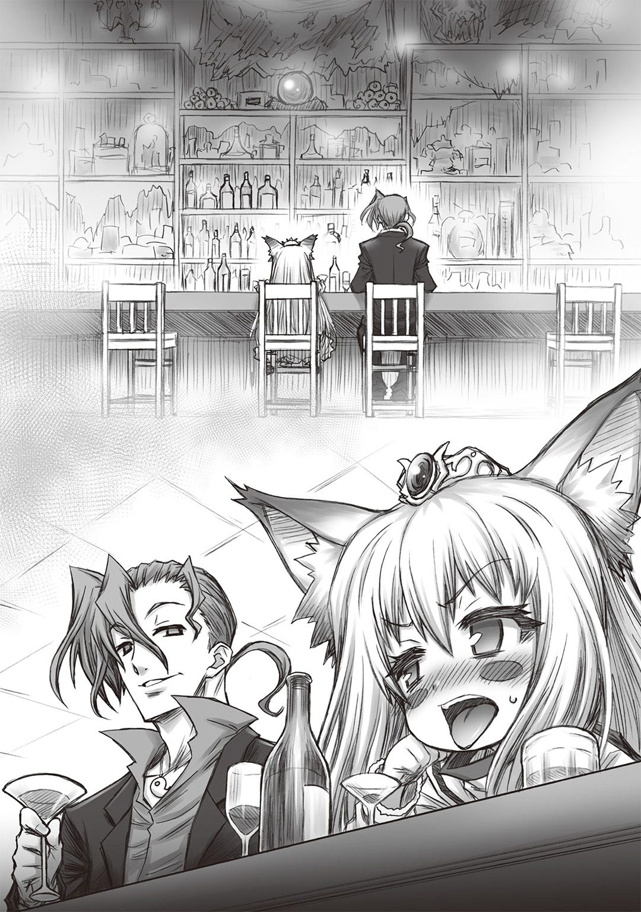
「伯道お前、あのとき純平の応急処置をしたらしいな。一昼夜、意識のないあヤツの病室に籠って治癒の術を行使していた、とか」
「ええまあ」
「まさかお前そのとき、応急処置以外のこともしていたのではなかろうな」
「いえいえ。あくまで献身的な介護をしていただけですよ。愛情たっぷりの、ね」
伯道の意味深な微笑みに、キツネ幼女は口をあんぐりと開いた。
「愛情ってお前......」
「まあ、彼に愛情を抱いているのは俺だけじゃありませんよ。きっと彼女も同じ気持ちでしょう」
グラスを置き、伯道は玉藻に告げる。
「――だから俺としては、彼を殺す以外の選択肢の模索を提案しますがね」
そんな伯道の言葉を、玉藻は鼻で「ふん」と一蹴する。
「甘いんだよ、お前もトーコも。......これならいっそ、わし自らが手を下してやったほうがいいかもしれんな」
そんな十六夜支社長の呟きが、ただの酒の席での愚痴だったのかどうか。
彼女の真意は、伯道にもわからなかった。
こんにちは、作者です。
二巻目は、新キャラ出して盛り上げようぜ的なコンセプトのお話でした。色々とキャラの設定を妄想するのは楽しかったのですが、その反面、執筆中にキャラ設定が大きく変わったりもして、結局何度も改稿をするハメになった巻でした。最初からもっと設定を練っておけば良かった......と激しく後悔中。
ここまで自分の計画性の無さを呪ったのは、小三の夏休み終盤、宿題地獄に陥ったとき以来でしょう。当時、圧倒的宿題量に追い詰められた僕は、恥も外聞も捨てて家族に協力を求めたものです。自由研究の手作り石鹼を父に作らせ、妹の絵日記を盗作し、読んでもいない音読カードに祖母のハンコを押させる。
おかげで遊びに集中できた小三の夏、僕はクラスで一番マリカーが上手くなりました。
さて、夏休みと言えば今回のカラー口絵です。
最初に本文を書き終えた後、それを担当に渡して描いてもらったのがあの水着イラストだったりします。別に本編に水着シーンがあるわけでもないので「意味はわかりませんが」とおっしゃっておりましたが......いえいえ、実に素晴らしかったです。セクシーなトーコさんと膨らみかけなマコちゃん。そのコントラストが最高でした。
水着イラストに感銘を受けた勢いで、描き下ろしの導入漫画も海水浴のお話を描いていただくことにしました。作中の時系列的には「導入漫画→本編→カラー口絵」......というイメージでしょうか。いつの日か、姉妹で海に行くのでしょうね、きっと。
その他もろもろ、暁月先生には今回イラスト関係で大変お世話になりました。美麗な表紙や挿絵はもちろんのこと、扉のコスプレ図鑑も大増量です。ここまで力を尽くしていただき、感謝感激の所存であります。
もちろん、お礼を述べなければならない人たちは他にもたくさんいます。
担当様はじめJUMP j BOOKS編集部の皆様、デザイン、校正等関係者の皆様、そして今、この本を実際にお手に取って下さっている皆様。二巻をお届けできたのは、皆様のお力添えがあってこそです。ありがとうございます。
思えば僕は、多くの人に支えられてきたものです。幼少期より散々迷惑をかけ続けている家族にも、たまには感謝しなければいけないのかもしれませんね。
ではまた皆様にお会いできる日を、心より楽しみにしつつ。
畑中りんご
本書は書き下ろしです。
著者紹介
畑中りんご
福島県出身。ジャンプ小説新人賞'13Ｗｉｎｔｅｒにてキャラクター小説部門金賞受賞。受賞した同作『魔滅のトーコ』でデビュー。
憧れのあの子は、実は超絶イケメンの彼氏持ちだった。
ＮＴＲ（寝取られ）モノが大好きな僕でも、現実でこれに遭遇すると結構へこみます。
というか、人生そんなんばっかりです。
そういう危機的状況に直面したクズ野郎は、いったいどう行動するのか。
ニ巻は、そんな感じのお話ですね。
暁月あきら
週刊少年ジャンプで西尾維新原作『めだかボックス』の作画を担当。好評を博した同作はアニメ化された。
２巻の発売ということで、またたっぷりとトーコさんのコスプレが描けて幸せです。
そして新キャラ、可愛い妹にカッコいいお兄さんの登場！
またも御馳走様です。
皆さんも楽しんで頂けたら幸いです。
ジャンプジェイブックスDIGITAL
魔滅のトーコ ２
著 者 畑中りんご
画 暁月あきら
© 2015 R.HATANAKA / A.AKATSUKI
２０１５年８月31日発行
この電子書籍は、ジャンプジェイブックス「魔滅のトーコ ２」
２０１４年10月22日発行の第１刷を底本としています。
装 丁 石山武彦［Freiheit］
編集協力 北奈桜子
発 行 者 鈴木晴彦
発 行 所 株式会社 集英社
〒１０１－８０５０
東京都千代田区一ツ橋２丁目５番10号
０３－３２３０－６０８０（読者係）
制 作 所 株式会社デジタルディレクターズ
本作品の全部また一部を無断で複製、転載、改竄、インターネット上に掲載すること、および有償無償に関わらず、本データを第三者に譲渡することを禁じます。なお個人利用の目的であっても、コピーガードを解除しての複製は、法律で禁じられています。